Independent Public-Records Investigation · Version 1.0
The Ground Beneath Ladera Ranch
A historical land-use and environmental records investigation of Rancho Mission Viejo and the community built on it — what the public record shows, what it does not, and what remains genuinely unknown.
This publication does not establish that any pesticide, property, organization, employer, school, water provider, government agency, or other party caused any illness. It is an independent research and data-organization project. It does not provide medical advice. Publicly reported health events may not have been independently medically verified. Geographic and temporal overlap does not establish exposure or causation.
Formal conclusions would require authorized epidemiological analysis, verified medical information, exposure assessment, toxicological review, and independent scientific evaluation — none of which this project performs. It contains no patient information, no residential addresses, and no case locations.
Author's Note — Why This Investigation Began
By Andy Stavros
I started looking into the history of this land after learning about the reported pediatric Ewing sarcoma cases in Ladera Ranch.
I don't live in Ladera Ranch. I live in Newport Beach, about twenty miles up the coast, and I want to be straightforward about that from the outset — this is not my neighborhood and these are not my neighbors.
What pulled me in was the pesticide discussion that started circulating. Because the moment you look at what gets applied to maintain a master-planned community — the turf, the parks, the trails, the common areas — you realize those are the same products, applied by the same kinds of contractors, in the parks my own kids play in. And in the parks in your neighborhood. And in every other community across this county built on the same model, on land with the same agricultural past.
That is what made this feel worth the effort. Not that something happened in one place, but that if there is a question worth asking about the ground under one master-planned community in Orange County, it is very likely worth asking about a great many of them.
I am not a scientist. I am not a historian, an epidemiologist, or a regulator. I am a father and a problem solver. What I had was a question that would not go away, and access to modern AI tools capable of organizing public records, historical maps, aerial photographs, government reports, and archival material at a scale I could not have managed alone.
I want to be precise about what this project is, because the subject invites people to hear something other than what is being said.
This investigation was not built to prove a theory. It was built to ask a narrower and more answerable question: has every reasonable historical question about this land already been considered? When a community is developed on former ranch land, someone is supposed to look backward — to review the aerial photography, reconstruct what the land was used for, and identify whether any past activity left something behind. That review happened here. This project asks how far back it looked, what it found, and whether anything falls outside the window it examined.
That is a question about the completeness of a historical record. It is not a claim that anyone was harmed by anything found in it.
I want to be equally clear about what this project cannot do. Nothing in these pages establishes that any pesticide, property, company, agency, school, water provider, or individual caused any illness. Geographic and temporal overlap is not exposure. Exposure is not dose. Dose is not causation. Establishing any of those links requires authorized epidemiological analysis, verified medical information, exposure assessment, and independent scientific review — none of which this project performs, and none of which it should be read as substituting for.
There is a particular temptation in work like this, and I have tried hard to resist it. When you are looking for something, you find patterns. The discipline this project imposes on itself is that every claim carries its own counter-evidence, given the same visual and editorial weight as the claim itself. Where the evidence is thin, the report says so. Where a promising line of inquiry collapsed, the report records the collapse rather than quietly dropping it. Several of the most useful results here are negative ones.
Two examples, both of which cut against the working hypothesis:
The investigation initially concluded that the earliest available aerial photography of this land was from 1948 — three decades after the cattle-dipping era — and that a dipping vat was therefore undetectable in principle. That was wrong. Orange County publishes aerial photography going back to 1929, and the 1937–38 frames resolve at about 1.15 feet per pixel. The imagery was searched systematically. Nothing was found.
Then I made the opposite mistake. Having found better photographs, I claimed the resolution problem had disappeared entirely and that a corral complex "would be unmistakable." That was also wrong. The USDA's own 1911 circular for California describes cage vats costing sixty dollars, installed beside an existing corral with no drainage pen, and wade tanks costing under ten dollars in lumber. Neither would necessarily be visible at all.
So the negative result stands as an observation and is now recorded at low confidence. I got it wrong in both directions before getting it right, and both attempts are still in the text.
The second example is more personal. I noticed, looking at property listings, that the homes here seemed to sit exactly where the old ranch water sources had been — and water is where cattle gather, and where cattle gather is where they were worked. It felt like a real pattern. It was tested directly against every water body the 1968 USGS survey mapped, and against 10,618 building footprints. The measured result: homes are no more likely to sit on the old water than on any other ground here. The pattern I thought I saw was development covering nearly everything, which is a different thing entirely.
I have left both of those in, in full, because a report that only contains what survived scrutiny is not an honest report.
What follows is a record of what the public evidence shows, what it does not show, and what remains genuinely unknown. The unknown category is larger than I would like. I would rather publish an honest map of my own ignorance than a confident story that later falls apart.
If any part of this is wrong, I want to know, and I will correct it in the open. Corrections issued so far are listed in the version history at the end, including the two above.
This publication contains no patient information, no residential addresses, no case locations, and no identifying details of any child or family. That is a deliberate and permanent constraint of the project, not a limitation of the available data.
If you have documents, photographs, maps, or memories of this land, please see the invitation that follows. This is one person's work, and it is not finished.
What Is Still Needed
A note from Andy Stavros
This investigation reached a point where the remaining questions are no longer research questions. They are retrieval questions — specific documents, photographs, and recollections that exist somewhere, and that nobody has yet put in front of the analysis.
This chapter lists them. Not as a request for help with my project, but because the report itself identifies them as the things standing between where the evidence sits now and an actual conclusion.
What would move this from open to answered
Each item below is named in the report, with the reasoning for why it matters.
The 1995 hazardous-materials assessment. Michael Brandman Associates, May 1995, Appendix H, prepared for the Antonio Parkway Roadway Alignment and Land Use Plan. It is the hazardous- materials study for the land Ladera Ranch was built on. It is cited by name in county records and is not online. A complete sweep of the state clearinghouse for Orange County filings from 1990 to 2000 returned no Ladera Ranch environmental impact report at all.
This one document would answer, for the residential footprint itself, the central question of the audit chapter: how far back did the historical review actually look? For the neighbouring Ranch Plan land the answer is 1952 — forty years after the cattle-dipping era ended.
Orange County Board of Supervisors minutes, 1907–1912. Dipping in this county was county-ordered and supervised by the county veterinarian. That means board action, appropriations, an inspector appointment, and the record of a claim filed in 1908 after six cattle died following a dip. Those minutes should name locations. They are not digitised.
The Anaheim Gazette and the Santa Ana Blade. The papers of record for Orange County during the quarantine, neither digitised anywhere. Quarantine proclamations were published as paid legal notices — which means the locations may be sitting on microfilm in Santa Ana or Fullerton, unread since they were printed.
Ranch photographs. Any photograph of cattle operations on this land — corrals, chutes, water tanks, working crews, roundups. A single image showing a dipping vat, or clearly showing its absence at a known working area, would do more than any amount of further archival searching. The report establishes that an arsenical swim vat operated somewhere in Orange County. It cannot say where.
Survey field notes. General Land Office notes for the townships along the western edge of the community. Surveyors recorded springs, corrals, houses and fences in their running notes — detail that never reached the published plat.
Recollection. Anyone who worked this land, or whose parents or grandparents did. Where cattle were worked. Where the corrals and the water were. What was there.
That last item is the only one on this list with a deadline. Every archive here will still exist in ten years. The people who watched this ranch operate will not.
Why this is an offer to facilitate, not a request to lead
I want to be precise about my role, because it is easy to misread.
I did not set out to lead anything. I set out to find whether a question had been asked properly, and the honest answer turned out to be partly, and not far enough back. Along the way this became a working research system — a graded source registry, an evidence matrix where every claim carries its own counter-evidence, a georeferenced map stack spanning 1929 to the present, and a published log of every dead end.
That infrastructure exists now. It took considerable effort to build and it is sitting here either way.
So the offer is simply this: if you have something relevant, the cheapest place to test it is against a system that already holds everything else. A photograph can be checked against 1929 aerial photography and the 1968 water survey in minutes. A document can be cross-referenced against ninety-one catalogued sources and thirty-nine claims immediately. That is not a favour to anyone — it is just where the comparison costs least.
And if a public agency, a university, a journalist, or an epidemiologist wants to take this further, everything is available: sources, data, scripts, archived documents, corrections. Take it. It was assembled to be used, not owned.
I am one person with a method and a lot of organised material. I am not the right institution to reach a conclusion, and this report does not reach one.
What I cannot accept, and why it matters
Please do not send medical information about any individual — not diagnoses, not treatment records, not the names of affected children. This project holds health information at aggregate level only and always will. That is not a formality. It is the difference between a research project and something that harms the families it claims to care about.
Please do not send addresses or anything identifying a specific child or household. No map in this report shows a residence, a case location, or a patient. None ever will.
Anyone wanting to discuss a family's medical experience should be speaking with a physician, a public health agency, or the California Cancer Registry — people with the authority, the training and the legal protections to handle it properly. I have none of those, and pretending otherwise would cause harm.
Corrections are welcome and will be published. Nine have been issued so far, every one in full, including several that weakened conclusions already in print. A tenth would be a contribution, not an embarrassment.
Disclosure
I am a licensed real estate agent in Orange County. I do not live in Ladera Ranch, have never held a listing there, and have no property interest in the community.
I am stating that here rather than letting it surface later, because a report touching on land history and soil could affect how people see a place, and a reader is entitled to know what the author does for a living before weighing a word of it.
The professional incentive runs opposite to the accusation anyone would make: there is nothing to gain from unsettling a housing market. And this report does not claim that anything harmful is present in Ladera Ranch soil — because no measurement exists showing that it is. What it documents is a gap in a historical records window, and a set of questions that can be closed.
On how this was made. This investigation was assembled with substantial AI assistance. That brought real advantages — a great deal of material located, cross-checked and organised quickly — and one specific risk: fluent writing can make uncertain conclusions read as settled.
The countermeasures are visible throughout: every claim carries mandatory counter-evidence, dead ends are published beside findings, sources are graded and never silently promoted, corrections are issued in full.
Those measures have already proven insufficient on their own. Of the nine corrections issued, most share one shape — an assumption adopted without checking the primary source, in whichever direction made the analysis simpler. Read accordingly, and verify anything that matters to you against the citations. They are all listed at the end, with URLs.
Scope, Methodology, and Scientific Caution
What this investigation covers
Geographically, three nested zones:
| Zone | Definition | Purpose |
|---|---|---|
| A — Core | Present-day Ladera Ranch: all villages, HOAs, parks, schools, trails, common areas, slopes, drainage corridors, and commercial centers | Primary study area |
| B — Exposure ring | Approximately five miles surrounding: Las Flores, Rancho Mission Viejo, Mission Viejo, Coto de Caza, Rancho Santa Margarita, San Juan Capistrano, Laguna Niguel, adjacent unincorporated Orange County | Sources that need not be underfoot to matter |
| C — Comparison | Talega, Aliso Viejo, Foothill Ranch and similar master-planned communities | Matched on objective criteria only — development age, demographics, landscaping intensity, climate, housing stock — and never on cancer counts |
That last constraint matters more than it may appear. Selecting comparison communities by disease rate would manufacture the contrast the investigation is supposed to test. The comparison set was fixed on development characteristics before any health data were consulted.
Temporally, the primary window is January 2005 to present, extended to January 2000 where records allow. Land-use history reaches as far back as reliable public records permit — in practice to the Spanish land grant period, with photographic evidence beginning in 1929.
Every dataset records its source publication date, observation period, retrieval date, temporal precision, known update schedule, and whether the record is current, historical, inferred, or archived.
The four-way classification
Every substantive statement in this publication carries one of four labels. They are not decorative. They encode how much weight a statement can bear.
ESTABLISHED FACT — Documented in a primary or official source, verified against that source, and reproducible by a reader who follows the citation. Example: the 1968 USGS field survey mapped 41 surface-water bodies within the study footprint. Anyone can pull that sheet and count them.
HISTORICAL CONTEXT — Accurate general background that situates the investigation but is not itself a finding about this specific land. Example: how arsenical cattle dipping worked as a practice. True, well-documented, and not evidence that it happened here.
INVESTIGATIVE LEAD — A specific, testable proposition supported by partial evidence, carrying a defined next step. A lead is a question with a method attached. It is not a finding, and it is never presented as one.
OPEN QUESTION — Identified as material, and genuinely unresolved. These are stated plainly rather than smoothed over, because the shape of what is unknown is itself a result.
The evidence standard
Every major claim carries a claim ID, a classification, a confidence level, supporting sources, and limiting or contradictory evidence. The counter-evidence field is mandatory. Where a claim has no meaningful counter-evidence, that is stated explicitly rather than left blank — an empty field is ambiguous between "none exists" and "none was sought."
Sources are graded on a fixed hierarchy:
| Grade | Meaning |
|---|---|
| A1 | Official machine-readable government dataset; peer-reviewed primary research; official registry publication; official agency report |
| A2 | Official government webpage; regulatory filing; official meeting document; official GIS service |
| B1 | University or research-institution report; systematic review; nonprofit technical report with transparent methodology |
| B2 | Reputable news outlet quoting named sources or documents; public statements from identifiable stakeholders |
| C | Advocacy materials; law-firm summaries; community petitions; social media; unverified case counts; anonymous claims |
| D | Speculation; unsourced reposts; unsupported online claims |
A record carries exactly one grade, and a lower grade is never silently promoted. A claim that appears in a newspaper (B2) does not become A1 because it is later repeated by someone official; it becomes A1 only when the underlying official record is located and read.
What was actually done
The methodology is deliberately mundane, because mundane methods are checkable.
Imagery. Historical aerial photography and topographic sheets were retrieved from Orange County's public GIS services and the USGS, georeferenced to a single common extent (−117.680 to −117.616 longitude, 33.520 to 33.575 latitude), and examined systematically — Zone A was divided into a grid and each tile inspected at full resolution, rather than scanned by eye for anything that jumped out. Georeferencing was verified by confirming that modern landmarks land where they belong.
Feature extraction. Where a feature needed to be extracted from a historical map, the method was chosen to maximize source quality rather than convenience. Surface water was taken from the 1968 USGS sheet by isolating the printed cyan hydrography ink — meaning every resulting feature was drawn by a surveyor who visited the ground. An earlier attempt to detect water directly from the aerial photography by brightness and texture was abandoned after review showed it was detecting hillslope shadow. Both the failure and the reasoning are recorded in the dead-end log.
Statistics. Where a spatial claim is tested, it is tested against an explicit null model, with the null reported alongside the result so a reader can judge the comparison rather than accept a ratio on trust. Where the choice of null materially changes the answer, both are reported and the fairer one is identified and justified.
Scientific caution — the limits that do not move
Several limits apply throughout and are not overcome by any amount of additional archival work.
Spatial coincidence is not exposure. That a historical activity occurred where houses now stand establishes proximity in space and nothing else. It does not establish that any material was present, that it persisted, that anyone contacted it, or in what quantity.
Absence of evidence is not evidence of absence — and the reverse is also true. No dipping vat has been found in the imagery. That is meaningful, because the imagery is now good enough that a vat complex should have been visible. It is not proof that none existed, because a facility demolished and backfilled before 1929 would leave no surface trace. Both halves of that sentence are load-bearing.
Ecological inference has hard limits. Nothing here is an individual-level analysis. Community-scale patterns cannot be transferred to individuals, and this publication does not attempt it.
The health question is out of scope by design. This is a land-use and records investigation. Whether the reported cases represent a statistical excess, and if so why, is a question for authorized epidemiological analysis with access to verified medical information — which this project does not have and does not seek.
Modern terrain cannot describe historical terrain here. Ladera Ranch was mass-graded. Any measurement taken from the modern land surface inside the built area describes engineered pads, not original landform. This specifically invalidates one otherwise-attractive analysis, which is documented in the GIS chapter rather than quietly omitted.
Privacy and ethics
Fixed constraints, applied throughout, without exception:
- No identification or inference of individual children.
- No exact residential addresses or residential coordinates, ever.
- No inference of the schools, parks, or routines of specific children from any source.
- No scraping of private profiles; no deanonymization.
- No medical speculation about named individuals.
- Health data stored and presented at aggregate level only.
- No fabricated data, no silently filled missing values, no invented records.
Where a dataset would permit finer resolution than these rules allow, the rules win.
Language discipline
The publication distinguishes throughout between: verified fact, credible report, official statement, scientific finding, public allegation, unverified case report, model-based estimate, inference, hypothesis, and missing evidence. Phrases such as "this proves," "they covered it up," or "the cancer was caused by" do not appear, because the evidence does not support them.
Where the public record appears not to contain something, the wording is careful and deliberate: "the searchable materials examined in this investigation do not appear to identify…" rather than "they never studied…". The distinction is not hedging. A document that exists but is not online, or that exists in a file cabinet in Santa Ana, is invisible to this investigation and must not be declared nonexistent by it.
Executive Summary
What this investigation is
An independent reconstruction of the land-use history of Rancho Mission Viejo and the community of Ladera Ranch built on it, undertaken to answer one question: has every reasonable historical question about this land already been considered?
It was prompted by reported pediatric Ewing sarcoma cases in the community. It is not an attempt to explain them, and nothing in it establishes that any party or substance caused any illness. It is a records investigation, and its subject is the completeness of a historical record — not the health of any individual.
What was found
The land was open cattle rangeland until development. Confirmed across six aerial photographs spanning 1929 to 1947, four USGS topographic editions, and the land-grant labelling on the sheets themselves. No structures are resolvable inside the community footprint in any pre-1950 frame except a single building on Trabuco Creek.
Aerial photography of this land exists back to 1929 — eighteen years earlier than this project previously believed. Orange County publishes it through a public service that had been missed for a mechanical reason: an unconventional URL path. The 1937–38 frames resolve at 1.15 feet per pixel.
No cattle dipping vat or corral complex was found. Zone A was divided into a grid and searched systematically, tile by tile, at full resolution — twenty-four tiles across two epochs. Nothing was found. But this finding is weaker than it first appeared — see below.
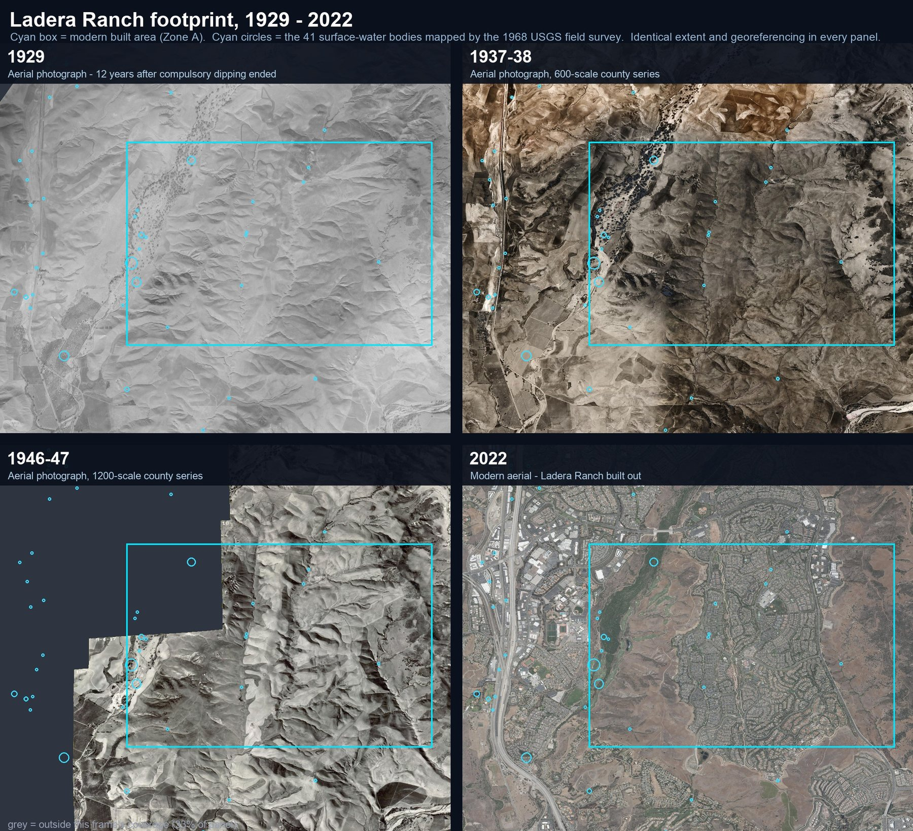
research/historical_imagery/11_timeseries_1929-2022_with_water.jpg
The 1968 USGS field survey mapped 41 surface-water bodies in the study footprint, sixteen inside the community. These were extracted from the printed hydrography ink, meaning every one was drawn by a surveyor who visited the ground.
Every one of those 41 water bodies now has a house within 500 metres. The median distance from a ranch-era water source to the nearest home is 66 metres.
But homes were not preferentially built on them. Tested against 10,618 building footprints and a matched null: enrichment 0.97×, p = 0.51. The old water sites are no more built over than any other ground. Both results are true because development covered nearly everything, so proximity to housing stopped carrying information.
What was not found
No evidence that arsenical cattle dipping occurred on this land. No vat, no corral, no map label, no photograph, no purchase record, no employee account, and no soil measurement places it here.
But the programme did reach this county. USDA Bureau of Animal Industry Circular 174, Eradicating Cattle Ticks in California (1911), lists Orange County among counties "heavily infested" with cattle ticks, south of the California quarantine line. The page was read and verified directly. This resolves the first link in the hypothesis chain — in the affirmative.
It is a county-level classification. It places no vat on any parcel.
And dipping demonstrably happened here. The Los Angeles Herald of 27 May 1908 — read and verified directly — reports cattle being dipped at four named Orange County locations, under order of the county veterinarian. Six hundred to seven hundred head at Capistrano alone. A companion article records a claim against the county after six cows died following a dip.
The nearest named location, Capistrano, is 3.4 miles from this community — inside the five-mile ring, outside the community itself. Trabuco Canyon, despite the shared drainage name, is 8.4 miles away and outside the ring entirely. No named dipping location falls inside Ladera Ranch, and none of the four ranches named is Rancho Mission Viejo.
The chemistry is now named. The California State Veterinarian's 1908 report records that "the arsenical dip was first used in California during 1907" and gives its formula — 8 lb arsenic, 24 lb carbonate of soda, 24 lb soap, 1 gallon pine tar, 500 gallons water. It then describes "one notable case… in Orange County, where a number of cattle were dipped in this solution… while swimming through the vat."
So: an arsenical swim vat operated somewhere in Orange County in this period. The report gives no location, names no ranch, and does not place it in this footprint. And the State Veterinarian disputed the poisoning claim, attributing the deaths to a 30–35 mile drive the same day.
The Orange County quarantine ran roughly February 1908 to March 1912 — narrower than the 1907–1917 window this project had assumed, and it pushes the gap to the earliest aerial photography out to seventeen years.
The environmental review began in 1952 — forty years after the dipping era ended. The Phase I assessments have now been obtained and read. EIR 589 Appendix I states across all nine Planning Areas: "Photographs dating from 1952 to 1999 were reviewed." The one assessed site inside Ladera Ranch reviewed five aerials: 1952, 1968, 1977, 1989, 1994.
No document obtained contains the terms "dip vat", "cattle dip", or "arsenical dip" anywhere. The only "arsenic" hit in 582,000 characters concerns a mine-tailings reservoir; the only "dipping" hit is metal-finishing at an industrial plant.
The one assessed site inside the community was cleared with no soil sampling. Oso Grande School — recorded by DTSC as past use "AGRICULTURAL – LIVESTOCK" — was cleared on a documentary and visual basis. Pesticides were discounted qualitatively; the geotechnical borings reviewed were checked for methane and organics, not pesticides or arsenic. Its EnviroStor status reads "NO CONTAMINANTS FOUND", which here means none were looked for in soil.
This is a gap in the historical window, not a failure. A Phase I ESA must use reasonably ascertainable sources, and the aerial archive available to consultants in 2002 began in 1952. The 1929–1947 county imagery this project used is a modern digitisation. That is a reason to look again — not a reason to conclude anyone should have looked harder then.
And the most relevant document is still missing. EIR 589 names it: Michael Brandman Associates, May 1995, Appendix H — Hazardous Materials Environmental Site Assessment, for the land Ladera Ranch was built on. It is not online. A complete CEQAnet sweep of Orange County filings for 1990–2000 returned no Ladera Ranch EIR at all. This is the top-priority records request arising from this investigation.
The most important caution
The hypothesis that prompted this investigation is currently the least well-documented of the pathways examined.
| Pathway | Documentation | Published link to Ewing sarcoma |
|---|---|---|
| Arsenic at nearby school sites | Strong | None |
| Organochlorines at school sites | Strong | None |
| Plugged oil/gas well proximity | Strong | Suggestive, non-significant |
| Landscape pesticides | Unmeasurable from state data | None |
| Arsenical cattle dipping | County-level only; nothing site-specific | None |
Two plugged exploratory wells lie within about a mile of the community centroid — one at roughly a quarter-mile — and this is the only pathway with any published association with Ewing sarcoma specifically. That association is suggestive and statistically non-significant, and its discovery came from correcting an error in this project's own geometry rather than from looking for it.
Two corrections that changed the argument
Both are published in full rather than quietly revised.
The imagery premise was wrong — twice, in opposite directions. First this project argued a vat was undetectable in principle, because the earliest imagery was 1948 at a resolution where a vat would be one pixel. Photography from 1929 exists at 1.15 ft/px, so that was wrong (C-003). The project then swung the other way and claimed the resolution objection had "disappeared entirely" and a corral complex "would be unmistakable." That was also wrong (C-004). USDA Circular 174 documents that California used cage vats — installed beside an existing corral, no drip pen, $55–65 in materials — and wade tanks costing under $10 and measuring about fifteen feet. Neither need be visible at all.
The negative imagery finding is consequently downgraded to Low confidence. It has force against a large permanent swim vat, and little to none against the cheap designs the federal government was actually recommending for California.
A promising spatial pattern did not survive testing. The observation that homes appear to sit exactly where the ranch water sources were is descriptively accurate and causally unsupported. It was tested and it failed. It is retained in full, including the reasoning that made it appealing.
What should happen next
Archival, in priority order. The County Agricultural Commissioner and California State Veterinarian tick-eradication files, and USDA Bureau of Animal Industry records — these can resolve whether Orange County was ever in the programme, which is cheap and decisive. Then Rancho Mission Viejo's own operating records. Then General Land Office survey field notes, in which surveyors recorded springs, corrals, and improvements that never reached the published plat.
Physical, if archival work supports it. Ground-penetrating radar at the Trabuco ranch node and the mapped water bodies would detect buried concrete directly. Soil sampling should test arsenic and lead together — the ratio distinguishes an orchard lead-arsenate signature (broad, both elevated in proportion) from a dipping-vat signature (tiny, arsenic elevated without proportionate lead). Local background must be established first or the results cannot be interpreted.
Regarding the wells. Well-integrity and plugging records for the two nearest wells, and any soil-gas monitoring data, have not been obtained. Given that this pathway carries the only published Ewing sarcoma association of any considered here, it arguably warrants more attention than the hypothesis that prompted the work.
The honest bottom line
The reported pattern warrants investigation. The available evidence does not establish causation, and this publication does not attempt to.
On the specific question that prompted the work: the arsenical-dipping hypothesis is coherent, testable, and currently unsupported by any direct evidence. It should be neither asserted nor abandoned. It should be resolved — and there is a clear, affordable path to resolving it that begins in an archive rather than in the ground.
The single most useful thing this investigation has produced is not a finding. It is a sampling frame: forty-one specific locations, plus one structure, where the historical activity of interest would have concentrated if it occurred at all.
Key Findings at a Glance
For readers who need the substance without the argument. Every line here is developed, sourced, and qualified in the chapter cited beside it.
The six-link chain
The hypothesis that prompted this investigation requires six propositions to hold. This is where they stand.
| # | Proposition | Status |
|---|---|---|
| 1 | The cattle tick programme applied to Orange County | ESTABLISHED |
| 1a | Dipping occurred in the county, at named locations, under county order | ESTABLISHED |
| 2 | This ranch dipped cattle at its own facility | Unevidenced |
| 3 | A facility stood within or near the community footprint | Unevidenced |
| 4 | Arsenic residue persists at that location | Unevidenced |
| 5 | Development disturbed or built over it | Unevidenced |
| 6 | A pathway to human exposure exists | Unevidenced |
One and a half links of six. The gap between the programme reached this county and a vat stood here is unbridged by any evidence.
What is established
| Finding | Where |
|---|---|
| Orange County was classified by the USDA as heavily tick-infested, south of the California quarantine line — USDA BAI Circular 174 (1911), p. 285, read directly | Ch. 8 |
| Dipping happened in Orange County in 1908 at four named locations, county-ordered, 600–700 head at Capistrano alone. Six cattle died and a claim was filed against the county | Ch. 8 |
| The quarantine ran ~Feb 1908 to Mar 1912 | Ch. 6 |
| The land was open cattle rangeland until development, across six aerials 1929–1947 and four topographic editions | Ch. 14 |
| Aerial photography exists back to 1929 at up to 1.15 ft/px, free and public | Ch. 14 |
| 41 surface-water bodies were mapped by the 1968 USGS field survey, 16 inside the community | Ch. 15 |
| Every one of those 41 now has a house within 500 m; median distance 66 m | Ch. 15 |
| The environmental review looked back only to 1952 — forty years after the dipping era | Ch. 16 |
| No document obtained contains "dip vat", "cattle dip" or "arsenical dip" | Ch. 16 |
| The one assessed site inside the community was cleared with no soil sampling | Ch. 16 |
| The 1845 grant went to Agustín Olvera, not Forster — Forster was the later claimant. 46,432.65 acres | Ch. 6 |
| The patent rested on an 1858 survey, not the 1867 survey commonly indexed | Ch. 6 |
What was tested and did not hold
These matter as much as the positive findings.
| Proposition | Result |
|---|---|
| Homes were preferentially built on the ranch-era water sites | Not supported. 0.97×, p = 0.51 against a matched null |
| A dipping vat would be unmistakable on 1.15 ft/px imagery | Wrong. USDA documents wade tanks costing under $10, ~15 ft long |
| A dipping vat was undetectable in principle | Wrong in the other direction. 1929 photography exists |
| Building slope proves valley-bottom siting | Circular. Mass grading manufactured the flatness |
| The footprint is entirely unsectioned grant land | Wrong. The western edge is sectioned T7S R8W |
| Automated detection can find water or structures in the aerials | Failed. 4% accuracy on one pass; shadow artefacts on another |
The finding that inverts the premise
Ranked on documentation, the hypothesis that prompted this investigation comes last.
| Pathway | Documentation | Published Ewing sarcoma link |
|---|---|---|
| Arsenic at nearby school sites | Strong | None |
| Organochlorines at school sites | Strong | None |
| Plugged oil & gas well proximity | Strong | Suggestive, non-significant |
| Natural background arsenic | Strong | None |
| Landscape pesticides | Unmeasurable from state data | None |
| Imported fill / grading | Weak | None |
| Arsenical cattle dipping | County-level only | None |
Two plugged exploratory wells sit within about a mile of the community centroid, one at roughly a quarter-mile. That is the only pathway examined here with any published epidemiological association with Ewing sarcoma specifically — and it surfaced from correcting an error in this project's own geometry, not from looking for it. Ch. 20
The single most important missing document
Michael Brandman Associates, May 1995 — "Appendix H, Hazardous Materials Environmental Site Assessment" for the Antonio Parkway Roadway Alignment and Land Use Plan.
Named in county records at EIR 589 Appendix I page 21. Not online. It would answer, for the residential footprint itself, how far back the historical review looked.
Records request: Orange County Planning, (714) 834-2166. Ch. 16
What would settle the question
| Method | What it would resolve |
|---|---|
| Soil chemistry — arsenic AND lead together | The ratio separates orchard lead arsenate (broad, both elevated proportionally) from a dip vat (tiny area, arsenic without proportionate lead). Background must be established first |
| Geophysics (GPR / EM) | Detects buried concrete — but note a wooden wade tank would leave none |
| GLO survey field notes | Surveyors recorded springs, corrals and improvements that never reached a plat |
| Rancho Mission Viejo's own records | Dipping was mandated and generated paperwork |
| OC Board of Supervisors minutes, 1907–1912 | County-ordered dipping means board action and appropriations |
| The Bancroft witness testimony (272 MB, already on disk) | Sworn descriptions of ranch improvements — needs palaeographic reading |
What this report does not say
It does not establish that any substance is present in Ladera Ranch soil.
It does not establish that anyone was exposed to anything.
It does not explain the reported illnesses, and does not attempt to.
It contains no patient information, residential addresses, or case locations, and never will.
Eight corrections have been issued and published in full. Five share the same shape: an assumption about the physical evidence adopted without checking the primary source, in the direction that made the analysis simpler. Two of them weakened conclusions this project had already published.
That pattern is the most useful thing this investigation has learned about its own method, and there is no reason to believe a ninth is not sitting in these pages right now.
Historical Timeline
Every entry carries a source and a confidence level. Entries marked UNVERIFIED are recorded because they appear in secondary accounts and are useful for orientation, but have not been confirmed against a primary source by this investigation. They should not be relied upon.
Dates in the cattle-tick section are the most rigorously established in this timeline, because they were the investigation's decisive question and were pursued to primary sources.
The land before development
| Date | Event | Source | Confidence |
|---|---|---|---|
| Pre-contact | Acjachemen (Juaneño) occupation of the San Juan Creek and Trabuco drainages | General historical record | Context |
| 1776 | Mission San Juan Capistrano founded | General historical record | Context |
| 10 May 1841 | Rancho Santa Margarita y Las Flores granted by Governor Alvarado to Pío and Andrés Pico, San Diego County | Hoffman (1862), claim 700 [S-HOFFMAN-1862] | High |
| 16 Feb / 31 Jul 1841 | Rancho Trabuco — two leagues granted provisionally then finally by Governor Alvarado to Santiago Argüello et al. | Hoffman (1862), claim 412 | High |
| 4 Apr 1845 | Rancho Mission Vieja or La Paz granted by Governor Pío Pico to Agustín Olvera. 46,432.65 acres. Forster was the later claimant, not the grantee | Hoffman (1862), claim 396 — READ AND VERIFIED DIRECTLY [S-HOFFMAN-1862] | High |
| 21 Apr 1846 | Three further leagues of Trabuco granted to Juan Forster by Pío Pico | Hoffman (1862), claim 412 | High |
| 1848 | Treaty of Guadalupe Hidalgo — existing property titles to be honoured | Armor (1921) | High |
| 16 Oct 1852 | Forster files the Mission Vieja claim before the US Land Commission | Hoffman (1862) | High |
| 31 Oct 1854 | Claim confirmed by the Commission | Hoffman (1862) | High |
| 21 Feb 1857 | Confirmed by the District Court; appeal dismissed 4 Jun 1857 | Hoffman (1862) | High |
| Jul 1867 | Plat of Rancho Santa Margarita y Las Flores surveyed by Max Strobel, Deputy Surveyor; cartouche states 89,742 acres. San Diego County grant | Bancroft Library, Land Case Map E-1362A [S-BANCROFT-E1362A] | High |
| 1868, 1870 | Handwritten certifications added to the Strobel plat, later than the survey date | Same sheet, read directly | High |
| c. 1863–64 | Forster acquires Santa Margarita y Las Flores by purchase from Pío Pico — not by grant | Secondary accounts, dates conflict | Low |
| 18 Dec 1858 | Survey and plat of Mission Viejo or La Paz approved by the US Surveyor General. Certificate read directly: "the survey and plat was approved by the U. S. Surveyor General, on the 18th day of December, 1858" | Land Commission case file 250 SD p.85 — READ DIRECTLY [S-BANCROFT-250SD] | High |
| Sep–Oct 1861 | Survey advertised in the San Bernardino Herald (27 Sep – 16 Oct) and Los Angeles Star (29 Sep – 2 Oct) | Same certificate | High |
| 6 Aug 1866 | US patent issued for Mission Vieja or La Paz to Juan Forster, and for Trabuco | California Secretary of State, US Surveyor General grant-map list | High |
| 19 Dec 1867 | A survey by J. C. Hays is indexed for Mission Viejo or La Paz (LA Book 3/67-68) and Rancho Trabuco (3/65-66). Postdates the patent, so it is NOT the survey the patent rested on. What it is remains unresolved | OC GIS LMS/DocumentsandMaps layer 999012 — indexed, scan not retrieved |
Medium |
| 19 Feb 1883 | "Mission Viejo Ditch" survey by Egan indexed (Book 1/66-67) — a water-infrastructure record | OC GIS, same layer — indexed, not retrieved | Medium |
| 1879 | US patent for Santa Margarita y Las Flores (the San Diego County grant) reported issued to Pío Pico — a different rancho from Mission Viejo, whose patent issued 1866 | UNVERIFIED — secondary | Low |
| 20 Feb 1882 | Death of Juan (John) Forster | Secondary accounts | Low |
| 1882 or 1884 | Sale to Richard O'Neill and James C. Flood. Sources conflict on year, price ($457,000 vs ~$460,000), and whether ownership was equal or Flood-owned with O'Neill managing | Secondary, grade B2–C — UNVERIFIED | Low |
| 1886 | "Santa Marguerita Ranch — Vineyard and Winery" photographed | USC / California Historical Society, CHS-2085 [S-USC-CHS] | High |
| 1900 | Santa Margarita ranch cattle operations photographed (CHS-2358/2359/2360) | USC / California Historical Society [S-USC-CHS] | High |
The 1867 plat, the 1886 photograph and the 1900 photographs all depict San Diego County — Rancho Santa Margarita y Las Flores, now largely Camp Pendleton. That property shared ownership with Rancho Mission Viejo and was partitioned from it in the 1940s, but it is different land. They are included here to date the shared ownership era, not to depict this study area.
The cattle tick era — the best-established section of this timeline
| Date | Event | Source | Confidence |
|---|---|---|---|
| Nov 1898 | Infected cattle brought to Riverside "from the San Joaquin ranch, in Orange county"; dipped in crude oil | Los Angeles Herald, 17 Nov 1898 [S-NEWS-CDNC] | Medium |
| 1903 (14 Apr) | An "Orange County Cattle Quarantine" is reported — this concerns ANTHRAX, not ticks. Recorded here specifically so it is not miscited | Los Angeles Herald, 14 Apr 1903 | High |
| 15 Apr 1907 | California Governor's proclamation establishing cattle fever quarantine | LOCATED BUT NOT RETRIEVED — California State Library returns HTTP 403 (DE-010) | Medium |
| 28 Jul 1907 | Governor Gillett establishes quarantine against Texas fever; Orange County remains quarantined | San Francisco Call, 28 Jul 1907 | Medium |
| 1 Feb 1908 | Gillett proclamation — cited in a later article as the operative instrument | Los Angeles Herald, 7 Feb 1909 (citing it) | Medium |
| 27 May 1908 | Dipping in progress at four named Orange County locations: the J. C. Joplin ranch in Trabuco Canyon, Capistrano (600–700 head), Yorba, and the Bixby ranch in Santa Ana Canyon. Dr. Coleman, deputy state quarantine officer, consulting with county cattle raisers | Los Angeles Herald, 27 May 1908, p. 10 — READ AND VERIFIED DIRECTLY [S-NEWS-LAH1908] | High |
| 25 Jul 1908 | E. J. Levengood claims $400 against Orange County after six cows died following a dip ordered by county veterinarian Dr. W. S. McFarlane, who "supervised the mixing of the preparation used" | Los Angeles Herald, 25 Jul 1908 | High |
| 15 Aug 1908 | The Levengood suit reported in the agricultural press | Pacific Rural Press, 15 Aug 1908 | High |
| 1909 | USDA Bureau of Animal Industry 26th Annual Report — the observations later reprinted as Circular 174 | [S-USDA-C174] | High |
| 5 Mar 1910 | State veterinarian asks the Orange County board of supervisors for a second tick inspector | Pacific Rural Press, 5 Mar 1910 | Medium |
| 31 Mar 1910 | Gillett/Keane proclamation quarantining Orange County | San Francisco Call, 1 Apr 1910 | Medium |
| 1911 | USDA BAI Circular 174, Eradicating Cattle Ticks in California published. Page 285 lists Orange County among counties "heavily infested"; the county lies south of the quarantine line. Pages 295–299 give swim vat, cage vat and wade tank designs and costs; page 293 reproduces the required poison warning | [S-USDA-C174] — pages 285 and 299 READ AND VERIFIED DIRECTLY | High |
| 18 Oct 1911 | Orange County still quarantined; "only one ranch" reported infected | Hanford Journal, 18 Oct 1911 | Medium |
| 7–8 Mar 1912 | Quarantine lifted. Proclamation by State Veterinarian Keane, signed by Governor Johnson | San Francisco Call, 8 Mar 1912 [S-NEWS-CDNC] | High |
| 3 Jul 1915 | California eradication reported complete except part of San Diego County | Blade Tribune, 3 Jul 1915 | Medium |
The Orange County quarantine window is therefore approximately February 1908 to March 1912.
This narrows the "1907–1917" figure this project used in earlier work, which was a general California or national approximation rather than an Orange County finding.
It also works against this investigation's own imagery argument: a programme ending in March 1912 leaves a seventeen-year gap to the earliest aerial photograph (1929), not the twelve years previously stated.
The unnamed "one large ranch." Where period sources refer to dipping at an unnamed large ranch, or to "only one ranch" remaining infected, that reference has not been demonstrated to be Rancho Mission Viejo. Southern California had several very large cattle operations in this era, and the four ranches actually named in 1908 — Joplin, Bixby, and the Capistrano and Yorba districts — do not include it. Treating an unattributed reference as an identification would be inference dressed as fact.
Development
| Date | Event | Source | Confidence |
|---|---|---|---|
| 1940s | Partition separating the Orange County holdings from the Santa Margarita (Camp Pendleton) portion | UNVERIFIED — under active research | Low |
| 1942–1948 | Topographic mapping of the area (US Army Corps 1942; USGS 1948) | Referenced in Phase I documents; USGS sheets held | High |
| 1929–1947 | Aerial photography of the footprint flown and archived by Orange County | OC Survey Historic_Imagery_v2 [S-IMG-01] | High |
| 1952 | Earliest aerial photograph reviewed in any environmental assessment obtained | EIR 589 App. I; Oso Grande Phase I [S-EIR589, S-OSOGRANDE] | High |
| 1968 | USGS 7.5′ quadrangle revised — maps 41 surface-water bodies in the footprint, plus a Water Tank, Terminal Reservoir, landing strip and gaging station | USGS [S-MAP-04] | High |
| 1974 | USGS orthophoto quadrangle — still open rangeland | USGS | High |
| 17 Oct 1995 | Ladera Planned Community Program Text — the county's adopted PC zoning instrument. Cover read directly: "LADERA PLANNED COMMUNITY / PROGRAM TEXT / OCTOBER 17, 1995". Statistical table: 2,390 gross acres, 8,100 maximum dwelling units | OC Public Works, 136 pp. — cover VERIFIED DIRECTLY [S-LADERA-PC] | High |
| 1997 | Rancho Mission Viejo's own account: "In 1997 the Ladera Ranch plan was approved by Orange County… approximately 2,400 acres and 8,100 dwelling units" | ranchomissionviejo.com — conflicts with 1995 | Medium |
| 1998 or 1999 | Construction begins. ULI gives 1998–2006; the developer's own portfolio and archived community FAQ give 1999. Plausibly grading vs homebuilding — inference, unverified | ULI case study; DMB Development | Medium |
| Aug 1999 | First sales ("Dirt Tour Sales") | laderalife.com community timeline | Medium |
| 14 Dec 1999 | First resident moves in | laderalife.com community timeline | Medium |
| Mar 2000 | 562 homes; Oak Knoll Clubhouse opens — first village | laderalife.com | Medium |
| Oct 2001 | Bridgepark Plaza, Town Green, Tesoro High School open | laderalife.com | Medium |
| Jun 2002 | Avendale Village Clubhouse opens | laderalife.com | Medium |
| Apr 2003 | 3,987 homes; population 6,112 | laderalife.com | Medium |
| 30 Jul 2003 | PC Statistical Summary amended by the Orange County Planning Commission | PC Program Text cover, read directly [S-LADERA-PC] | High |
| Dec 2004 | Flintridge and Covenant Hills Village Clubhouses open | laderalife.com | Medium |
| Nov 2005 | Terramor Water Park opens — Terramor and Covenant Hills were the final two villages | laderalife.com; ULI | Medium |
| Apr 2007 | 6,585 homes — community sells out except custom lots | laderalife.com | Medium |
| Jun 2014 | Final count 6,699 homes — against 8,100 entitled | laderalife.com | Medium |
| Mar 1994 | Notice of Preparation, Antonio Parkway Alignment Study and Surrounding Land Use Plan (SCH 1994031075) — 5,000 acres, 9,800 units, three school sites. Geography fits Ladera Ranch; the identification is inferred and unconfirmed | CEQAnet | Medium |
| May 1995 | Michael Brandman Associates, Appendix H — Hazardous Materials Environmental Site Assessment. Cited by name in EIR 589 p. 21. NOT ONLINE. Top-priority records request | EIR 589 App. I [S-EIR589] | High (that it exists) |
| Mar 1999 | Santa Margarita Water District negative declaration, "Phase 1 Ladera Development Area" water and sewer lines (SCH 1999031033) | CEQAnet | High |
| ~1999 | Ladera Ranch construction begins; "since before 1942 and up to 1999… part of a larger cattle ranch, used for dry farming and grazing" | DTSC EnviroStor, Oso Grande site history [S-OSOGRANDE] | High |
| Feb 2002 | Oso Grande School Phase I ESA — aerials reviewed: 1952, 1968, 1977, 1989, 1994. No soil sampling | [S-OSOGRANDE] | High |
| Sep–Oct 2003 | DTSC requires a Preliminary Endangerment Assessment, then accepts an addendum and closes the site: "further environmental investigation of the site is not required" | DTSC letters [S-OSOGRANDE] | High |
| 8 Nov 2004 | Final Program EIR 589 certified (Ranch Plan, 22,815 acres) | SCH 2003021141 [S-EIR589] | High |
| 8 Nov 2016 | Final PEIR, OC Affordable Housing Implementation Plan — Ranch Plan (SCH 2015051062) | CEQAnet | High |
Development figures conflict across sources, and are reported rather than reconciled.
| Detail | Figures found |
|---|---|
| Entitlement year | 1995 (county PC text cover, verified) vs 1997 (developer's own site) |
| Acreage | 2,390 gross (county PC statistical table) · ~2,400 developed (ULI, RMV) · ~1,600 open space · 4,000 total (ULI, DMB, Wikipedia) · 3,165 (2020 Census CDP land area) |
| Construction start | 1998 (ULI) vs 1999 (developer portfolio, archived FAQ) |
| Homes | 8,100 entitled vs 6,699 actually built (June 2014) |
The county figures are arithmetically consistent with the 4,000-acre headline — 2,390 zoned plus ~1,600 open space ≈ 3,990 — but that reconciliation is an inference, not a sourced statement, and it is not relied on anywhere in this publication.
Developers: Rancho Mission Viejo (the O'Neill/Avery/Moiso ranch company) and DMB Consolidated Holdings, LLC of Scottsdale, Arizona. The Mission Viejo Company — developer of the city of Mission Viejo — has no documented role in Ladera Ranch.
"EIR 555" could not be verified. No document reached ties any EIR number to the Ladera Planned Community. It is not asserted anywhere in this publication.
A search lesson worth recording. The county's zoning instrument is titled "Ladera Planned Community" — not "Ladera Ranch." Every CEQAnet and county-repository search in this investigation used "Ladera Ranch" and returned nothing. The naming difference, not an absence of records, is the likeliest reason the entitlement EIR has never surfaced.
Anyone repeating this search should query "Ladera" alone.
This was retested, and the retest was inconclusive. Searching CEQAnet for "Ladera" returned nothing — but a control query for "Irvine", a term certain to appear in thousands of Orange County records, also returned nothing. That endpoint is a site-content search, not the record search, and the structured record search has no free-text title field at all. The hypothesis is untested rather than refuted, and the route forward is a records request naming the Ladera Planned Community directly, not another title search.
The two windows, side by side
This is the timeline's central observation, and the reason the investigation exists.
| Period | |
|---|---|
| Orange County cattle tick quarantine | ~Feb 1908 – Mar 1912 |
| Earliest aerial photography that exists | 1929 |
| Earliest aerial photography anyone reviewed before development | 1952 |
| Ladera Ranch construction | ~1999 onward |
The environmental review looked back to 1952. The activity of interest ended in 1912. Forty years separate them.
That gap is a product of when the assessment was done, not of how carefully it was done. Phase I assessments must use reasonably ascertainable sources, and the aerial archive available to consultants in 2002 began in 1952. The 1929–1947 county imagery this project used is a modern digitisation.
It is a reason to look again. It is not a reason to conclude that anyone should have looked harder at the time.
Rancho Mission Viejo: Grant, Title, and Succession
This chapter reconstructs who held this land, and when. It is deliberately shorter and more cautious than the chapters that precede it, because the sources available to this investigation are thinner here — and because chain-of-title work is where confident-sounding narrative most easily outruns its evidence.
Where a date or acreage could not be verified, it is marked UNVERIFIED rather than filled in from general knowledge.
7.1 The grant — from the federal court record
EM-026 · ESTABLISHED FACT · Confidence: High
Rancho Mission Vieja or La Paz was granted on 4 April 1845 by Governor Pío Pico to Agustín Olvera, and contained 46,432.65 acres.
The source is the primary one: Ogden Hoffman's Reports of Land Cases Determined in the U.S. District Court, Northern District of California (1862), the official published record of the US Land Commission proceedings. Appendix, claim no. 396, verbatim:
396, 250, S. D., 437. Juan Foster, claimant for Mission Vieja or La Paz, in Los Angeles county, granted April 4th, 1845, by Pio Pico to Agustin Olvera; claim filed October 16th, 1852, confirmed by the Commission October 31st, 1854, by the District Court February 21st, 1857, and appeal dismissed June 4th, 1857; containing 46,432.65 acres.
Read and verified directly from the full text, and corroborated by the volume's own index ("Vieja, or La Paz 396").
Note carefully: Forster was the claimant, not the grantee. The grantee was Agustín Olvera. Forster acquired the rancho later and pressed the claim before the Commission in his own name. Several secondary accounts collapse this distinction.
Counter-evidence and limits. The county is given as Los Angeles — Orange County was not created until 1889. The acreage is the figure as confirmed; it does not necessarily match the extent described in the original Mexican grant document.
Citation: Hoffman, Ogden (1862), Reports of Land Cases, Appendix p. 55, claim 396. San Francisco: Numa Hubert. archive.org/details/reportsoflandcas01hoff [S-HOFFMAN-1862].
Correction C-005 — a date circulating online is wrong. Several web sources give 1842 as the grant date for Mission Viejo. The federal court record gives 4 April 1845. The 1842 date should be treated as erroneous.
Trabuco was a separate grant with a separate history
Hoffman, claim no. 412: two leagues granted provisionally 16 February 1841 and finally 31 July 1841 by Governor Alvarado to Santiago Argüello and others; a further three leagues granted to Juan Forster by Pío Pico on 21 April 1846. Confirmed acreage 22,184.47.
Whether the Ladera Ranch footprint fell within Mission Viejo, within Trabuco, or across the boundary between them is not resolved by these sources. The drainage crossing the study area carries the Trabuco name and the 1948 ranch structure sits on Trabuco Creek, but a creek name is not a grant boundary. This remains open.
The patent
The California Secretary of State's published list of US Surveyor General grant maps records the patent for Mission Vieja or La Paz to Juan Forster, 46,432.65 acres, issued 6 August 1866 — the same date as the Trabuco patent.
This is internally consistent with Hoffman: his 1862 entry for claim 396 carries no "Patented" notation, whereas the immediately following entry does. A patent issued in 1866 would postdate his volume by four years.
Where the name came from
Armor (1921), in the San Juan Capistrano section:
The first location of the mission was several miles northeast of the present site, and at the foot of the mountain. The former location is still known as La Mission Viejo.
The rancho takes its name from the abandoned first site of Mission San Juan Capistrano, not from the mission compound in the town.
7.2 The legal basis
Armor sets the grants in their statutory context:
When the United States acquired possession of California by the treaty of Guadalupe Hidalgo between this government and Mexico in 1848, it was stipulated in said treaty that Mexicans in the territory acquired by the United States should be allowed to retain their property in such territory or to dispose of it…
Confirmation of these titles ran through the US Land Commission and the federal courts. Those case files — which frequently contain survey plats, witness testimony about improvements, and descriptions of ranch structures — are held by the National Archives and the Bancroft Library. None has been obtained by this investigation. They are a substantial and specifically identified gap.
7.3 The succession — and a source that cannot carry the weight
Armor (1921) narrates the chain in a biographical sketch:
in the forties John Forster, having captured the heart of Don Pico's sister, secured the ranches also… his heirs assumed indebtedness to keep the property; and when much of it was heavily mortgaged, it passed into the hands first of Charles Crocker, then of James Flood, and finally of Richard O'Neill.
Correction C-006 — Armor is not a reliable land-title source, and this publication briefly treated him as one.
An earlier version of this chapter reproduced Armor's succession with only a general caveat. Checking him against the primary record shows several substantive errors in this very passage:
- He calls the three ranchos "Spanish grants." All three were Mexican.
- He states Mission Viejo "originally belonged to the Picos." Hoffman gives the grantee as Agustín Olvera.
- He describes Pío Pico as the last governor "under the Spanish regime." Pico was the last Mexican governor.
- Elsewhere in his rancho table he conflates two different ranchos — San Juan Cajón de Santa Ana (Ontiveros) and Cañón de Santa Ana (Bernardo Yorba).
The Charles Crocker link is uncorroborated. It appears in no other source consulted. It is therefore reported here as what Armor says, not as established fact.
EM-027 · INVESTIGATIVE LEAD · Confidence: Low The commonly repeated account is an 1882 purchase by Richard O'Neill and James C. Flood. Secondary sources conflict materially:
| Detail | Account A | Account B | Account C |
|---|---|---|---|
| Year | 1882 | 1884 | 1882 |
| Price | $457,000 | ~$460,000 | not stated |
| Structure | Flood bought; O'Neill managed | not stated | equal ownership |
| Half-interest to O'Neill | 1906 | — | 1907 |
Acreage is given in one account as 205,000.
None of these is verified. All are grade B2 or C. The primary record would be a deed — and because Orange County did not exist until 1889, an 1882 or 1884 deed would sit in Los Angeles County and San Diego County records.
7.4 A distinction that has already caused one error
Rancho Mission Viejo and Rancho Santa Margarita y Las Flores are different properties.
- Rancho Mission Viejo / La Paz — Orange County. 46,432.65 acres. This is the land Ladera Ranch sits on.
- Rancho Santa Margarita y Las Flores — San Diego County. 89,742 acres per the 1867 Strobel plat. Now largely Camp Pendleton.
They shared ownership under the Forster and later O'Neill interests, and were partitioned in the 1940s. They are not the same land.
This distinction is load-bearing. The circa-1900 ranch photographs acquired by this investigation — CHS-2358, 2359, 2360 — and the 1886 ranch house photograph and the 1867 plat all depict San Diego County. Every one is captioned accordingly in the image archive. Presenting them as depictions of the Ladera Ranch study area would be a straightforward factual error, and one this project came close to making.
A parallel trap: Rancho Mission Viejo (the cattle operation) is not the Mission Viejo Company (the residential developer of the city of Mission Viejo). Different entities.
7.5 What the land was used for, and the one thing it confirms
Armor's chapters describe a county economy in which large-scale cattle and horse ranching was the dominant use of the southern ranchos through the nineteenth century. He notes Don Marco Forster of Capistrano as an early importer of blooded stallions, keeping "thousands of horses."
For this investigation, the land-use conclusion does not rest on Armor. It rests on the imagery: open cattle rangeland in every pre-1950 aerial, and the DTSC record for the one assessed site inside the community, which states its history plainly — "Since before 1942 and up to 1999… part of a larger cattle ranch, used for dry farming and grazing."
That is the fact this chapter needs to establish, and it is established. The finer questions of who held title when, while genuinely interesting, do not change what the land was used for or what may have been done on it.
7.6 What would close these gaps
- US Land Commission case files for Mission Viejo / La Paz — National Archives and Bancroft Library. These often contain survey plats and testimony describing improvements and structures, which is precisely what this investigation needs and precisely what the published plat omits.
- BLM GLO patent records — would date the patent and confirm the survey. Currently blocked behind Login.gov (DE-007).
- Orange County Archives deed and assessor records for the transfers.
- Armor's 1911 first edition, for comparison — the 1921 volume is a revision, and the earlier text may carry detail that was cut.
The California Cattle-Tick Eradication Program
This chapter answers the question identified throughout this investigation as the decisive one: was Orange County ever within the California cattle tick quarantine and eradication area?
Until now the answer was unknown, and the entire arsenical-dipping hypothesis rested on an unverified foundation. The recommendations chapter described this as "cheap, decisive in one direction," and noted that a negative answer would close the hypothesis permanently.
The answer has been obtained from the primary source. It is not negative.
8.1 The source
MacKellar, W. M., and Hart, G. H. (1911). Eradicating Cattle Ticks in California. United States Department of Agriculture, Bureau of Animal Industry, Circular No. 174. Reprinted from the 26th Annual Report of the Bureau of Animal Industry, 1909. 23 pages.
A US Government work, and therefore public domain. Retrieved in full from the Internet Archive, contributed by the USDA National Agricultural Library.
The title alone is significant: the federal government published a circular specifically about eradicating cattle ticks in California. The assumption that such a document existed was correct, and the title is exact.
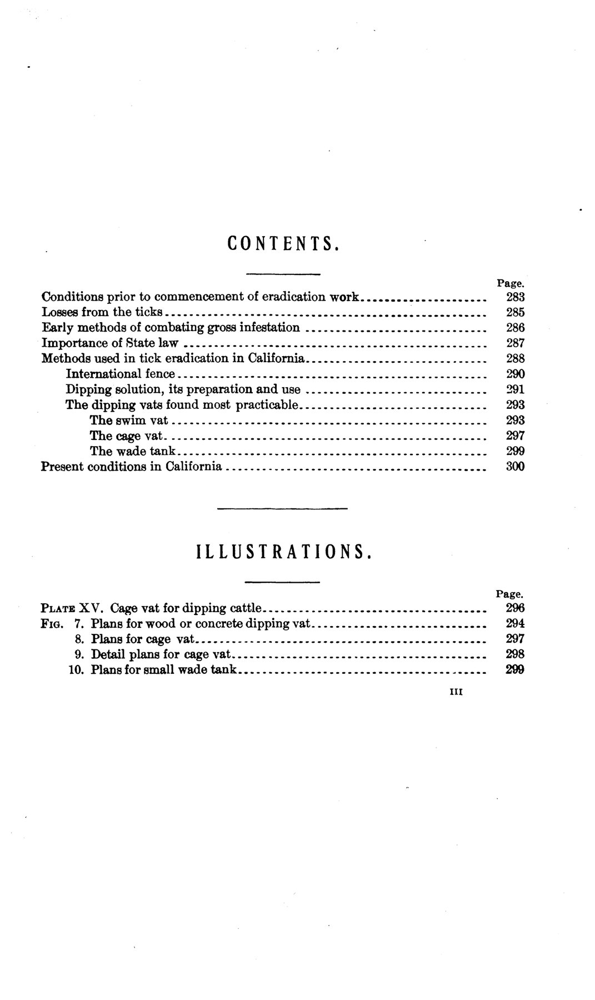
evidence/images/usda_bai_circ174_1911_contents_and_list_of_plates.png
8.2 The finding
EM-011 · ESTABLISHED FACT · Confidence: High
Orange County was classified by the USDA as heavily infested with cattle ticks, and lay south of the California quarantine line.
Supporting evidence. Circular 174, page 285, lists the counties found "heavily infested" — San Luis Obispo, Santa Barbara, San Diego, Orange, Fresno, and Ventura — with Tulare, Kern, Kings, Los Angeles, Riverside, San Bernardino, and Madera "infested to a lesser degree." The same page states that "The loss to the cattle industry south of the quarantine line in California from ticks has been enormous."
The page records that these counties "comprised 69,755 square miles of territory, and contained 660,027 head of cattle, of which 153,476 were on tick-infested ranges."
This page was read directly and verified, not taken from a summary.
Counter-evidence and limits. The classification is at county level. It does not place a dipping vat on any specific parcel, on Rancho Mission Viejo, or within the Ladera Ranch footprint. Orange County covered roughly 800 square miles. This establishes the programme's geographic scope — nothing more.
Citation: MacKellar & Hart (1911), USDA BAI Circular No. 174, p. 285 [S-USDA-C174].
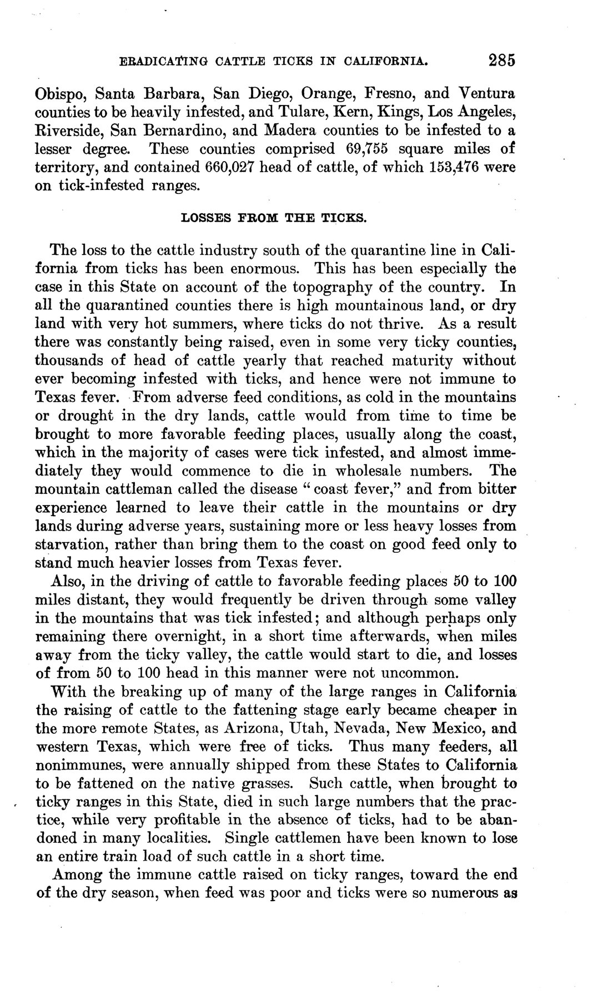
evidence/images/usda_bai_circ174_1911_p285_ORANGE_and_SAN_DIEGO_counties_heavily_tick_infested.png
Circular 174 also explains why California's losses were severe, in terms that describe this landscape specifically: the quarantined counties contained "high mountainous land, or dry land with very hot summers, where ticks do not thrive," so cattle raised there reached maturity without becoming infested and therefore without acquiring immunity. When drought or cold drove them "to more favorable feeding places, usually along the coast, which in the majority of cases were tick infested," they "would commence to die in wholesale numbers." Ranchers called it coast fever.
That is a description of exactly the seasonal movement pattern a coastal Orange County ranch would have practised.
8.3 What this changes, and what it does not
Six propositions must hold for the arsenical-dipping hypothesis to be true. Before this chapter, the first was unverified and the rest unevidenced.
| # | Proposition | Status before | Status now |
|---|---|---|---|
| 1 | The programme applied to Orange County | Unverified | Established |
| 2 | This ranch dipped cattle, using its own facility | Unevidenced | Unevidenced |
| 3 | The facility stood within or near the footprint | Unevidenced | Unevidenced |
| 4 | Arsenic residue persists at that location | Unevidenced | Unevidenced |
| 5 | Development disturbed or built over it | Unevidenced | Unevidenced |
| 6 | A pathway to human exposure exists | Unevidenced | Unevidenced |
The first link now holds. The remaining five do not.
This is a real advance and it should not be overstated. Orange County being heavily tick-infested makes it more likely that cattle operations in the county dipped — the programme existed precisely to compel it. It does not demonstrate that this particular ranch did, where any facility stood, or that anything persists.
EM-012 remains OPEN. Whether arsenical cattle dipping occurred within the Ladera Ranch footprint is still unresolved. What has changed is that the question is now worth resolving on a firmer basis than before: the programme demonstrably reached this county.
8.4 Dipping in Orange County, at named locations
Circular 174 establishes that Orange County was in the affected area. A contemporaneous newspaper report establishes that dipping actually took place there, at named locations, under public supervision.
EM-019 · ESTABLISHED FACT · Confidence: High
The Los Angeles Herald of 27 May 1908, page 10, datelined Santa Ana, reports that Dr. Coleman, deputy state quarantine officer, had consulted with Orange County cattle raisers, and that within the previous ten days:
several hundred head of stock have been treated by dipping at the ranch of J. C. Joplin in Trabuco canyon, six or seven hundred head are now being dipped at Capistrano and dipping is in progress at Yorba and at the Bixby ranch in Santa Ana canyon.
The article was read and verified directly. OCR in the source renders several names imperfectly — "Joplln", "Trabuca", "Capistranlo", "Blxby" — and the corrected readings above are this project's, not the newspaper's text.
Corroboration. The Herald of 25 July 1908 reports a claim against Orange County by E. J. Levengood after six cows died following a dip, and states that "The dipping was done by order of the county veterinarian, Dr. W. S. McFarlane, and he it was who supervised the mixing of the preparation used." The Pacific Rural Press of 15 August 1908 carries the same suit.
Dipping in Orange County was therefore county-ordered, officially supervised, conducted at scale, and it killed cattle.
Counter-evidence and limits. These name ranches and districts, not vat coordinates. None of the four locations is Rancho Mission Viejo.
Correction C-009 — the chemistry is now named. This section previously stated that no dip chemistry was named for any Orange County location. That is superseded. See §8.4a.
8.4a The chemistry, and an Orange County swim vat
EM-035 / EM-036 · ESTABLISHED FACT · Confidence: High
The California State Veterinarian's Fifth Biennial Report (1908), read directly:
The arsenical dip was first used in California during 1907, and such good results were obtained that it has been our most effective remedy ever since.
The formula, given on the same page:
| Ingredient | Quantity |
|---|---|
| Arsenic | 8 pounds |
| Carbonate of soda | 24 pounds |
| Soap | 24 pounds |
| Pine tar | 1 gallon |
| Water | 500 gallons |
"This solution, being poisonous in nature, is carefully used in order that cattle dipped in same are not poisoned themselves."
The report then records:
One notable case occurred in Orange County, where a number of cattle were dipped in this solution preparatory to moving them on to a tick free pasture. Subsequently several head of these cattle died from what was claimed to be arsenical poisoning, due to the cattle drinking the dip while swimming through the vat.
Two things follow. The chemistry used in Orange County was arsenical. And "swimming through the vat" denotes a swim vat — the large permanent design, not a cage vat or wade tank.
Counter-evidence. The report gives no location. No ranch is named. It is not attributed to Rancho Mission Viejo and not placed within this footprint.
And the State Veterinarian disputed the poisoning: "Upon autopsy not the slightest indication of arsenical poisoning could be found." He attributed the deaths to exhaustion, the cattle having been "driven a distance of some 30 to 35 miles" on the day they were dipped — which is itself notable, because it shows cattle were driven very long distances to reach dipping facilities.
This partly reopens correction C-004. That correction downgraded the negative imagery finding because USDA documented cheap cage vats and wade tanks that need not be visible. That remains true generally — but at least one Orange County facility in this period was a swim vat, which would be visible at 1.15 ft/px. The imagery argument regains some force for that class of installation, wherever it stood.
Where these locations actually are
This is the point at which an investigation of this kind is most likely to overreach, so the distances are measured rather than described.
| 1908 dipping location | Miles from Ladera Ranch centroid | Zone |
|---|---|---|
| Capistrano | 3.4 | Inside Zone B |
| Trabuco Canyon (Joplin ranch) | 8.4 | Outside Zone B |
| Santa Ana Canyon (Bixby ranch) | 22.8 | Far outside |
| Yorba | 25.6 | Far outside |
No named 1908 dipping location falls inside Zone A. One — Capistrano — falls inside the five-mile Zone B ring at 3.4 miles. Trabuco Canyon, despite sharing a name with the drainage that crosses this study area, is a distinct place 8.4 miles away and outside Zone B entirely.
The temptation to read "dipping at Capistrano" and "Trabuco canyon" as bracketing Ladera Ranch should be resisted. "Capistrano" in 1908 usage is a district statement, and the Joplin ranch is in the upper Trabuco drainage in the Santa Ana Mountains foothills, not on the coastal plain where this community sits.
What it does and does not move
Proposition 2 of the hypothesis chain — this ranch dipped cattle — is not established. What is now established is the weaker but still substantial proposition that cattle operations in this county dipped, under county order, within a few miles of this land.
That materially raises the prior. It does not identify a facility, a chemistry, or a location within the study area.
8.4b The residual quarantine area, mapped
The 7 March 1912 proclamation did not clear the whole county. The State Veterinarian's Sixth Biennial Report records that it "removed from quarantine all of Orange County except a small area in the extreme southwestern part of said county."
The same report carries a map of infested sections as of 30 June 1912. It has been examined.
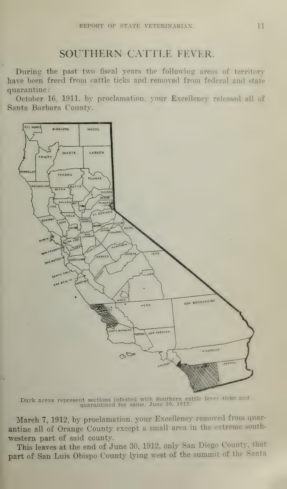
evidence/documents/CAStateVet_1912_p11_TickInfestationMap_June30_1912.png
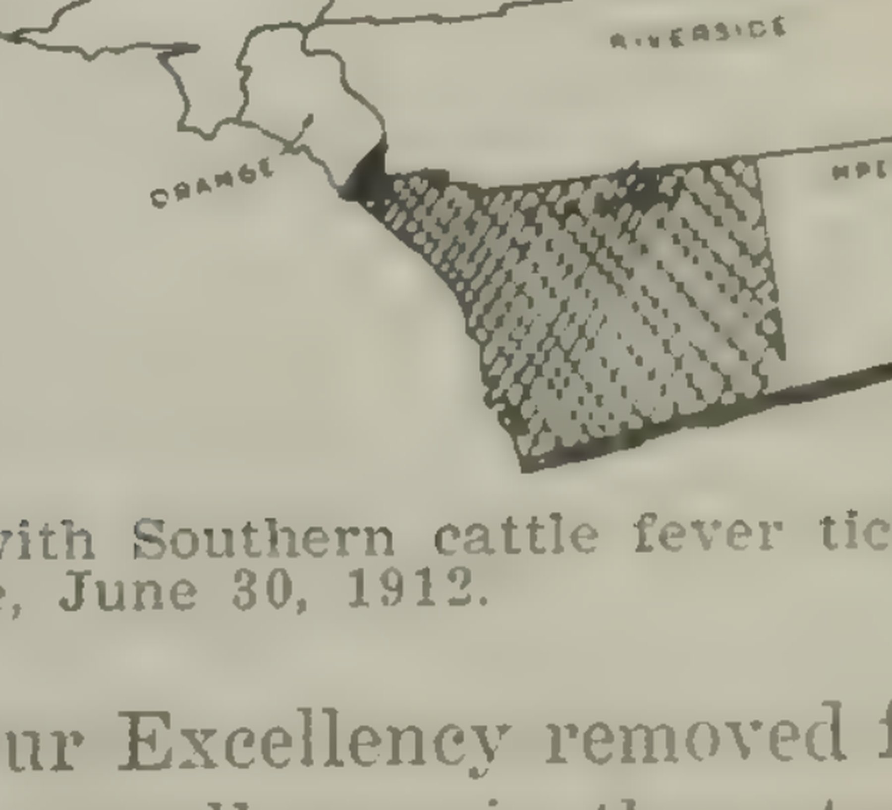
evidence/documents/zoom_1912map_OrangeSanDiego.png
EM-038 · ESTABLISHED FACT · Confidence: High (that a residual area existed)
San Diego County is hatched almost in its entirety. Orange County is essentially clear except a small solid wedge at its extreme southern coastal corner, where it adjoins San Diego County — the San Clemente / San Onofre area. The "ORANGE" label sits well north-west of it.
This is a reading of a small-scale map, not a boundary determination.
The proclamation text does not delimit the area. County outlines on a state-scale map are generalised, and the drafting cannot resolve a four-square-mile community.
On the reading above, Ladera Ranch — roughly 8 to 10 miles north of that corner — falls outside the residual quarantine area. The map is consistent with that and cannot prove it. The underlying 7 March 1912 proclamation has not been obtained and would settle it.
One detail cuts the other way and belongs here. The adjoining San Diego County land, hatched almost entirely on this map, was Rancho Santa Margarita y Las Flores — under the same O'Neill and Flood ownership as Rancho Mission Viejo, and not partitioned from it until the 1940s. Cattle and management moved between the two holdings. That does not place infestation or a vat on this footprint, but it means the quarantine line and the ownership line were not the same line.
8.5 The quarantine window, narrowed
EM-020 · ESTABLISHED FACT · Confidence: Medium The Orange County cattle tick quarantine ran from approximately February 1908 to March 1912.
Supporting: The San Francisco Call of 8 March 1912 reports that "A proclamation lifting the quarantine against the Texas fever [tick] in Orange county… was issued today by State Veterinarian Keane and signed by Governor Johnson." The Herald of 7 February 1909 cites a Gillett proclamation of 1 February 1908; a further proclamation is referenced on 31 March 1910. Tick presence in the county is reported as early as November 1898.
Counter-evidence: This refines and narrows the "1907–1917" window used throughout this project's earlier work — a figure that was a general California or national approximation rather than an Orange County finding. These are newspaper reports of proclamations, graded B2; the proclamations themselves have not been read.
This cuts against the investigation's own imagery argument. A quarantine ending in March 1912 means the gap to the earliest aerial photography (1929) is seventeen years, not twelve. Any facility decommissioned at the end of the programme had five more years to disappear than this publication previously assumed. Combined with correction C-004, the evidential weight of the negative imagery finding is reduced further.
8.6 Corroboration, and a caution about it
A secondary source — Pulling, Journal of San Diego History 11:1 (January 1965) — reportedly states that by 1910 only San Diego, Orange, Santa Barbara, and part of San Luis Obispo counties remained under quarantine, with reinfestation attributed to cattle from Lower California.
This corroboration is recorded as reported and has NOT been independently verified against the article itself. It is graded B1 pending direct reading. It is consistent with Circular 174 and would, if confirmed, indicate that Orange County was among the last California counties under federal quarantine — which would extend the relevant activity window later than 1910. That inference is not relied upon anywhere in this publication until the source is read.
8.7 The state instrument, not yet obtained
The California Governor's proclamation of 15 April 1907 establishing the cattle fever quarantine has been located in the California State Library's executive-order collection but could not be retrieved — the server returns HTTP 403 to automated access.
This document would likely date the programme's California commencement precisely and define its boundaries in the state's own terms. It is recorded as dead end DE-010 and is retrievable by a person with an ordinary browser.
8.8 Why this section was previously missing
This chapter did not exist in the first draft of this publication, and its absence was itself recorded as a limitation: two evidence-matrix claims were flagged PENDING VERIFICATION, and the publication stated plainly that the hypothesis rested on an unconfirmed foundation.
That flag is now cleared for EM-011, on the strength of a primary federal document read directly rather than summarised.
The methodological point is worth stating, because it recurs: the decisive evidence was in a freely available, full-text-searchable 1911 government circular the whole time. It cost nothing to obtain. The investigation had spent considerable effort on imagery analysis — which produced a negative result of limited weight — before consulting the document that established whether the activity being searched for was even plausible in this county.
Archival work should have come first. It is recorded here so the sequencing error is visible.
8.9 The operation, photographed
Photographs of the Santa Margarita ranch cattle operation survive from the period immediately before the eradication programme.
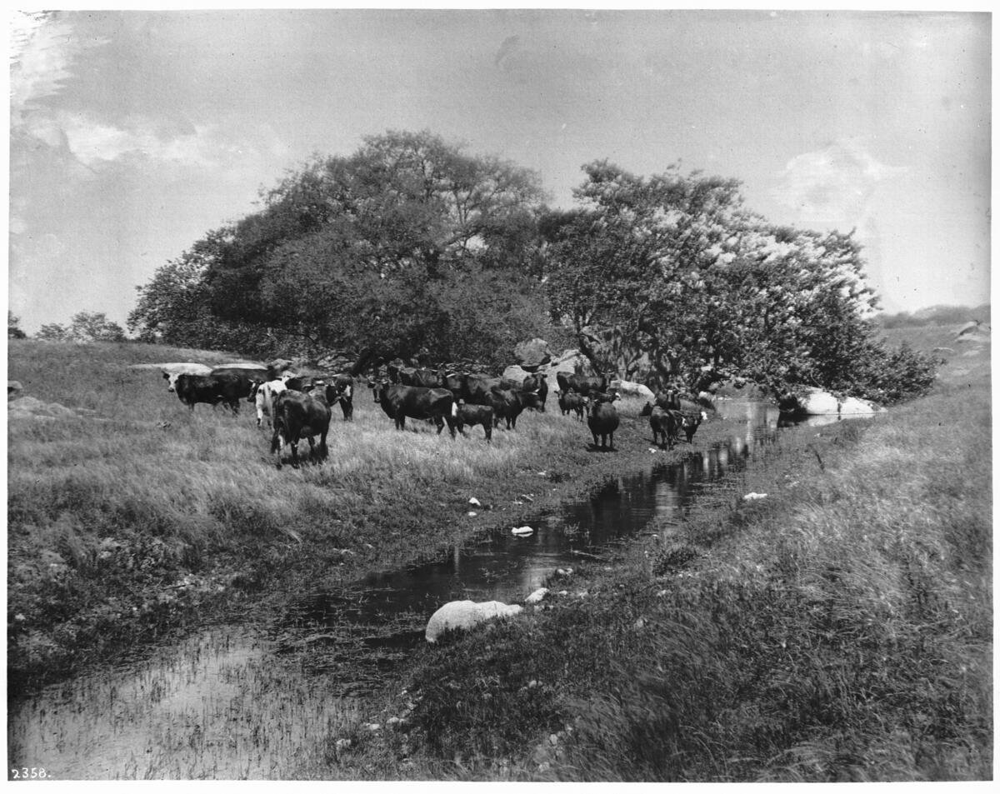
evidence/images/usc_chs2358_UC139843_cattle_grazing_near_small_stream_santa_margarita_ranch_sd_county_1900.jpg
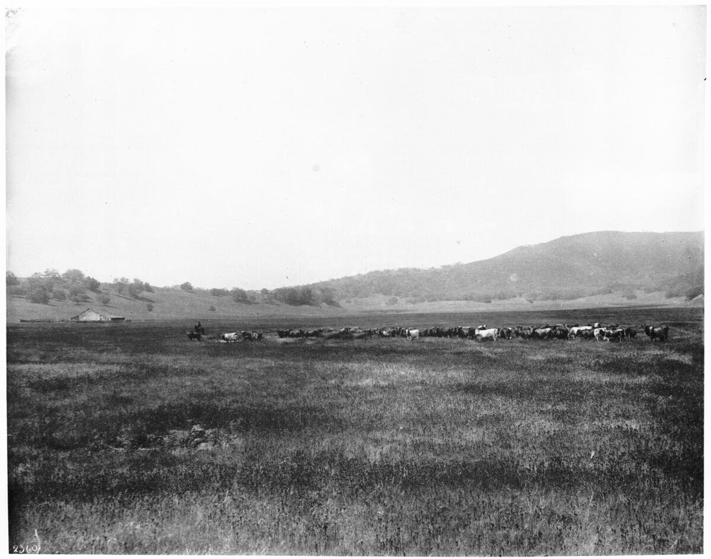
evidence/images/usc_chs2360_UC139844_herd_of_cattle_grazing_santa_margarita_ranch_sd_county_1900.jpg
These depict San Diego County, not Ladera Ranch. The Santa Margarita ranch in these images is the Rancho Santa Margarita y Las Flores property — now largely Camp Pendleton. It shared ownership with Rancho Mission Viejo under the O'Neill and Flood interests, and the holdings were partitioned in the 1940s, but they are different land.
They are included to show the scale and character of the cattle operation during the years the tick programme ran. They are not evidence about the study area, and must not be reproduced as depictions of it.
What Arsenical Cattle Dipping Was
Everything in this chapter is HISTORICAL CONTEXT. It describes a practice that is well-documented in the agricultural and veterinary literature of the early twentieth century.
None of it is evidence that the practice occurred on this land. That question is addressed separately, and the answer there is that no direct evidence has been located. This chapter exists because a reader cannot evaluate the hypothesis without understanding what is being hypothesised — and because understanding the practice explains why, if it did occur here, the resulting contamination would have a very particular and easily-missed spatial signature.
Scope of this chapter. The material below describes cattle dipping as a general practice. It is not site-specific and must not be read as site-specific. Where a statement about this land appears, it is explicitly flagged.
9.1 The problem: Texas fever
Texas fever — also called cattle fever, splenetic fever, or Southern cattle fever — is a disease of cattle caused by a protozoan parasite that destroys red blood cells. It was economically devastating to the American cattle industry through the nineteenth century, and it had a mystifying epidemiology: apparently healthy Southern cattle, moved north, would leave a trail of dead Northern cattle behind them without themselves falling ill.
The mechanism was established by the U.S. Bureau of Animal Industry in the late 1880s and 1890s. It was one of the first demonstrations that an arthropod could transmit a disease agent, and it preceded the comparable work on mosquitoes and yellow fever. The vector is the cattle fever tick. Southern cattle raised in tick country were survivors of childhood infection and carried the parasite without symptoms; the ticks they carried transmitted it to naive Northern animals, which died.
The practical consequence: the disease could not be eliminated by treating cattle. It had to be eliminated by eliminating the tick.
9.2 The solution: systematic dipping
Because the tick spends part of its life cycle on the animal and part on the ground, breaking the cycle required treating every animal in an infested area, repeatedly, on a schedule tight enough that no tick could complete its development between treatments — typically every two weeks over an extended season.
That meant driving entire regional herds through a chemical bath at fixed intervals, for years. The scale of the undertaking is difficult to overstate: it was one of the largest coordinated animal-health campaigns ever attempted in the United States, run jointly by the USDA Bureau of Animal Industry and state authorities, backed by quarantine powers that restricted the interstate movement of cattle from areas not yet cleared.
Quarantine is the key administrative fact, and it has an important implication for this investigation: the programme generated paperwork. Quarantine lines were published. Inspections were recorded. In many states, dipping was legally compulsory and non-compliance was an offence. A programme of that character leaves a documentary trail, which is why the archival record — rather than the photographic one — is where this question is most likely to be resolved.
9.3 The chemistry
The standard dipping solution through the main eradication period was arsenical — most commonly sodium arsenite, prepared from white arsenic (arsenic trioxide) with sodium carbonate, often with pine tar or similar additives.
Three properties of this chemistry matter for a contamination question:
Arsenic does not degrade. This is the single most important fact in the entire investigation. Organic pesticides — the organochlorines, the organophosphates — break down over time through microbial action, hydrolysis, and photolysis. Their concentrations decline on a measurable half-life. Arsenic is an element. It can change oxidation state and chemical form, it can bind more or less tightly to soil minerals, it can leach or be taken up by plants — but the atoms do not disappear. Arsenic deposited in soil in 1912 is, in mass terms, still there.
The solution was acutely toxic. These were concentrations designed to kill arthropods on contact, handled in bulk in open vats. Contemporary USDA materials on vat operation carried explicit poison warnings, and accidental livestock and human poisonings from dip solution are recorded in the period literature.
The vats had to be maintained, and eventually emptied. A vat in service was periodically tested, recharged with concentrate to maintain strength, and — because organic matter, mud, and hair accumulated — occasionally dumped and refilled. Where the dumped contents went was a local operational decision, not a regulated one.
Chemistry claims in this section are general and well-established, but the specific formulations, concentrations, and USDA guidance documents relevant to California are under active primary-source verification in this investigation. Where exact figures appear in later versions of this publication, they will carry direct citations to the USDA or state documents in which they appear. They are deliberately omitted here rather than approximated.
9.4 Vat design, and why design determines contamination footprint
Several vat types were used. The distinctions matter because they determine how much solution was involved and where it ended up.
Swim vats were the standard for large operations: a long, narrow, deep concrete trench — deep enough that cattle had to swim — with a steep entrance ramp, a graded exit ramp, and holding pens at each end. Cattle entered at one end, swam through, and climbed out.
Cage vats and wade vats were variants for smaller operations or for animals unsuited to swimming, using a cage lowered into solution or a shallower trough.
The essential feature of the swim vat design, for contamination purposes, is the drip pen. Animals leaving the vat were held on a sloped concrete apron so the solution running off them would drain back into the vat rather than being lost. Recovery was never complete. Solution splashed over the sides during the swim, was carried off on hides and hooves, and was tracked into the surrounding ground by hundreds of animals moving through a confined space.
The result is a concentrated, highly localised contamination signature:
- The vat structure itself, and the soil immediately beneath and around it
- The drip pen and its drainage
- The approach and exit lanes, where solution was tracked
- Wherever the vat was periodically dumped
- The holding pens, to a lesser degree
This is a footprint measured in tens of metres, not hectares.
9.5 Why this footprint is so easy to miss
This is the central methodological point of the chapter, and it is why the question is difficult rather than merely unanswered.
Broad-area agricultural sampling will not find a dip vat. Standard practice for investigating former agricultural land is to sample on a grid sized to the field — because the contamination pattern being sought is a field-scale one. Orchard lead arsenate and row-crop organochlorines were applied across whole fields, so a grid at field scale samples the thing being looked for.
A dipping vat is the opposite spatial problem. It is a point source perhaps twenty metres across on a property of thousands of acres. A sampling grid designed to characterise field-scale application can pass directly over it and register nothing. The two investigations look similar on paper — "we sampled for arsenic on former agricultural land" — and are not the same investigation at all.
This creates a specific and testable audit question, which is pursued in the environmental review chapter: not whether soil was sampled, but whether sampling was ever targeted at locations where a point-source facility would have stood.
Three further factors compound the difficulty:
The structures were removed. At the end of the programme, vats were commonly broken up and buried in place, or backfilled. What remains is a subsurface anomaly and contaminated soil — not a visible structure. This is precisely why the aerial-photography search, however good the imagery, has limited power against a facility decommissioned before the first photograph.
They were rarely mapped. USGS topographic symbology had no dip-vat symbol. A vat would at best appear as a generic structure dot, and usually not at all.
Institutional memory is gone. The people who could point to the location have died. This is the practical significance of the oral-history line of inquiry, and the reason it is time-limited in a way archival research is not.
9.6 What this chapter does not establish
To restate the boundary explicitly, because this is the chapter most likely to be quoted out of context:
No direct evidence has yet been located establishing that an arsenical dipping vat operated on Rancho Mission Viejo or within present-day Ladera Ranch.
Everything above describes a documented historical practice. Whether it happened here is unresolved. Specifically unresolved:
- Whether California's tick-eradication programme extended to Orange County at all, or whether the county was outside the quarantine area — under active primary-source verification
- Whether this ranch operated its own vat, used a shared or public facility, or was never subject to the requirement
- If a vat existed, where it stood
- Whether any residue persists
The aerial-photography search found no vat and no corral complex on imagery good enough to show one. That is weak evidence against a surviving surface facility and no evidence at all about a demolished or buried one.
The most consequential open item is the first. If Orange County was never within the tick quarantine area, the entire hypothesis collapses — and that is a question the documentary record should be able to answer definitively in one direction or the other. It is being pursued as the highest-priority item in this investigation.
USDA Engineering, Poison Warnings, and Dip Designs
The federal government published detailed engineering plans for cattle dipping vats, together with explicit warnings about the poison they held. Those documents have been obtained and are reproduced here.
They matter for two reasons. They establish what a dipping installation physically was — which determines what a contamination footprint would look like. And they contain the detail that forced this investigation to downgrade its own central negative finding.
10.1 The documents
All are US Government works and therefore public domain.
| Document | Author | Year | Series |
|---|---|---|---|
| Eradicating Cattle Ticks in California | MacKellar & Hart | 1911 | BAI Circular No. 174 |
| Directions for constructing a vat and dipping cattle to destroy ticks | Graybill, H. W. | 1911 | BAI Circular No. 183 |
| Directions for constructing vats and dipping cattle to destroy ticks | Graybill, H. W. | 1912 | BAI Circular No. 207 |
| Cattle-fever ticks and methods of eradication | Ellenberger, W. P. | 1919 | Farmers' Bulletin No. 1057 |
| Illustrated lecture on cattle-tick eradication | USDA | 1916 | — |
10.2 The poison warning
EM-016 · HISTORICAL CONTEXT · Confidence: High
USDA required a poison notice at every vat. Circular 174 (p. 293) reproduces its text:
WARNING! The fluid in this vat is POISONOUS to man and all animals.
Circulars 183 and 207 each carry a section headed "Precautions in the use of arsenic," addressing absorption through cuts in the skin and by vapour, and warning of both livestock and human fatality.
Counter-evidence: This establishes that the practice was federally recognised as hazardous and was documented as such. It says nothing about whether any vat operated on this land, nor about the fate of any residue.
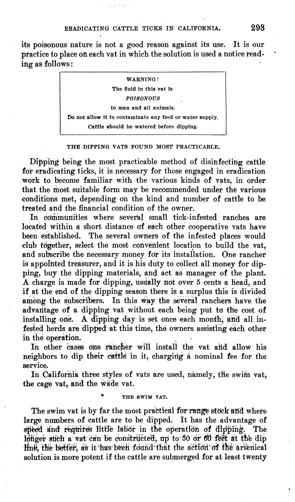
evidence/images/usda_bai_circ174_1911_p293_VAT_POISON_WARNING_sign_text.png
The significance is not that arsenic is dangerous — that was never in question. It is that the federal government anticipated the hazard, standardised a warning, and published precautions. This was a recognised industrial poison handled in bulk in open pits, under official instruction, across the counties named in Circular 174.
10.3 Vat designs
Three designs appear in the California circular, and the differences between them are the substance of this chapter.
The swim vat
A long, deep concrete trench — deep enough that cattle swim — with entrance and exit ramps and holding pens. Circular 174's figure 7 specifies a vat holding approximately 2,088 gallons at five feet of depth.
This is a substantial permanent structure. It would leave a large, durable, and photographically obvious footprint.
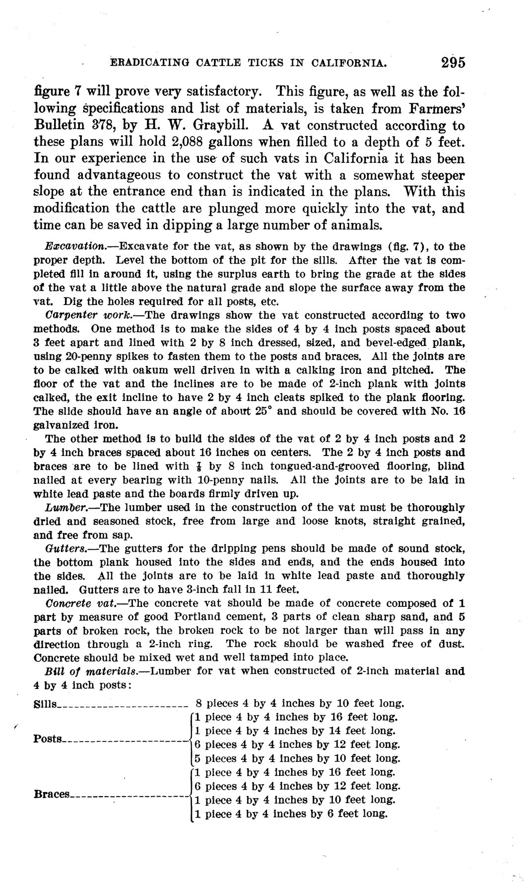
evidence/images/usda_bai_circ174_1911_p295_fig7_swim_vat_plans.png
The cage vat
An animal is driven through a short chute into a cage, which its own weight lowers into the fluid; after twenty to thirty seconds the cage is raised by a rope attached to a saddle horn or a horse in harness. Circular 174 states such a vat can dip 30 to 50 animals per hour.
Materials cost $55 to $65.
Two details from page 299 are decisive for this investigation:
This vat is installed near the corrals and requires only a short chute leading from the corral to the cage.
and
Draining pens with such vats are not essential and are rarely used, as the animal drains while the cage is being raised.
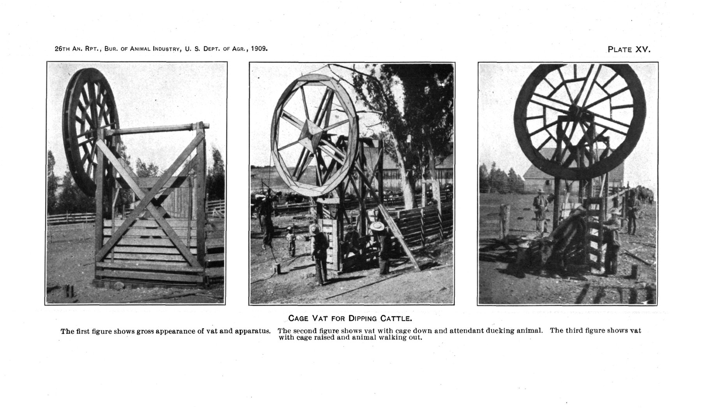
evidence/images/usda_bai_circ174_1911_PLATE_XV_cage_vat_for_dipping_cattle.png
The wade tank
The wade tank is recommended only in the disinfection of very small herds. It can be constructed with an outlay of less than $10 for materials, thus being cheaper than a good spray pump.
Figure 10 shows a vertical section roughly fifteen feet long and four feet deep, with the dip solution thirty-six inches deep. It could be built "of either lumber or cement."
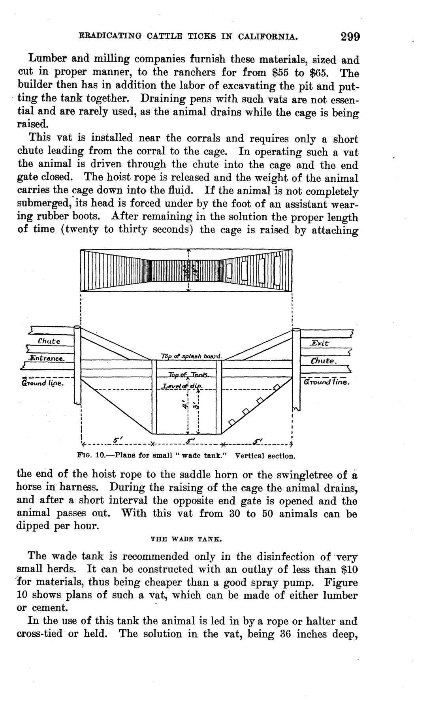
evidence/images/usda_bai_circ174_1911_p299_fig10_small_wade_tank_plans.png
10.4 The correction this forced
Correction C-004 — "a corral complex would be unmistakable" was overconfident.
After obtaining 1.15 ft/px aerial photography, this investigation stated that the resolution objection to finding a dipping vat had "disappeared entirely," because a vat would be several pixels across and an accompanying corral complex "would span hundreds of pixels."
That argument assumed the swim-vat model: a large concrete trench with a sloped drip pen and substantial holding pens. Circular 174 shows this was not the only California pattern.
A cage vat cost sixty dollars, was installed beside an existing corral, needed only a short chute, and had no drip pen. A wade tank cost under ten dollars in lumber and was fifteen feet long. Neither necessarily produced any distinctive new surface structure at all — they were installed against ranch infrastructure that was itself unremarkable.
Effect: claim EM-003 is downgraded from Medium to Low confidence. The imagery search would likely have detected a large swim-vat installation and did not. It provides weak to no evidence against a small cage vat or wade tank.
This is the second time this investigation has built an argument on an untested assumption about the physical evidence. C-003 assumed the imagery was inadequate; C-004 assumed the target would be large. Both assumptions made the analysis simpler, and both were wrong.
10.5 What a small vat means for contamination
Counter-intuitively, a small vat is not a smaller contamination problem. It may be a worse one to find.
The chemistry is unchanged. Arsenic is an element. A wade tank charged with arsenical solution deposits arsenic that does not degrade, exactly as a swim vat does.
The footprint is smaller and therefore harder to hit. A fifteen-foot tank contaminates a patch perhaps ten metres across. A sampling grid designed for field-scale agricultural residue will pass directly over it and register nothing.
Disposal was less controlled. With no drip pen, solution ran off animals directly onto the ground beside the vat rather than draining back. Where a tank was periodically dumped was a local decision.
Nothing survives to find. A wooden tank in an excavated pit leaves no concrete. It rots or is removed; the pit is backfilled. Where a swim vat leaves a buried concrete structure that ground-penetrating radar can detect, a wade tank may leave only disturbed soil and a chemical signature.
This substantially raises the value of soil chemistry relative to geophysics at candidate locations. Geophysics detects buried concrete — which a small wooden installation would never have produced. The arsenic itself is the only durable trace such a facility would leave.
It also sharpens the sampling design: arsenic and lead together, at high spatial resolution, targeted at the immediate vicinity of historical corrals and water — not gridded at field scale.
10.5 What these documents do not establish
None of this places a vat on this land.
These are national and state-level engineering and instructional documents. They establish what was built, what it cost, what it held, and that Orange County was in the affected area. They do not identify a single facility location anywhere in Orange County, and they name no ranch.
The gap between "the programme reached this county" and "a vat stood here" remains entirely unbridged by documentary evidence.
Historical Ranch Operations
What is actually known about how this land was worked as a cattle ranch — which is considerably less than the surrounding chapters might suggest.
11.1 What is established
The land was a working cattle operation until development. USGS quadrangles from 1948 to 1968 label it MISSION VIEJO OR LA PAZ. Aerial photography from 1929 to 1947 shows open rangeland with stock trails, grazing patterns, unimproved roads, and field boundaries. DTSC's own site history for the one assessed parcel inside the community reads: "Since before 1942 and up to 1999… part of a larger cattle ranch, used for dry farming and grazing."
That is the substance of what the record establishes about ranch operations here. Everything below is either infrastructure inferred from maps, or general practice.
11.2 Water infrastructure — the mapped skeleton
The 1968 USGS field survey is the single richest source on ranch infrastructure, because a surveyor walked the ground and drew what was there.
| Feature | Type | Status |
|---|---|---|
| 41 surface-water bodies ≥350 m² | Ponds and impoundments | Digitised, published as a GIS layer |
| Chain of ~8 impoundments | Trabuco corridor | Drawn on the sheet |
| Terminal Reservoir | Named reservoir | Labelled |
| Water Tank | Named tank | Labelled |
| "WT 521" | Water tank with elevation | Labelled |
| Gaging Station | Stream gage | Labelled |
| Landing Strip | Airstrip | Labelled |
Sixteen of the 41 water bodies fall inside the community footprint. Ch. 15 covers the analysis; the operational point is that a ranch this size required distributed water, and the 1968 sheet shows where it was.
11.3 The one structure
33.55505, −117.65492 — a single building on Trabuco Creek, at a trail convergence on the valley floor near elevation 307, adjacent to water.
The setting is what a ranch working area looks like: flat ground, water, and several unimproved roads meeting. That is where cattle were handled, and therefore where a dipping vat would have stood if one existed here.
The map does not label it. A single building is equally consistent with a line camp, a barn, or a ranch house. It is recorded as a ranch-activity node and is not identified as a dip site. Ground-penetrating radar would resolve the structural question directly.
11.4 What the 1908 record shows about how dipping was organised
The four Orange County locations named in May 1908 tell us something about operational arrangement, even though none is this ranch:
- Dipping was county-ordered and officially supervised — by the county veterinarian, with a deputy state quarantine officer consulting.
- It was conducted at ranch scale — several hundred head at the Joplin ranch, six to seven hundred at Capistrano.
- It was conducted at individual named ranches, not solely at a central public facility.
- It went wrong sometimes — six cattle died after one dip, and a claim was filed.
That dipping was organised ranch-by-ranch in Orange County makes it more plausible that a large operation would have had its own arrangement. It does not evidence one. Rancho Mission Viejo is named in none of the located articles.
11.5 What is not known — most of it
| Question | Status |
|---|---|
| Ranch headquarters location and history | Not located |
| Named cow camps or line camps | Not located |
| Named corrals, including any "Oaks Corrals" | Not located |
| Loading pens or rail-siding stock facilities | Not located |
| Herd size in any period | Not located |
| Seasonal movement patterns on this ranch | Not located |
| Names of foremen, vaqueros, or ranch veterinarians | Not located |
| Whether this ranch dipped, and where | OPEN — the central question |
No named ranch working facility has been located with coordinates by this investigation, and none appears in any imagery examined. Whether any stood within the study footprint — as opposed to elsewhere on a holding that ran to tens of thousands of acres — is unresolved.
11.6 Where the answers most likely are
The US Land Commission case files, already on disk. 250 SD (Mission Vieja/La Paz, 96pp), 216 SD (Trabuco, 84pp), 130 SD (Niguel, 102pp). These contain sworn witness testimony, which in land claim proceedings routinely describes improvements — buildings, corrals, springs, fences — because occupation and improvement were what the claim turned on.
The testimony is handwritten cursive, partly in Spanish, and the OCR layer is unusable. A keyword scan returned zero hits for corral, spring and adobe, which is OCR failure, not absence. Reading them needs palaeography.
GLO survey field notes, for T7S R8W sections 12, 13, 24 and 25 along the western edge — see correction C-007. Surveyors recorded springs, corrals, houses and improvements in their running notes that never reached the published plat.
Rancho Mission Viejo's own operating records. Private, and the one place a facility would necessarily have been documented.
Living memory — see Ch. 13, and note that it is the only lead here with an expiry date.
Historical Photographs and Image Analysis
This chapter describes what photographic evidence exists, how it was analysed, and — at some length — the analyses that failed. The failures are included because two of them nearly produced published findings that were wrong.
12.1 The photographic record
| Epoch | Source | Resolution | What it shows |
|---|---|---|---|
| 1886 | USC / California Historical Society, CHS-2085 | — | Ranch house, vineyard and winery — San Diego County |
| 1900 | USC / CHS, CHS-2358/2359/2360 | — | Cattle at a stream, a mounted vaquero, a grazing herd — San Diego County |
| 1911 | USDA BAI Circular 174, Plate XV | — | A cage vat in operation: gross view, cage lowered with an attendant ducking the animal, cage raised |
| 1929 | OC Survey, frame OID 346 | 2.6 ft/px | Open rangeland, riparian corridor, dirt roads |
| 1931 | OC Survey, OID 351 | 2.5 ft/px | Partial coverage |
| 1937–38 | OC Survey, OID 310 | 1.15 ft/px | Individual oaks, fence lines, wheel ruts, the cartographer's "Trabuco Creek" label |
| 1938 | OC Survey, OID 340 | 3.2 ft/px | Full footprint |
| 1946–47 | OC Survey, OID 286 / 293 | 2.2–4.3 ft/px | Still rangeland; NW coverage gap |
| 1974 | USGS orthophoto quad | — | Open rangeland, Mission Viejo building out to the west |
| 2022 | OC Survey | 1 ft/px | Built out |
The 1886 and 1900 photographs depict San Diego County — Rancho Santa Margarita y Las Flores, now largely Camp Pendleton. Shared ownership with Rancho Mission Viejo, partitioned in the 1940s, but different land. They are published to show the character and scale of the cattle operation in the period the tick programme ran, and are captioned so they cannot be mistaken for this study area.
No photograph of Rancho Mission Viejo ranch operations has been located. This is a genuine gap, and the most likely place to close it is a family album rather than an archive.
12.2 How the aerials were analysed
Common extent. Every frame was rendered to one bounding box — −117.680 to −117.616 longitude, 33.520 to 33.575 latitude — so any two epochs compare pixel for pixel without further transformation.
Georeferencing verified, not assumed. Rectification is Orange County's own; the export service echoes the extent it rendered, matching the request to ±25 m. That is a claim about the service, so it was checked independently: the modern 2022 frame rendered through the same pipeline places Zone A on the real subdivisions, with I-5 and Mission Viejo where they belong.
Systematic, not impressionistic. Zone A was divided into a 4 × 3 grid and each tile examined at full resolution for both 1929 and 1937–38 — twenty-four tiles. Each carries its own corner coordinates and a 200-metre scale bar, so any reader can return to the same ground.
Result: no vat, no corral, no pen, no chute complex in any tile.
12.3 Three analyses that failed
Automated structure detection — 4% accurate
A connected-component detector was run over the 1948 topographic sheet for solid-black, compact, building-sized blobs. It returned 25 candidates inside the footprint.
Visual verification showed 24 were artefacts — letters from the "MISSION VIEJO" map label, red section-line dots, and a benchmark "X" mark. One survived.
None of the 24 is plotted anywhere in this publication. Only manual review prevented them from becoming findings.
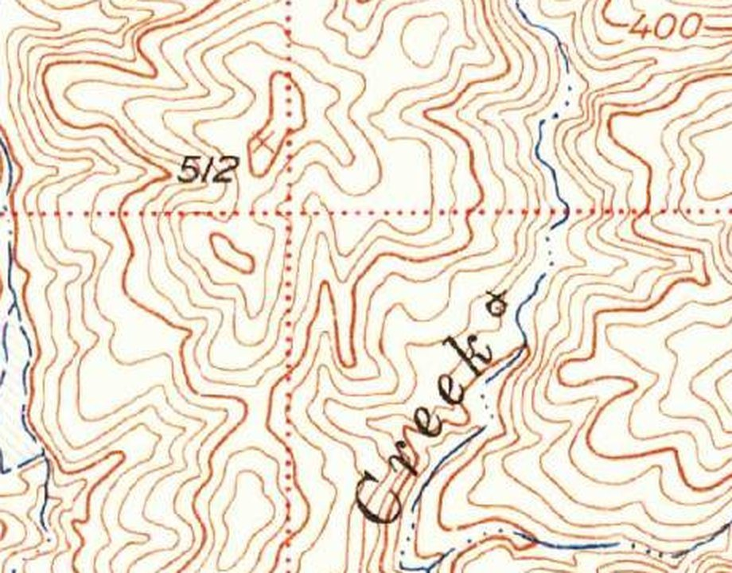
research/historical_imagery/10_zoom_1948_south_false_positives.jpg
Automated water detection — abandoned
Water was sought directly in the 1929 and 1937 frames on a defensible physical premise: on panchromatic film, standing water is both dark and smooth, whereas vegetation is dark but textured and hillslope shadow is dark but elongated.
It returned 111 candidates in the 1929 frame and 225 in 1937, roughly 100 inside Zone A. Review showed it was detecting hillslope shadow.
The cause was specific: the scans have incompatible tone curves. The 1929 frame's 12th-percentile brightness sits at DN ~109–128 (bright, low contrast); the 1937 frame's at DN ~23–43 (dark, high contrast). No single threshold serves both.
Superseded by extracting cyan hydrography ink from the 1968 USGS sheet, where every feature was drawn by a surveyor who visited the ground. Strictly better evidence, obtained by abandoning the clever method for the boring one.
The resolution argument — wrong twice
Covered in full under corrections C-003 and C-004. In summary: the project first argued a vat was undetectable in principle because the earliest imagery was 1948, then — having found 1929 photography at 1.15 ft/px — argued the objection had "disappeared entirely" and a corral complex "would be unmistakable."
USDA's own California circular describes cage vats installed beside existing corrals with no drainage pen, and wade tanks costing under ten dollars and measuring about fifteen feet. Neither need be visible.
Both arguments were about photographs. Neither was checked against what was being photographed.
12.4 What the imagery can and cannot establish
Can establish: that the footprint was open rangeland throughout 1929–1974; that no large permanent installation stood inside Zone A in any frame examined; the location of one structure on Trabuco Creek; the position of drainages, roads, and field boundaries before development.
Cannot establish: the absence of a small cage vat or wade tank; the absence of any facility demolished before 1929 — seventeen years after the quarantine ended, on the corrected timeline; the function of the one structure found; anything at all about what is in the soil.
12.5 The photograph that would change this
A single clear photograph of Rancho Mission Viejo cattle-working operations — showing a vat, or showing a corral complex with no vat — would move this investigation further than any further online searching.
Ranch photography from this period exists. Roundups were photographed; families kept albums; the ranch was used as a filming location. None of it has surfaced in the collections searched.
If you have one, please see the invitation at the front of this report.
Oral Histories and Ranch Personnel
This chapter is nearly empty, and the emptiness is the finding.
13.1 What this investigation has
No oral history has been collected. No interview has been conducted. No first-hand account of ranch operations on this land has been located in any archive searched.
That is the complete state of the record.
13.2 The names the documentary record does give
Four individuals connected to Orange County cattle dipping are named in period sources. None is connected to Rancho Mission Viejo.
| Name | Role | Source |
|---|---|---|
| Dr. Coleman | Deputy State quarantine officer, consulting with Orange County cattle raisers, May 1908 | Los Angeles Herald, 27 May 1908 |
| Dr. W. S. McFarlane | Orange County veterinarian; ordered the dipping and "supervised the mixing of the preparation used" | Los Angeles Herald, 25 Jul 1908 |
| J. C. Joplin | Rancher, Trabuco Canyon — dipping conducted at his ranch | Los Angeles Herald, 27 May 1908 |
| E. J. Levengood | Dairyman; claimed $400 against Orange County after six cows died following a county-ordered dip | Los Angeles Herald, 25 Jul 1908 |
Two further names come from the land records: Agustín Olvera, grantee of Rancho Mission Vieja or La Paz in 1845, and Juan (John) Forster, the later claimant. J. W. Mandeville signed the 1858 survey certificate as US Surveyor General.
None of these people is documented in connection with dipping on the land Ladera Ranch now occupies. They are recorded because named individuals are traceable through deeds, probate, census and newspaper records in a way that "a rancher" is not — and because the Levengood claim in particular is dated and specific enough to locate in county board minutes.
13.3 Why this gap is different from every other one
Every other line of inquiry in this report will still be available in ten years. Archives do not decay on a human timescale. A document in the Bancroft Library, a plat at the BLM, a newspaper on microfilm — all of these will be exactly as retrievable in 2036 as they are now.
This one will not.
The Orange County quarantine ended in March 1912. Anyone who witnessed it as an adult is long dead. But the ranch operated as a working cattle operation for decades afterwards, and people who worked it in the 1940s, 50s and 60s would have known the ground, the corrals, the water, and quite possibly the older men who remembered the dipping years.
Those people are now in their eighties and nineties.
Oral history is the only time-limited lead in this investigation. It should be prioritised accordingly — ahead of archival work that can wait, because it cannot.
13.4 How it should be done, if it is done
Method matters here more than in any other chapter, because the failure mode is not finding nothing — it is manufacturing something.
Ask open questions, not leading ones. "Was there a dipping vat?" invites a helpful answer from someone who can tell the question matters. "Where did you work the cattle, and what was there?" produces testimony.
Do not describe the hypothesis first. Once someone knows what you are hoping to hear, their memory reorganises around it, without any dishonesty on their part.
Record verbatim. Summarised recollection is not evidence.
Grade it as C — unverified testimony — and corroborate before it carries any weight. A single uncorroborated account naming a vat location would be an investigative lead, not a finding.
Ask what they do not remember. "Was there ever anything like that?" answered with a clear no from someone who worked the ground is itself useful, and negative testimony is systematically under-collected.
13.5 What is being asked
If you or a family member worked on Rancho Mission Viejo, or knew people who did, the investigation would value knowing:
- Where cattle were gathered, held, and worked
- Where the corrals, chutes, and loading pens were
- Where the water was — tanks, troughs, ponds, springs, windmills
- Whether cattle were ever run through a dip or a bath, and where
- What was said about the older days on the ranch
- Names of foremen, vaqueros, and veterinarians
Please do not send medical information about any person. See the invitation at the front of this report for what can and cannot be accepted, and why.
This chapter is a placeholder in the honest sense: it marks a gap that exists, describes what would fill it, and explains why filling it is more urgent than anything else in this report.
Historic Maps, Aerials, and Land-Use Reconstruction
This chapter reconstructs what physically stood on this land before it was developed, using the photographic and cartographic record. It is the evidentiary heart of the investigation, because it is the only category of evidence that shows the ground directly rather than describing it secondhand.
It also contains the investigation's most significant self-correction.
14.1 The correction that changed the argument
Correction C-003 — "The earliest available imagery is 1948" was wrong.
An earlier phase of this work concluded that the oldest imagery covering this land was the 1948 USGS topographic sheet. A substantial argument was built on that premise: California's compulsory cattle-dipping era ran roughly 1907–1917, the earliest imagery post-dated it by 31 years, the sheets scanned at roughly two metres per pixel, and a dipping vat is about two metres wide. A vat was therefore one pixel — below the detection limit. The conclusion followed comfortably: no vat could be found, and none could have been.
That reasoning was convenient, and it was wrong.
Orange County operates a public ArcGIS image service holding scanned aerial photography back
to 1929. The service had been missed for a mechanical reason: it is published at
https://ocgis.com/arcpub/rest/services/, not the conventional /arcgis/ path, which returns
404 with no redirect and no hint. A single path segment had concealed eighteen years of
photographic record.
Thirty-six frames intersect the study footprint, spanning 1929 to 1997. Six pre-date 1950.
| Frame | Date | Series | Native resolution | Coverage |
|---|---|---|---|---|
| OID 346 | 1929 | South County Watersheds | 2.6 ft/px | Full footprint |
| OID 351 | 1931 | Irvine Ranch | 2.5 ft/px | Partial |
| OID 310 | 1937–38 | Orange County 600-scale | 1.15 ft/px | Full footprint |
| OID 340 | 1938 | Orange County | 3.2 ft/px | Full footprint |
| OID 286 | 1946 | San Juan Capistrano 600-scale | 2.2 ft/px | Small inset |
| OID 293 | 1946–47 | Orange County 1200-scale | 4.3 ft/px | Partial (NW gap) |
Two things changed at once.
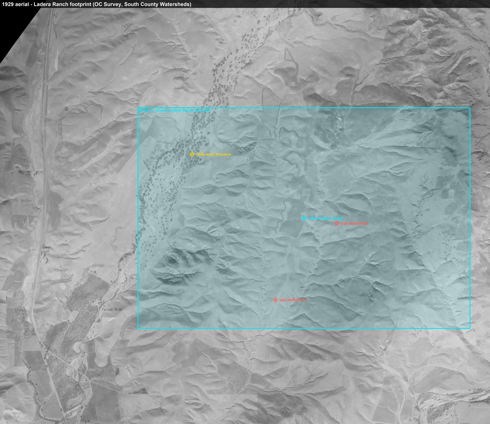
research/historical_imagery/oc_aerials/ann_1929.jpg
The gap narrowed from 31 years to 12. The 1929 frame is twelve years after the compulsory dipping period ended — within the plausible survival window of an abandoned but not yet demolished facility.
The resolution objection appeared to disappear. At 1.15 feet per pixel, a two-metre vat is roughly six pixels across, and a large swim-vat complex — trench, drip pen, and holding pens — would span hundreds of pixels.
This reasoning was later corrected. See C-004. It assumed the swim-vat model. USDA Circular 174 documents that California also used cage vats ($55–65 in materials, installed beside an existing corral, requiring only a short chute, and with no drip pen) and wade tanks (under $10 in lumber, roughly fifteen feet long). Installations of that class need not be resolvable at 1.15 ft/px. Claim EM-003 is downgraded to Low confidence as a result. The imagery search retains force against a large permanent installation only.
EM-004 · ESTABLISHED FACT · Confidence: High Orange County publishes scanned aerial photography of the study area back to 1929. Supporting: Raster catalog query returned 36 frames intersecting the footprint spanning 1929–1997; frames retrieved and georeferencing independently verified. Counter-evidence: None. Citation: OC Survey, Historic_Imagery_v2 ImageServer [S-IMG-01].
The finding this replaced was not merely incomplete — it was an argument that excused the absence of evidence. The corrected position is stronger and less comfortable: the imagery is now good enough that a surviving surface facility should have been visible, the search was conducted, and nothing was found.
14.2 Georeferencing and how it was verified
Every frame in this investigation is rendered to a single common extent — longitude −117.680 to −117.616, latitude 33.520 to 33.575 — so that any two epochs can be compared pixel for pixel without further transformation.
Aerials. Rectification is the county's own. Each frame was exported by locked raster ID over the identical bounding box, and the service echoes the extent it actually rendered. It matched the request to within ±25 metres, a residual attributable to aspect-ratio snapping.
That is a claim about the service, not about reality, so it was checked independently: the modern 2022 export from the same service was rendered to the identical extent, and the Zone A boundary lands squarely on the real Ladera Ranch subdivisions, with Interstate 5 and Mission Viejo falling where they belong. If the historical frames were misregistered, the modern frame rendered through the same pipeline would be misregistered too. It is not.
Topographic sheets. A pixel-to-coordinate transform was built with pyproj from the
ModelPixelScale, ModelTiepoint, and GeoKey directory tags (NAD27 polyconic, central
meridian −117.688°), then validated against the quad neatline — the computed image corners
reproduce the known 7.5-minute graticule to within a pixel. As an independent check, the 1968
sheet's printed 32′30″ latitude tick falls within about 1% of its computed position.
Georeferencing confidence: High for relative comparison, moderate for absolute position. Features can be compared between epochs with confidence. Absolute coordinates carry roughly ±25 m of uncertainty from the export pipeline, plus whatever error exists in the county's original rectification, which is not published. Coordinates reported in this chapter should be treated as accurate to about a building's width, not to a metre.
14.3 What the imagery shows
1929 — open rangeland
Grazed hills. The riparian corridor picked out by clustered trees. Unimproved dirt roads tracing the contours. Cultivated fields on the valley floor to the south-west, toward San Juan Capistrano. A black wedge in one corner marks the edge of the frame's coverage.
No structures are resolvable inside Zone A.
1937–38 — the sharpest frame in the set
At 1.15 feet per pixel this is a genuinely high-resolution photograph. Individual oaks are countable. Fence lines are legible. Wheel ruts in the dirt tracks are visible, and so are the braided channels of the creek.
Dense oak and sycamore woodland fills the corridor along the western side of Zone A. Across that corridor, in the county cartographer's own red ink, runs a label: Trabuco Creek.
Correction C-002 — the creek was misidentified. The corridor containing the 1948 ranch structure had been described throughout earlier project documentation as Cañada Chiquita. The 1937–38 aerial carries the cartographer's label, and it reads Trabuco Creek. Cañada Chiquita lies further east. Coordinates, distances, and the structure's characterization are unaffected — only the name of the watercourse was wrong.
Field boundaries and stock trails are visible across the eastern grasslands. Some frames carry pencil annotations from the original survey work — a circled "47", section and range notations in the margin — artifacts of the photograph's working life as a county document.
No corral, pen, chute, or vat complex is resolvable anywhere inside Zone A.
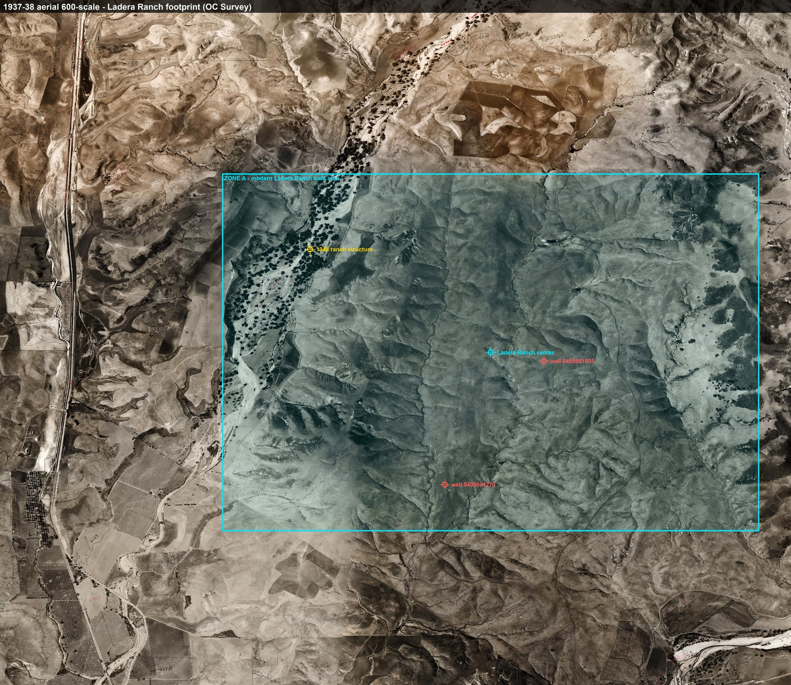
research/historical_imagery/oc_aerials/ann_1937.jpg
1946–47 — unchanged
Still rangeland. The north-west quarter of the footprint falls outside this frame's coverage, and is rendered as neutral grey in the published figures rather than left as the saturated yellow the export service returns, which reads as terrain at thumbnail size.
1968 topographic sheet — water infrastructure appears
The revised sheet maps a chain of impoundments down the Trabuco corridor, a labelled "Water Tank", a "Terminal Reservoir", a landing strip, and a gaging station. The land grant is labelled across the sheet: MISSION VIEJO OR LA PAZ.
2022 — built out
Ladera Ranch occupies the central and eastern portions of Zone A. The western Trabuco corridor survives as preserved open space.
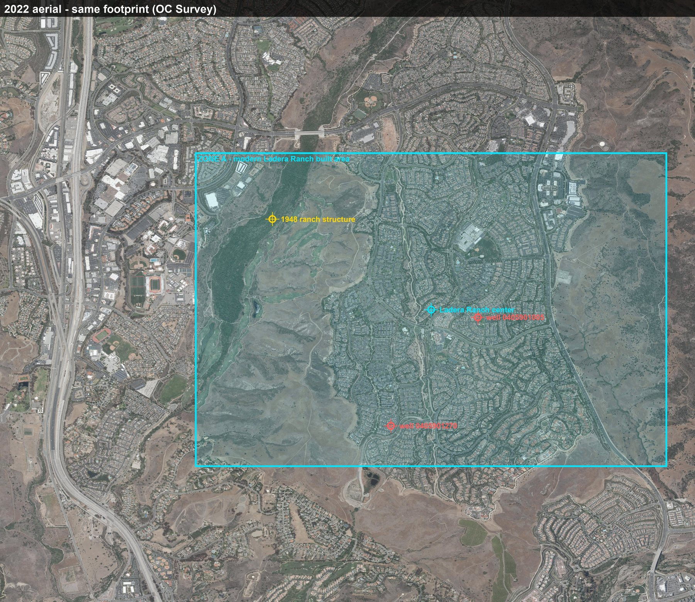
research/historical_imagery/oc_aerials/ann_2022.jpg
14.4 The systematic search
The imagery was not scanned by eye for anything that stood out. Zone A was divided into a 4 × 3 grid and each of the twelve tiles examined at full resolution, for both the 1929 and 1937–38 frames — twenty-four tiles in total. Each tile carries its own corner coordinates and a 200-metre scale bar, so any reader can return to a specific tile and check the same ground.
The tiles are published in full in the image archive.
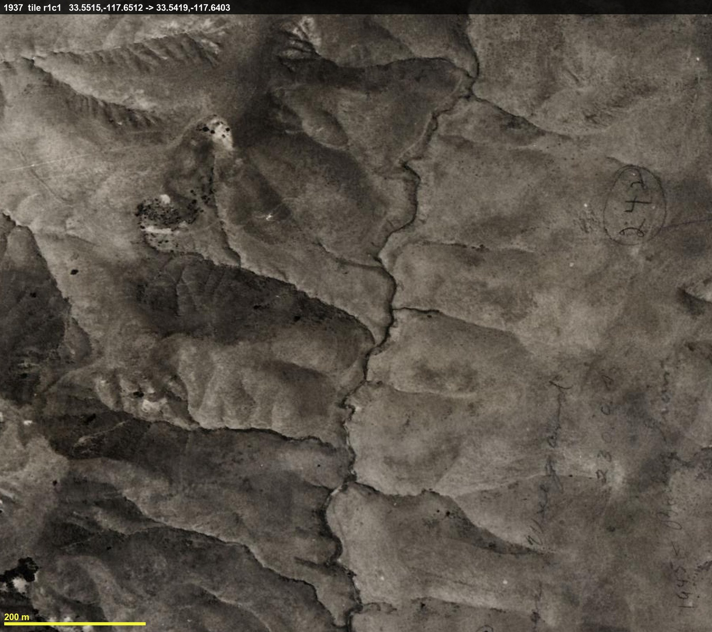
research/historical_imagery/oc_aerials/tiles/1937_r1c1.jpg
Result: no corral, pen, chute, or vat complex was found in any tile.
EM-003 · ESTABLISHED FACT · Confidence: Medium No cattle dip vat or corral complex has been identified anywhere inside the Ladera Ranch footprint. Supporting: Systematic 24-tile survey at 1.15 ft/px, a resolution at which a corral complex would be unmistakable; plus examination of the 1929, 1946–47, 1948, 1968, and 1974 sheets. Counter-evidence: Absence of evidence is not evidence of absence. Dipping ran 1907–1917 and the earliest imagery is 1929 — a 12-year gap. A vat backfilled at programme end would leave no surface trace. USGS cartographic convention had no vat symbol, so a vat would not appear on the topographic sheets even if one stood there. Confidence is Medium rather than High for these reasons. Citation: Systematic tile survey, this investigation [S-IMG-01].
A note on automated detection, and why it was abandoned
An earlier pass ran a connected-component detector over the 1948 topographic sheet looking for building-sized black blobs. It returned 25 candidates inside the footprint. Visual verification showed that 24 were artifacts — letters from the "MISSION VIEJO" map label, red section-line dots, and a benchmark "X" mark. Only one survived inspection.
The 24 rejected candidates are not plotted anywhere in this publication. They are recorded here because a detector that is right 4% of the time is a cautionary result worth publishing, and because a future contributor should not repeat it.
research/historical_imagery/10_zoom_1948_south_false_positives.jpg
14.5 The one structure
A single building appears inside the footprint on the 1948 sheet, at a trail convergence on the valley floor near elevation 307, adjacent to the drainage:
33.55505, −117.65492 — approximately 1.0 mile from the community centroid.
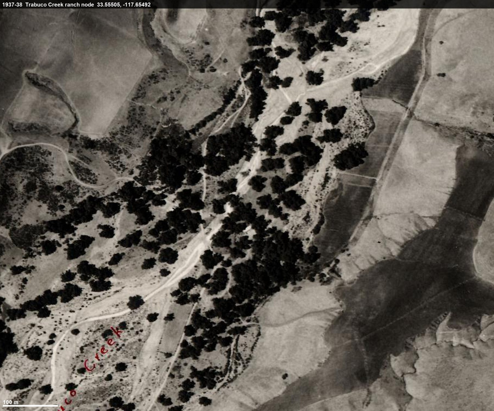
research/historical_imagery/oc_aerials/z1_ranch_1937.jpg
The setting is exactly what a ranch working area looks like: flat ground, water, and several unimproved roads meeting. That is where cattle were handled, and therefore where a dipping vat would have stood if one existed.
EM-009 · ESTABLISHED FACT (existence) / INVESTIGATIVE LEAD (function) · Confidence: Medium A single structure existed at 33.55505, −117.65492 on Trabuco Creek in the pre-development period. Supporting: Visible on the 1948 USGS sheet at a trail convergence on the valley floor at elevation 307, adjacent to water. Setting consistent with a ranch working area. Counter-evidence: The map does not label it. A single building is equally consistent with a line camp, a barn, or a ranch house. Nothing in the imagery distinguishes these. It is recorded as a ranch-activity node and is not identified as a dip site. Next step: Ground-penetrating radar or EM survey at this location would detect buried concrete or disturbed fill directly, and would resolve the question in a way that no amount of additional imagery analysis can.
This is the single most important interpretive boundary in the publication. A structure at a plausible location is a lead. It is not a finding, and the distinction is not rhetorical — one justifies a soil test, the other would justify conclusions this evidence cannot support.
14.6 Why a vat may be unfindable by these methods
Three limits, of which only the last two now apply:
-
Resolution — partially, not wholly, resolved. At 1.15 ft/px a large swim-vat installation would be visible, and none was found. But per correction C-004, a cage vat or wade tank — the cheap designs USDA documented for California — may produce no distinctive surface structure at all. This objection is weakened, not eliminated.
-
Cartographic convention. Dipping vats were essentially never mapped. USGS symbology has no vat symbol; a vat would at best fall under a generic structure dot, and usually was not plotted at all. The topographic sheets cannot answer this question regardless of their quality.
-
Timing. Compulsory dipping ran 1907–1917. The earliest frame is 1929. Twelve years is a substantial improvement on thirty-one, but it does not close the gap. Wooden corrals rot; concrete vats were commonly broken up and buried at the end of the programme. A facility decommissioned in 1917 could easily be invisible by 1929.
The honest summary, as revised: the imagery would probably have shown a large permanent swim-vat installation inside Zone A, and none was found. That is weak evidence against that specific design. It is no evidence about a small cage vat or wade tank, and no evidence about a demolished or buried facility of any size — which, given the twelve-year gap, is the more likely state of affairs if one ever existed.
14.7 Where the imagery avenue now stands
This line of inquiry is close to exhausted. The county's holdings have been enumerated and the pre-1950 frames retrieved and searched systematically. Further imagery work would mean pre-1929 photography, which for this area is unlikely to exist in useful form.
The productive leads are now documentary rather than photographic, and are set out in the recommendations chapter: Rancho Mission Viejo's own operating records, the County Agricultural Commissioner and State Veterinarian tick-eradication files, and General Land Office survey field notes — in which surveyors routinely recorded springs, corrals, houses, and improvements that never appeared on the published plat.
Reservoirs, Water Infrastructure, and Ranch Facilities
15.1 Why water is the organizing question
Cattle concentrate at water. It is the most reliable spatial regularity in range livestock management, and everything else follows from it: stock trails converge on water, holding grounds sit near water, and working facilities — corrals, chutes, and historically dipping vats — were sited where the animals already gathered, because moving cattle is expensive and moving water is harder.
This gives the investigation a search strategy that does not depend on finding a vat directly. Locate the historical water, and you have located the small number of places where a working facility could plausibly have stood. Water is mapped; vats are not.
15.2 The 1968 surface-water layer
The 41 water bodies in this layer were not detected by an algorithm looking at photographs. They were extracted from the 1968 USGS 7.5-minute San Juan Capistrano quadrangle by isolating the printed cyan hydrography ink.
The distinction matters. Every polygon recovered this way was drawn by a surveyor who visited the ground. This is cartographic testimony, not image interpretation.
Method. Blue-dominant pixels were isolated by threshold (blue exceeding red by 26 levels and green by 8, with brightness and paper-white exclusions), morphologically cleaned, and labelled into connected components. Features smaller than 350 m² were dropped as stream hairlines and print noise; shapes with elongation greater than 7 were dropped as drawn stream lines rather than impoundments.
Result: 41 water bodies of 350 m² or larger, 16 of them inside Zone A. The largest is 24,745 m² at 33.54394, −117.66132.
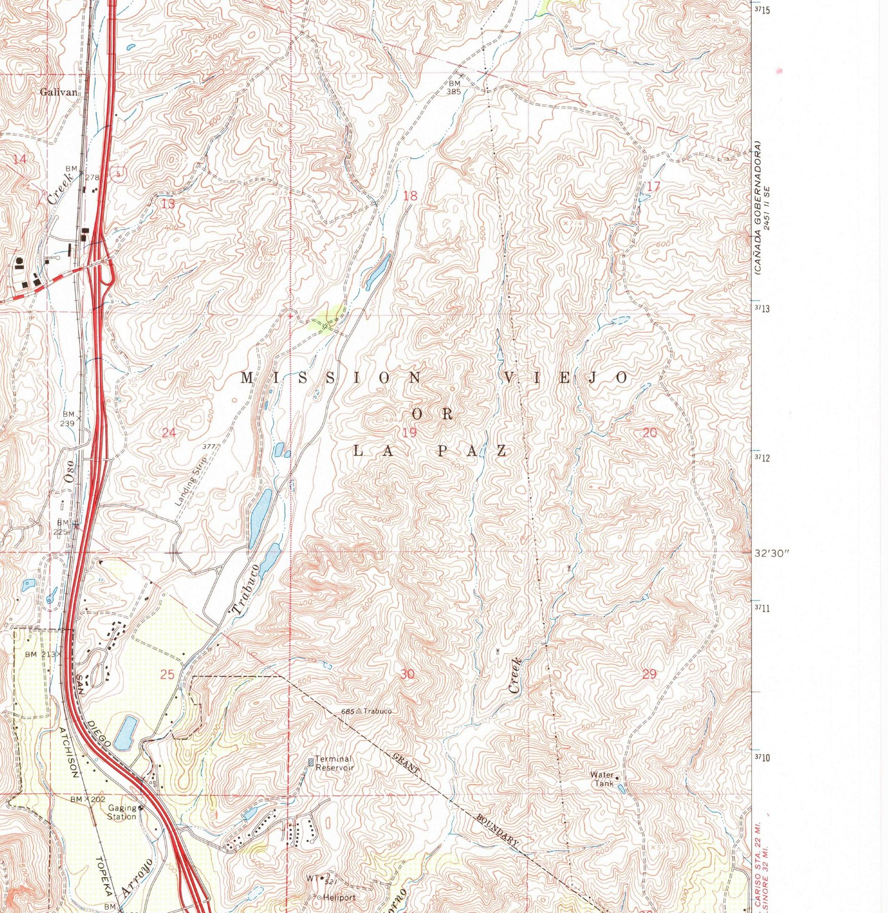
research/historical_imagery/03_topo_1968_footprint.jpg
EM-005 · ESTABLISHED FACT · Confidence: High
The 1968 USGS field survey mapped 41 surface-water bodies of ≥350 m² within the study
footprint, 16 of them inside Zone A.
Supporting: Cyan hydrography extracted from the georeferenced 1968 sheet; 41 features passed
area and elongation filters.
Counter-evidence: Derived by colour thresholding, so it inherits any generalisation in the
original cartography and any scan artefacts. Positions are centroids, not digitised
outlines. Features under 350 m² were excluded by design and are therefore absent from the
layer regardless of whether they existed.
Citation: USGS San Juan Capistrano 7.5′ quadrangle, 1968 edition [S-MAP-04];
pipelines/python/extract_topo_water.py.
The method that was tried first, and abandoned
Before the ink-extraction approach, water was sought directly in the 1929 and 1937 aerial photographs on a defensible physical premise: on panchromatic film, standing water is both dark and smooth, whereas riparian vegetation is dark but strongly textured and hillslope shadow is dark but elongated and attached to terrain. Requiring low brightness and low local variance together should separate ponds from both.
It did not work. The detector returned 111 candidates in the 1929 frame and 225 in the 1937 frame, roughly 100 of them inside Zone A. Visual review showed it was keying on hillslope shadow.
The failure had a specific cause worth recording: the scanned frames have incompatible tone curves. The 1929 frame's 12th-percentile brightness sits around DN 109–128 — it is a bright, low-contrast scan. The 1937 frame's sits around DN 23–43 — dark and high-contrast. No single percentile threshold serves both, and the terrain is steep enough that shadow dominates the dark tail in the contrastier frame.
The script is retained with the failure documented in its docstring, so the approach is not naively retried. None of its candidates appear anywhere in this publication.
15.3 Testing the central spatial hypothesis
An observation prompted this test. Looking at present-day property listings against the historical maps, the homes in Ladera Ranch and Rancho Mission Viejo appear to sit exactly where the old ranch water sources were. If true, and if working facilities followed water, that would place modern housing on the most likely locations of historical cattle-handling activity.
It is a genuinely good hypothesis. It was tested directly.
Method. For each of the 41 water bodies mapped in 1968, count modern building footprints within 100 metres, and record the distance to the nearest one. Compare against a null: the same measurement taken at random points drawn from the same area. Building footprints from OpenStreetMap, n = 10,618.
The descriptive result — the observation holds
| Nearest modern building to a 1968 water body | Sites |
|---|---|
| within 100 m | 24 / 41 (59%) |
| within 200 m | 34 / 41 (83%) |
| within 300 m | 40 / 41 (98%) |
| within 500 m | 41 / 41 (100%) |
Median distance from a ranch-era water body to the nearest house today: 66 metres.
Every single one of the water sources this land's cattle operation depended on now has a house within 500 metres of it. As a description of the present landscape, the observation is exactly right.
EM-006 · ESTABLISHED FACT · Confidence: High
Every one of the 41 ranch-era water bodies now has a modern building within 500 m; the median
distance to the nearest building is 66 m.
Supporting: Measured against 10,618 OSM building footprints.
Counter-evidence: OpenStreetMap completeness is not guaranteed uniform. However, under-mapping
would bias measured distances upward, not downward — so the finding is conservative.
Citation: pipelines/python/premise_homes_on_water.py [S-GIS-02].
The causal result — the explanation does not hold
| Buildings within 100 m | |
|---|---|
| 1968 water sites in Zone A (n = 16) | 9.0 |
| Random points in Zone A (n = 6,000) | 9.3 |
| Enrichment | 0.97× (permutation p = 0.51) |
The old water sites are no more built over than any other ground in Zone A. Developers did not seek out the water and the cattle-working areas. If anything the point estimate falls marginally below chance, and it is statistically indistinguishable from it.
EM-007 · ESTABLISHED FACT · Confidence: High
Modern housing was not preferentially sited on the ranch-era water bodies.
Supporting: Zone-A-restricted null: 9.0 buildings within 100 m of water sites vs 9.3 for
6,000 random points. Enrichment 0.97×, permutation p = 0.51.
Counter-evidence: An initial bbox-wide null gave 0.79×, but that null was inflated by dense
Mission Viejo development falling inside the bounding box. The Zone-A-restricted null is the
fair comparison and is reported as primary. Both are published.
Citation: research/historical_imagery/premise_null_zonea.json [S-GIS-02].
Why both results are true at once
Development here was near-total. Once nearly every part of the footprint is close to housing, proximity to housing stops carrying information. The water sites are all near houses because everything is near houses.
The pattern was real. The explanation for it was not.
research/historical_imagery/11_timeseries_1929-2022_with_water.jpg
What this changes, and what it does not
It removes a mechanism: "the developers built on the cattle-working grounds" is not supported, and should not be asserted.
It does not reduce the exposure question — arguably the opposite. If ranch-era ground contamination exists anywhere within this footprint, near-total development means it now sits under or beside housing regardless of whether anyone selected those locations. Targeting was never required for coincidence; comprehensive development achieves the same outcome by a different route.
What falls away is an explanation. The underlying concern is untouched.
15.4 A measurement that looks compelling and must not be used
Buildings in this footprint sit on a median slope of 1.7°, against 6.7° for available land across the same extent. On its face that is a strong signal: houses are on flat ground, flat ground is valley bottom, valley bottoms are where water and cattle were.
This reasoning is circular and the measurement cannot be used.
Ladera Ranch was mass-graded. The building pads were cut flat. The flatness measured under a house today was manufactured by the grading — which is itself one of the activities under investigation. The modern digital elevation model describes engineered pads, not original landform, and cannot speak to where anyone chose to build relative to natural terrain.
EM-008 · ESTABLISHED FACT (methodological exclusion) · Confidence: High Modern slope beneath buildings cannot be used to infer original landform siting. Supporting: Buildings at median 1.7° vs 6.7° for available land — but Ladera Ranch was mass-graded, so pad flatness was manufactured by the grading under investigation. Counter-evidence: None. This is a deliberate methodological exclusion, recorded so the figure is not later mistaken for a finding. What would be required instead: Reconstruction of pre-1980 elevations from the 1948 and 1968 topographic contours, which would give original landform independent of the grading. Citation: USGS 3DEP DEM [S-GIS-01]; this investigation.
This is recorded rather than omitted because the figure is genuinely persuasive and someone will eventually rediscover it. It should be met with this note.
15.5 Water infrastructure named in the record
The 1968 sheet labels several features by name:
| Feature | Type | Source | Status |
|---|---|---|---|
| Terminal Reservoir | Reservoir | 1968 USGS quad, labelled | Located on sheet |
| Water Tank | Tank | 1968 USGS quad, labelled | Located on sheet |
| "WT 521" | Water tank w/ elevation | 1968 USGS quad, labelled | Located on sheet |
| Gaging Station | Stream gage | 1968 USGS quad, labelled | Located on sheet |
| Landing Strip | Airstrip | 1968 USGS quad, labelled | Located on sheet |
| Impoundment chain | ~8 stock ponds | 1968 USGS quad, drawn | Trabuco corridor |
OPEN QUESTION — named ranch facilities not yet located. The historical record refers to a set of named ranch working facilities associated with this operation — headquarters, cow camps, line camps, named corrals. None has yet been located with coordinates by this investigation, and none appears in the imagery examined. Whether any stood within the study footprint, as opposed to elsewhere on a ranch that covered well over a hundred thousand acres, is unresolved. Next step: General Land Office survey field notes for the relevant townships. Surveyors routinely recorded springs, corrals, houses, and improvements in their notes that never appeared on the published plat. This is the highest-value untapped cartographic source identified.
15.6 Where this leaves the search
The water layer did its job. It converted a vague question — where might a working facility have been? — into a bounded set of 41 specific locations, 16 of them inside the community.
It did not find a vat, and the spatial test it enabled removed one attractive hypothesis about how development related to that history.
What it produces is a sampling frame. If soil investigation is ever undertaken here, these 41 locations plus the Trabuco ranch node are where an investigator with limited resources should look first — not because contamination is expected at them, but because they are the places where the historical activity of interest would have concentrated if it occurred at all. That recommendation is developed in the environmental investigation chapter.
Environmental Review Audit
This is the chapter the investigation was built to produce. The question it answers is not whether anyone did anything wrong. It is narrower and more answerable:
When this land was assessed before development, how far back did the historical review actually look?
The documents have been obtained and read. Every figure below was verified directly against the source PDFs, which are archived in the evidence directory.
16.1 What was obtained
| Document | Identifier | Date | Pages | Read |
|---|---|---|---|---|
| EIR 589 Appendix I — Phase I ESA, Planning Areas 1–9 | SCH 2003021141 / EIR 589 | 2003, rev. 2004 | 218 | ✓ full text |
| Final PEIR, OC Affordable Housing Implementation Plan | SCH 2015051062 / PEIR 623 | 2016 | 1,737 | ✓ full text |
| Oso Grande School Phase I ESA | EnviroStor 30020004 | Feb 2002 | 67 | ✓ full text |
| Oso Grande Phase I Addendum | EnviroStor 30020004 | Oct 2003 | 43 | ✓ full text |
| DTSC letters (2) — Oso Grande | — | Sept & Oct 2003 | 6 | ✓ full text |
A critical scope caveat, stated before any finding. EIR 589 covers the 22,815-acre Ranch Plan — Rancho Mission Viejo land to the east and south. It is not the Ladera Ranch residential entitlement.
Of everything obtained, only the Oso Grande School documents sit inside the Ladera Ranch footprint (33.5436 N, −117.6377 W).
16.2 The Phase I historical source window
EM-022 · ESTABLISHED FACT · Confidence: High
The Phase I historical review of aerial photography began in 1952.
Supporting. EIR 589 Appendix I states, in identical language across all nine Planning Areas: "Photographs dating from 1952 to 1999 were reviewed at Continental Aerial Photo" (two areas read 1953). Topographic maps: "dating from 1948 to 1988." Verified by direct text extraction across all 218 pages.
The Oso Grande Phase I — the one document inside the Ladera Ranch footprint — reviewed five aerial photographs: 1952, 1968, 1977, 1989, 1994. No earlier aerial appears anywhere in it.
A regex sweep for pre-1952 years across the documents returned only 1920, 1942, and 1948 — map references, not aerial photography. No 1929 or 1938 imagery appears in any document obtained.
Counter-evidence. This describes the documents obtained and read. It does not describe documents that exist but were not located — see §16.5.
What that window excludes
The Orange County cattle tick quarantine ran from approximately February 1908 to March 1912. The Phase I historical review began in 1952.
The dipping era falls forty years outside the earliest photograph anyone reviewed.
This is not a criticism of the consultants. A Phase I ESA under ASTM 1527 requires review back to first developed use or 1940, whichever is earlier, using reasonably ascertainable sources. Continental Aerial Photo's holdings began in 1952. The consultants complied with the standard using the sources available to them.
But it produces a specific, structural consequence:
This investigation obtained aerial photography of the same ground from 1929 — twenty-three years earlier than the review window — from a free public county service.
The 1929, 1931, 1937–38, and 1946–47 frames were not reasonably ascertainable in 2002 in the way they are today. Orange County's historical imagery service is a modern digitisation. The gap is a product of when the assessment was done, not of how carefully it was done.
16.3 Search terms: what the documents do not contain
Every term was searched across the full extracted text of each document.
| Term | EIR 589 App. I (582k chars) | 2016 PEIR (4.4M chars) | Oso Grande Phase I |
|---|---|---|---|
dip vat |
0 | 0 | 0 |
cattle dip |
0 | 0 | 0 |
sheep dip |
0 | 0 | 0 |
dipping |
1 — unrelated | 0 | 0 |
arsenic |
1 — unrelated | 0 | 0 |
livestock |
— | — | 0 |
DDT / toxaphene / organochlorine |
0 | 0 | — |
The two non-zero hits in EIR 589 Appendix I were checked individually and neither concerns cattle:
- "dipping" (p. 181) — metal-finishing operations at an industrial facility: "dipping, and welding/cutting operations."
- "arsenic" (p. 119) — groundwater above the maximum contaminant level at a mine-tailings reservoir.
EM-023 · ESTABLISHED FACT · Confidence: High No document obtained in this investigation contains any reference to cattle dipping, dip vats, or arsenical dip in connection with this land. Counter-evidence: This is a statement about documents obtained. The Ladera Ranch entitlement EIR was not located, and the most directly relevant hazardous-materials assessment is not online — see §16.5. Absence from the searchable record examined here is not evidence that the question was never considered.
16.4 Soil sampling: point-source only
EM-024 · ESTABLISHED FACT · Confidence: High
No footprint-wide soil sampling programme appears in any document obtained. Sampling was recommended only at discrete recognised environmental conditions: a used-oil release at the Field Office, two removed 12,000-gallon underground storage tanks, a ~500-gallon tank at Cow Camp, buried equipment and waste scraps, and former pistol ranges (for lead and copper).
A Phase I ESA is by definition non-sampling under ASTM 1527. That is the standard working correctly — but it means the absence of sampling is a property of the instrument, not a finding about the soil.
The one site inside Ladera Ranch, in detail
Oso Grande School — 10 acres at Sienna Parkway and O'Neil Drive, inside the community footprint. EnviroStor records its past use as "AGRICULTURAL – LIVESTOCK" and its site history as: "Since before 1942 and up to 1999… part of a larger cattle ranch, used for dry farming and grazing."
No soil sampling was performed. Pesticides were addressed qualitatively:
Although the site may have been in light agricultural use (dry farming), pesticides and/or herbicides are not suspected within the near-surface soils beneath the site. Any pesticides and/or herbicides at the site were likely mixed and/or placed at lower depths during the development of the site.
DTSC required a Preliminary Endangerment Assessment on 8 September 2003, then on 7 October 2003 accepted the Addendum and concluded that "further environmental investigation of the site is not required." That conclusion rested on a site visit and geotechnical borings reviewed for methane and organics — not for pesticides or arsenic.
Final EnviroStor status: contaminants "NO CONTAMINANTS FOUND", status "NO ACTION REQUIRED."
"No contaminants found" here means no contaminants were looked for in soil. The site was cleared on a documentary and visual basis. That is a legitimate outcome under the applicable process. It is not a measurement, and it should not be read as one.
Note also the reasoning: contamination was discounted partly on the grounds that surface soils "were removed prior to fill placement" — an argument about grading, which relocates material rather than eliminating it.
Database sweep
- EnviroStor, city = Ladera Ranch: one record — Oso Grande, No Action Required.
- GeoTracker, city = Ladera Ranch: two records, both permitted underground fuel tanks at retail fuel stations. No cleanup cases.
- No LUST, Cortese, or cleanup site covers the residential footprint in either database.
16.5 What could not be found, and why it matters most
The Ladera Ranch entitlement EIR was not located.
A complete half-year sweep of CEQAnet — 22 queries with lead agency Orange County across 1990–2000, plus 14 queries by county across 1993–1999, every slice under the row cap — returned zero records matching Ladera Ranch. The only hit was a Santa Margarita Water District negative declaration for water and sewer lines (SCH 1999031033).
The closest candidate is SCH 1994031075, the Antonio Parkway Alignment Study and Surrounding Land Use Plan — 5,000 acres between Ortega Highway and Crown Valley Parkway, 9,800 units, three school sites. The geography fits. The identification is inferred and unconfirmed.
The single highest-value document in this entire investigation has been identified by name and is not online.
EIR 589 Appendix I, page 21, cites:
Michael Brandman Associates, May 1995, Environmental Impact Report for the Antonio Parkway Roadway Alignment and Land Use Plan, Appendix H — Hazardous Materials Environmental Site Assessment.
This is the hazardous-materials assessment for the land Ladera Ranch was built on. It would answer, for the residential footprint itself, the question this chapter can only answer for neighbouring land: how far back did the historical review go, and was cattle-era land use ever considered?
It is the top-priority records request arising from this investigation. CEQAnet hosts no attachments for filings of that vintage — its own note reads that the document "was originally posted before CEQAnet had the capability to host attachments." Contact: Orange County Planning, (714) 834-2166.
16.6 The audit conclusion, worded precisely
On the documents obtained and read:
- The Phase I historical review of aerial photography began in 1952.
- The Orange County cattle tick quarantine ended in approximately March 1912 — forty years earlier.
- No document obtained contains any reference to cattle dipping, dip vats, or arsenical dip.
- No footprint-wide soil sampling programme appears in any document obtained.
- The one site inside the community footprint was cleared with no soil sampling, on a documentary and visual basis, with borings reviewed for methane and organics only.
On what this does not establish:
The Ladera Ranch entitlement EIR was not located. Its hazardous-materials appendix — identified by name — is not online. Tract-level grading and geotechnical reports, and any developer-commissioned sampling, are not in the public repositories searched.
The searchable materials examined in this investigation do not appear to identify cattle-era land use as a potential source. That is not the same as saying it was never considered. The distinction is not a hedge; it is the difference between what was checked and what exists.
The honest summary: this is a documented gap in the historical window, not a documented failure. The pre-1952 record was, in 2002, genuinely difficult to obtain. It is easy to obtain now. That is a reason to look again — not a reason to conclude that anyone should have looked harder then.
Phase I Historical Source Window
The single most consequential number in this investigation is a date on a consultant's source list: 1952.
This chapter examines that number — where it comes from, what standard governs it, and what it does and does not imply.
17.1 The number, verified
EM-022 · ESTABLISHED FACT · Confidence: High
EIR 589 Appendix I states, in identical language across all nine Planning Areas:
Photographs dating from 1952 to 1999 were reviewed at Continental Aerial Photo
Two Planning Areas read 1953. Topographic maps: "dating from 1948 to 1988."
The Oso Grande School Phase I — the only assessment inside the Ladera Ranch footprint — reviewed exactly five aerial photographs: 1952, 1968, 1977, 1989, 1994.
Verified by direct text extraction across all 218 and 67 pages. A regex sweep for pre-1952 years returned only 1920, 1942 and 1948 — all map references, none aerial photography.
17.2 What governs the window
A Phase I Environmental Site Assessment under ASTM E1527 requires historical review back to first developed use or 1940, whichever is earlier, using sources that are reasonably ascertainable.
That last phrase carries the weight. It does not mean "all sources that exist." It means sources obtainable within reasonable time and cost by a practitioner exercising due diligence at the time of the assessment.
Continental Aerial Photo — the commercial repository the consultants used — held coverage beginning in 1952.
The consultants complied with the applicable standard. This publication states that plainly because the distinction between a gap and a failure determines whether this report is actionable or merely accusatory.
17.3 What was reasonably ascertainable then, and now
This is the crux, and it is a statement about archive digitisation history, not about diligence.
| 2002 | 2026 | |
|---|---|---|
| Commercial aerial repositories | 1952 onward | 1952 onward |
| Orange County historical imagery | Physical holdings, no public digital service | Public ArcGIS service, 1929 onward, free |
| Practical earliest aerial | 1952 | 1929 |
Orange County's Historic_Imagery_v2 service is a modern digitisation. In 2002 a consultant
seeking 1929 photography would have needed to know it existed, identify the physical holding,
and arrange reproduction — for imagery that, on the standard's own terms, was not required.
Twenty-three years of photographic record separates what was reviewed from what exists. That gap was created by the passage of time and the digitisation of a county archive, not by anyone cutting a corner.
17.4 The arithmetic that matters
| Date | |
|---|---|
| Orange County cattle tick quarantine begins | ~Feb 1908 |
| Quarantine lifted | Mar 1912 |
| Earliest aerial photography that exists | 1929 |
| Earliest aerial photography reviewed | 1952 |
| Ladera Ranch construction | ~1999 |
Forty years separate the end of the dipping era from the earliest photograph anyone reviewed.
The activity of interest is entirely outside the reviewed window. Not marginally outside — four decades outside.
17.5 What this does and does not imply
It implies: the pre-1952 land use of this footprint was not examined photographically during environmental review. Whatever the 1929–1947 imagery would have shown, nobody assessing this site saw it.
It does not imply that a Phase I reviewing 1929 imagery would have found anything. This project did review that imagery, systematically, and found no vat and no corral complex — and then downgraded even that finding to low confidence on discovering that the cheap USDA vat designs need not be visible at all.
A 1929-inclusive Phase I might well have produced the same clean result. The gap in the window is real; the assumption that closing it would change the answer is not supported.
17.6 Why it still warrants a second look
Three things are true simultaneously, and all three belong in any fair reading:
- The historical window excluded the period of interest by forty years.
- The consultants met the applicable standard using the sources available to them.
- The imagery that would have covered the gap is now free, public, and takes minutes to obtain.
The third fact is what converts this from a historical observation into a recommendation. The cost of looking again is now close to zero. That is a reason to look — not a reason to conclude that anyone should have looked harder in 2002.
What Was Evaluated
The environmental review of this land was not cursory. This chapter records what it actually covered, because an audit that only lists omissions is not an audit.
18.1 The documents
| Document | Identifier | Scope | Pages |
|---|---|---|---|
| EIR 589 Appendix I — Phase I ESA, Planning Areas 1–9 | SCH 2003021141 | Ranch Plan, 22,815 acres | 218 |
| Final Program EIR, OC Affordable Housing Implementation Plan | SCH 2015051062 | Ranch Plan | 1,737 |
| Oso Grande School Phase I ESA | EnviroStor 30020004 | Inside Ladera Ranch, 10 acres | 67 |
| Oso Grande Phase I Addendum | EnviroStor 30020004 | Same | 43 |
| DTSC correspondence, two letters | — | Same | 6 |
18.2 What the Phase I assessments did cover
Read in full, the assessments were thorough within their scope:
Site reconnaissance. Physical walkover, observation of storage, staining, containers, structures, and evidence of releases.
Regulatory database review. Federal, state and local environmental databases for the site and surrounding properties, at the radii ASTM specifies.
Historical aerial photography. 1952–1999, at intervals — the window examined in Ch. 17.
Historical topographic maps. 1942–1988, including the 1948 USGS sheet.
Recognised environmental conditions, identified and pursued. The assessments found specific issues and recommended specific follow-up:
| Condition identified | Recommendation |
|---|---|
| Used-oil release at the Field Office | Sampling |
| Two removed 12,000-gallon underground storage tanks | Sampling |
| ~500-gallon UST at Cow Camp | Sampling |
| Buried equipment and waste scraps | Sampling |
| Former pistol ranges | Lead and copper sampling (FEIR 589 MM 4.14-11) |
This is a Phase I working correctly. It identified point sources from documentary and visual evidence and recommended targeted sampling at each. The methodology is not in question.
18.3 Agricultural land use — considered, and reasoned about
Former agricultural use was recognised. The Oso Grande assessment addressed it explicitly:
Although the site may have been in light agricultural use (dry farming), pesticides and/or herbicides are not suspected within the near-surface soils beneath the site. Any pesticides and/or herbicides at the site were likely mixed and/or placed at lower depths during the development of the site.
DTSC engaged with it. On 8 September 2003 the department required a Preliminary Endangerment Assessment. On 7 October 2003, having received an addendum, it concluded that "further environmental investigation of the site is not required."
The reasoning was documentary and visual, not analytical. The conclusion rested on a site visit and geotechnical borings that were reviewed for methane and organics — not for pesticides or arsenic. No soil sample was analysed for either.
Note also the logic of the pesticide argument: contamination was discounted partly because surface soils "were removed prior to fill placement." That is an argument about grading, which relocates material rather than eliminating it. See Ch. 22.
18.4 The regulatory record for the footprint
| Database | Records for Ladera Ranch |
|---|---|
| DTSC EnviroStor | 1 — Oso Grande School. Past use "AGRICULTURAL – LIVESTOCK". Status: NO CONTAMINANTS FOUND / NO ACTION REQUIRED |
| State Water Board GeoTracker | 2 — permitted fuel tanks at two retail stations. No cleanup cases |
| LUST / Cortese / cleanup sites | None covering the residential footprint |
"NO CONTAMINANTS FOUND" means no contaminants were sought in soil. The site was cleared without sampling. That is a legitimate outcome under the applicable process and it is not a measurement — a distinction that matters because the phrase reads, to a non-specialist, as a laboratory result.
18.5 The fair summary
Environmental review of this land happened, was documented, engaged a regulator, and identified and pursued specific contamination sources.
Its limits were the limits of its instrument and its era: a Phase I does not sample, ASTM required review only to 1940 using reasonably ascertainable sources, and the aerial archive available in 2002 began in 1952.
What follows in Ch. 19 is what does not appear in it — worded with care, because the distinction between absent from the documents obtained and never considered is the difference between a finding and an accusation.
What Does Not Appear to Have Been Evaluated
The wording of this chapter is deliberate throughout, and the deliberation is the point.
"The searchable materials examined in this investigation do not appear to identify…" is not a hedge. It is the only claim the evidence supports. A document sitting in a county file cabinet, a consultant's archive, or a developer's records is invisible to this project — and must not be declared nonexistent by it.
19.1 Cattle-era land use
EM-023 · ESTABLISHED FACT · Confidence: High
Full-text search across every document obtained:
| Term | EIR 589 App. I (582k chars) | 2016 PEIR (4.4M chars) | Oso Grande Phase I |
|---|---|---|---|
dip vat |
0 | 0 | 0 |
cattle dip |
0 | 0 | 0 |
sheep dip |
0 | 0 | — |
dipping |
1 — unrelated | 0 | 0 |
arsenic |
1 — unrelated | 0 | 0 |
livestock |
— | — | 0 |
The two non-zero hits were checked individually. "dipping" (p. 181) is metal-finishing at an industrial facility: "dipping, and welding/cutting operations." "arsenic" (p. 119) is groundwater above the maximum contaminant level at a mine-tailings reservoir.
Neither concerns cattle.
What this means: cattle-era land use as a potential contamination source does not appear in the documents obtained. The tick eradication programme, arsenical dipping, and vat siting are absent from the searchable record examined.
What it does not mean: that the question was never considered. The Ladera Ranch entitlement EIR was not located, and its hazardous-materials appendix — identified by name — is not online.
19.2 Soil sampling across the residential footprint
No footprint-wide soil sampling programme appears in any document obtained. Sampling was recommended only at discrete recognised environmental conditions — a used-oil release, three underground tanks, buried scrap, and former pistol ranges.
A Phase I ESA is non-sampling by definition under ASTM E1527. The absence of sampling is a property of the instrument, not a finding about the soil.
Tract-level grading and geotechnical reports, and any developer-commissioned sampling, are not in the public repositories searched. They almost certainly exist — mass grading requires permits, plans, and compaction testing. They have not been requested.
19.3 The specific analytical gap
This is narrower and more useful than "they didn't sample."
A sampling grid designed for field-scale agricultural residue cannot find a dipping vat.
Orchard lead arsenate and row-crop organochlorines were applied across whole fields. A grid sized to characterise field-scale application samples the thing being sought.
A dipping vat is a point source perhaps twenty metres across. A field-scale grid can pass directly over it and register nothing. Both investigations are summarised identically — "soil was sampled for arsenic on former agricultural land" — and they are not the same investigation.
The audit question is therefore not "was soil sampled?" but "was sampling ever targeted at locations where a point source would have stood?"
In the documents obtained, the answer appears to be no — sampling was targeted at documented twentieth-century point sources (tanks, oil releases, ranges), which is correct practice for the conditions the Phase I identified. No pre-1952 land-use feature was among them, because no pre-1952 imagery was reviewed.
19.4 The document that would settle this
EM-025 · OPEN QUESTION
EIR 589 Appendix I, page 21, cites:
Michael Brandman Associates, May 1995, Environmental Impact Report for the Antonio Parkway Roadway Alignment and Land Use Plan, Appendix H — Hazardous Materials Environmental Site Assessment.
This is the hazardous-materials assessment for the land Ladera Ranch was built on.
A complete CEQAnet sweep — 22 queries with lead agency Orange County across 1990–2000, plus 14 by county across 1993–1999, every slice under the row cap — returned zero Ladera Ranch records. CEQAnet hosts no attachments for filings of that vintage.
Until this document is read, every statement in this chapter is provisional. It may address cattle-era land use in detail. It may not. Nobody outside the county currently knows.
Records request: Orange County Planning, (714) 834-2166.
19.5 The audit conclusion
On the documents obtained and read:
- Historical aerial review began in 1952; the quarantine ended in March 1912
- No reference to cattle dipping, dip vats, or arsenical dip appears anywhere
- No footprint-wide soil sampling programme appears
- The one site inside the community was cleared with no soil sampling, on documentary and visual grounds, with borings reviewed for methane and organics only
On what this does not establish:
The entitlement EIR was not located. Its hazmat appendix is not online. Grading records have not been requested. Developer-held documents have not been sought.
This is a documented gap in the historical window, not a documented failure. The pre-1952 record was genuinely difficult to obtain in 2002 and is trivially available now.
The correct conclusion is look again — not someone should have looked harder.
Agricultural Pesticides and Other Potential Exposure Pathways
A report that examines only one hypothesis is not an investigation; it is an argument. This chapter sets out every environmental pathway that has been identified as potentially relevant to this community, and grades each on the same scale — including the pathways that are better documented than the arsenical-dipping hypothesis that prompted the work.
Several of them are.
20.1 How these are ranked
Each pathway is assessed on two independent axes, which are frequently confused:
Documentation — how well established is it that this thing was present or occurred here? Plausibility of exposure — if present, how credible is a pathway to human contact?
A pathway can be well-documented and low-exposure (a plugged well a mile away), or poorly-documented and high-exposure-if-real (a dip vat under a park). Collapsing these into a single "risk" score would hide exactly the distinction that matters.
20.2 Documented: arsenic in soil at nearby school sites
EM-013 · ESTABLISHED FACT · Confidence: High DTSC found arsenic in soil at several school sites on former agricultural land near Ladera Ranch. Supporting: EnviroStor records for Carl Hankey Elementary, the Plant Depot School Site, and San Juan Elementary list arsenic among contaminants identified. Counter-evidence: Arsenic occurs naturally in California soils at background concentrations, and presence alone establishes neither an anthropogenic source nor any link to cattle dipping. Former orchard land carries lead arsenate residues from an entirely different practice — insecticide application to fruit trees — which is a far more common explanation for arsenic on former California agricultural land than cattle dipping. Citation: DTSC EnviroStor site records [S-ENV-01].
This is the best-documented arsenic finding in the study area, and it is important to state plainly that it does not support the dipping hypothesis over the orchard hypothesis. Lead arsenate was applied to California orchards for decades and is the default explanation for elevated arsenic on former orchard ground. Where lead and arsenic are elevated together in roughly the ratio of the compound, that is a lead-arsenate signature. A dipping-vat signature would show arsenic strongly elevated in a very small area without proportionate lead.
That distinction — the lead-to-arsenic ratio and the spatial extent — is testable, and is the single most useful discriminator available. It is developed in the recommendations chapter.
20.3 Documented: organochlorine pesticide residues
ESTABLISHED FACT · Confidence: High DDT and its breakdown products, chlordane, and toxaphene have been identified in soil at former agricultural sites in the immediate area. Supporting: EnviroStor records for San Juan Elementary (chlordane, DDD, DDE, DDT, plus lead and arsenic) and Ambuehl Elementary (DDD, DDE, DDT, toxaphene). Counter-evidence: These findings are at school sites on former agricultural land, not within the Ladera Ranch residential footprint. Extrapolating them to Ladera Ranch soil is not supported by any measurement. Citation: DTSC EnviroStor site records [S-ENV-01].
Organochlorines are persistent, though unlike arsenic they do degrade. Their presence confirms that this general area carries a legacy agricultural chemical burden — which is unremarkable for former Southern California farmland and is exactly what the school-site assessment programme exists to catch.
20.4 Documented: proximity to plugged oil and gas wells
ESTABLISHED FACT (proximity) / INVESTIGATIVE LEAD (relevance) · Confidence: High for geometry Two plugged exploratory wells lie within approximately one mile of the community centroid, one at roughly 0.25 miles. Six lie within ten kilometres. Supporting: CalGEM WellSTAR database coordinates, distances recomputed by haversine from the corrected community centroid. Counter-evidence: These are mid-twentieth-century plugged dry holes, generally a lower leakage risk than production wells. The community's drinking water is imported rather than drawn from local groundwater. Proximity is a screening signal, not a dose. Citation: CalGEM WellSTAR [S-ENV-02]; correction C-001.
This pathway deserves particular attention because it has something the dipping hypothesis lacks: a published epidemiological association with the specific cancer in question. A 2026 peer-reviewed California study reported a suggestive but non-significant association between residential proximity to abandoned oil and gas wells within 10 km and childhood Ewing sarcoma (OR 1.27, 95% CI 0.96–1.66), stronger in Hispanic children.
A confidence interval spanning 1.0 is not a positive finding, and the study's authors did not present it as one. But it is more direct evidence than exists for any other pathway considered here — and it emerged from a correction to this project's own geometry, not from looking for it.
This pathway is under-investigated relative to its evidential support. The well-integrity records, plugging documentation, and any soil-gas or methane monitoring near the two nearest wells have not been obtained. Given that this is the only pathway with a published association with Ewing sarcoma specifically, it arguably warrants higher priority than the hypothesis that prompted this investigation.
20.5 Documented practice, undocumented here: landscape pesticide application
INVESTIGATIVE LEAD · Confidence: Low Master-planned communities maintain extensive irrigated common landscaping under professional contract, and landscape maintenance is a recognised pesticide-use category in California's reporting system. Supporting: California Pesticide Use Reporting data include a landscape maintenance category. Counter-evidence and a hard limit: Analysis of the state PUR archive established that 94.6% of 79,473 Orange County records could not be located more precisely than a large grid cell, and within landscape maintenance specifically, only 22 of 15,383 records (0.1%) carried usable coordinates. The state reporting system, as it exists, cannot place applications within Ladera Ranch. This is a limitation of the data, not a finding about the community. Next step: HOA and landscape-contractor records, which are private but not necessarily inaccessible.
This is a good example of an appealing hypothesis defeated by data quality rather than by evidence. The question remains open because the instrument cannot measure it.
20.6 Plausible, undocumented: imported fill and soil redistribution
INVESTIGATIVE LEAD · Confidence: Low Mass grading redistributes near-surface soil across a development, and imported fill may originate off-site entirely. Supporting: Ladera Ranch was mass-graded; this is not in dispute and is visible in the before-and-after imagery. Counter-evidence: No evidence has been located that imported fill was contaminated, and no cut-and-fill records or import sources have yet been obtained. This is a mechanism, not a finding. Why it matters regardless of source: grading is the mechanism by which a localised point source — if one existed — could be spread across a much wider area at lower concentration. It converts a small, findable contamination footprint into a large, diffuse, and much harder one.
20.7 Present by default: natural background arsenic
HISTORICAL CONTEXT · Confidence: High California soils contain naturally occurring arsenic, with regional background concentrations varying by geology.
This is the null hypothesis for every arsenic finding in this investigation, and it must be defeated by evidence before any anthropogenic explanation is entertained. Any future sampling programme that does not establish local background concentrations first will be unable to interpret its own results.
20.8 Pathways assessed and not supported
Recorded because ruling things out is part of the work.
Drinking water. The community's water is imported and treated, subject to routine regulatory monitoring. No pathway is supported by available evidence.
Airborne dust from construction. Real during the active construction period and now historical. No monitoring data from that period have been located, so this cannot be assessed either way — it is unresolvable rather than ruled out.
Industrial contamination. No significant industrial facilities have been identified within the study zones that would suggest a pathway.
Recycled irrigation water. Used for common-area landscaping in the region; no evidence of contamination has been identified.
20.9 Where the evidence actually points
Setting aside the hypothesis that prompted this work and reading the evidence on its own terms:
| Pathway | Documentation | Exposure plausibility | Published link to Ewing sarcoma |
|---|---|---|---|
| Arsenic at nearby school sites | Strong | Moderate — off-footprint | None |
| Organochlorines at school sites | Strong | Moderate — off-footprint | None |
| Plugged oil/gas well proximity | Strong | Low–moderate | Suggestive, non-significant |
| Natural background arsenic | Strong | Low | None |
| Landscape pesticides | Weak — unmeasurable | Unknown | None |
| Imported fill / grading | Weak | Unknown | None |
| Arsenical cattle dipping | None located | Unknown | None |
The hypothesis that prompted this investigation currently sits at the bottom of this table on documentation. It has generated the most analytical work and produced the least evidence.
That is stated plainly because it is the honest reading, and because a project that quietly reordered this table to protect its founding premise would forfeit any claim to being taken seriously. The dipping hypothesis remains worth resolving — it is testable, the contamination would be persistent, and a negative result would close it permanently. But it is not currently the best-supported explanation for anything, and this publication does not present it as one.
The Arsenical-Dipping Hypothesis: Evidence For, Evidence Against, and Missing Proof
This chapter states the hypothesis that prompted the investigation, assembles everything that supports it, assembles everything that weakens it, and identifies precisely what would settle it.
The counter-evidence section is longer than the supporting one. That is not a stylistic choice — it reflects the current state of the record.
21.1 The hypothesis, stated precisely
During California's cattle tick eradication era, an arsenical dipping facility operated on the land now occupied by Ladera Ranch or its immediate surroundings. Arsenic from that facility persists in soil, because arsenic does not degrade. Subsequent mass grading may have redistributed it. The 2000s residential development was built over ground whose history was never fully reconstructed, and the possibility was therefore never tested.
Stated that way, it is a chain of six propositions, each of which must hold:
- The tick eradication programme applied to Orange County
- This ranch dipped cattle, using its own facility rather than a shared or off-site one
- The facility stood within or near the present community footprint
- Arsenic residue persists at that location
- Development disturbed, redistributed, or built over it
- A pathway to human exposure exists
Proposition 1 is now ESTABLISHED. Propositions 2 through 6 remain entirely unevidenced.
USDA Bureau of Animal Industry Circular 174 (1911) lists Orange County among counties "heavily infested" with cattle ticks, south of the California quarantine line — see chapter 8. The first link holds. The remaining five do not, and the gap between "the programme reached this county" and "a vat stood here" is unbridged by any documentary evidence.
21.2 Evidence supporting the hypothesis
The land was a working cattle ranch
EM-001 · ESTABLISHED FACT · Confidence: High Ladera Ranch sits on land that was part of the Rancho Mission Viejo cattle operation prior to development. Supporting: USGS quadrangles from 1948 through 1968 label the area MISSION VIEJO OR LA PAZ; aerial photography from 1929 through 1946 shows open rangeland with stock trails and grazing patterns. Counter-evidence: None identified. Citation: USGS San Juan Capistrano 7.5′ quadrangle [S-MAP-01, S-MAP-04]; OC Survey historical aerials [S-IMG-01].
This establishes the precondition and nothing more. Cattle ranching was the dominant land use across most of coastal Southern California. It does not distinguish this land from thousands of square miles of it.
Arsenic is chemically persistent
Arsenic is an element and does not degrade. Contamination deposited during the dipping era would, in mass terms, still be present — unlike organic pesticides, which decline on a half-life.
This is what makes the hypothesis worth testing rather than dismissing on age. A 1912 organic pesticide question would be closed by chemistry. A 1912 arsenic question is not.
The terrain contains plausible facility locations
A single structure existed at 33.55505, −117.65492 on Trabuco Creek — flat valley floor, adjacent to water, at a convergence of unimproved roads. That is the physical signature of a place where cattle were handled. Counter-evidence: The map does not label it. It is equally consistent with a line camp, barn, or ranch house. Nothing distinguishes these possibilities in the imagery.
Arsenic has been found in soil nearby
Documented at several school sites on former agricultural land within a few miles. This cuts both ways and is examined as counter-evidence below, because the most likely explanation for it is not cattle dipping.
21.3 Evidence weakening the hypothesis
This section is given equal editorial weight by design, and is longer because the record currently contains more of it.
No vat has been found on imagery good enough to show one
The systematic 24-tile survey of Zone A at 1.15 ft/px found no vat, no corral, no pen, and no chute complex. The 1929, 1946–47, 1948, 1968, and 1974 sheets were also examined.
This was previously described as the strongest counter-evidence in the investigation. That assessment has been downgraded — see correction C-004.
Its limits, stated precisely: it is evidence against a large permanent swim-vat installation surviving to 1929. USDA Circular 174 documents that California also used cage vats (installed beside an existing corral, no drip pen, $55–65) and wade tanks (under $10, ~15 ft long). The imagery has little to no power against those designs. It is also no evidence about any facility demolished and backfilled between 1917 and 1929. Claim EM-003 now carries Low confidence.
No map labels a dipping vat
No dipping vat appears on any topographic sheet, plat, or map examined. This is weak counter-evidence, because USGS symbology had no vat symbol and such facilities were essentially never mapped — but the absence is real and is recorded.
The spatial hypothesis about development was tested and failed
EM-007 · ESTABLISHED FACT · Confidence: High The proposition that modern homes were preferentially built on the ranch-era water sites — where cattle concentrated, and therefore where working facilities would have stood — was tested directly and is not supported. Enrichment 0.97×, permutation p = 0.51 against a Zone-A-restricted null.
This removes a mechanism that would have connected the historical activity to the present community. It does not reduce the exposure question, since near-total development means any contamination would be near housing regardless — but the specific proposed connection is gone.
The most likely explanation for local arsenic is not cattle dipping
Lead arsenate was applied to California orchards for decades and is the default explanation for elevated arsenic on former California agricultural land. Several of the nearby school sites with arsenic findings are documented former orchard or row-crop land. A cattle-dipping explanation is not required to account for any arsenic yet measured in this area, and invoking it would be adding an entity without necessity.
No documentary evidence has been located
None of the following has been found:
- A record that Orange County fell within the tick quarantine area
- A record that this ranch dipped cattle
- A purchase record for arsenical dip concentrate
- A photograph of a vat on this ranch
- An employee account describing dipping here
- A map, plan, or permit for such a facility
Some of these absences reflect archives not yet searched, and searches are in progress. Others may reflect that the thing did not happen. The investigation currently cannot distinguish between these two explanations, and says so rather than treating silence as either confirmation or refutation.
Alternatives with unresolved attribution
If dipping did occur in this region, it may have been conducted at a shared, county, or railroad-siding facility rather than on individual ranches — a common arrangement, and one that would place any contamination well away from this footprint. Cattle shipped by rail were frequently handled at stockyard facilities at the siding, not on the home range.
Later investigations may have addressed this already
Environmental review was conducted for this development. Portions of it are not publicly available online. It is possible that the question was considered and resolved in documents this investigation has not obtained. Concluding otherwise from an inability to find records online would be a serious error, and this publication does not make it.
21.4 The "one large ranch" problem
A specific caution, because this is the kind of detail that becomes distorted in retelling.
Where period sources describe tick eradication activity in a region and refer to operations at an unnamed "one large ranch" or similar, that reference has not been demonstrated to be this ranch. Southern California had several very large cattle operations in this era. Treating an unattributed reference as though it identified Rancho Mission Viejo would be an inference dressed as a fact.
Any period reference to unnamed large-ranch dipping operations in Southern California requires independent attribution before it can be connected to this land. Until the underlying document is located and read in full, no such connection is asserted here.
21.5 What would actually settle this
The hypothesis is testable. Four routes, in descending order of decisiveness.
1. Soil chemistry with the right discriminator. Targeted sampling at the Trabuco ranch node and the mapped water bodies, testing total and bioavailable arsenic together with lead. The lead-to-arsenic ratio is the key: lead arsenate from orchards produces elevated lead and arsenic in roughly compound proportion across a broad area. A dipping vat produces sharply elevated arsenic in a very small area without proportionate lead. The two signatures are distinguishable. Background must be established first.
2. Geophysics. Ground-penetrating radar or electromagnetic survey at candidate locations detects buried concrete and disturbed fill directly. This is non-destructive, comparatively inexpensive, and would answer the structural question without excavation.
3. Ranch records. Rancho Mission Viejo's own operating records. Dipping was a mandated activity that generated paperwork — inspection records, chemical purchases, correspondence with state authorities. This is now the highest-value archival lead, because the imagery avenue is close to exhausted.
4. Regulatory archives. County Agricultural Commissioner and California State Veterinarian tick-eradication files, and USDA Bureau of Animal Industry records at the National Archives. In other states, individual vats are named in state meeting minutes. This route can definitively resolve proposition 1 — whether Orange County was ever in the programme at all — and a negative answer would close the entire hypothesis.
21.6 Current assessment
The arsenical-dipping hypothesis is UNRESOLVED and currently UNSUPPORTED BY DIRECT EVIDENCE.
It is coherent: the practice existed, the chemistry persists, the land was a cattle ranch, and the terrain contains plausible locations.
It is unevidenced: no vat, no document, no photograph, no testimony, and no measurement places it here. The strongest counter-evidence — the systematic imagery search — has real but bounded force, and the single most likely explanation for arsenic already measured in this area is a different practice entirely.
It should be neither asserted nor abandoned. It should be tested, by the methods in §21.5, starting with the archival question of whether Orange County was in the programme — which is cheap, decisive in one direction, and has not yet been answered.
The reasonable position is that this is a live question with a clear resolution path and no current answer. Anyone presenting it as more than that — in either direction — is going beyond what the evidence in this publication supports.
Grading, Cut-and-Fill, and Possible Soil Redistribution
Mass grading is the mechanism that would connect a small historical contamination source to a large modern residential area. It is also the mechanism that would make such a source extraordinarily difficult to find afterwards.
This chapter sets out what is established about grading here, what is inferred, and what is unknown — which is most of it.
22.1 What is established
Ladera Ranch was mass-graded. This is not in dispute and is directly visible in the before-and-after imagery: the 1929–1974 frames show natural drainage-cut hillslopes; the 2022 frame shows engineered pads, benched slopes, and re-contoured drainages.
The confirming detail comes from an unexpected direction. The Oso Grande School Phase I assessment discounted pesticide risk partly on this reasoning:
Any pesticides and/or herbicides at the site were likely mixed and/or placed at lower depths during the development of the site.
and separately noted that surface soils "were removed prior to fill placement."
That is a description of soil being moved, offered as a reason not to sample. Whether it is reassuring depends entirely on where the material went — which the document does not say.
22.2 Why grading cuts both ways
The instinct is to treat grading as either burial (good) or dispersal (bad). It is neither reliably.
Dilution is real. A concentrated point source mixed through a much larger volume of fill produces lower concentrations everywhere. For a contaminant with a concentration-dependent health effect, that genuinely reduces risk at any single location.
But dilution converts a findable problem into an unfindable one. A twenty-metre vat footprint is a target. The same mass of arsenic spread across forty acres of fill at low concentration is not detectable by any sampling design anyone would think to run, because nobody would know where to run it.
And burial depth is not fixed. Material placed at depth during grading can be returned to the surface by later utility trenching, pool excavation, landscaping, or foundation work.
None of the above is a finding about Ladera Ranch. It is a description of what mass grading does to a hypothetical point source. No contamination has been demonstrated here, so there is nothing established to have been diluted, buried, or redistributed.
22.3 The measurement that cannot be used
Buildings in this footprint sit on a median slope of 1.7° against 6.7° for available land across the same extent.
That looks like strong evidence that housing was placed on valley bottoms — where water was, and therefore where cattle were worked.
It is circular. The flatness under a house today was manufactured by the grading. The modern elevation model describes engineered pads, not the landform anyone chose between.
EM-008 · Methodological exclusion. This figure is recorded rather than omitted because it is persuasive and will be rediscovered by anyone who runs the same analysis. It cannot support a conclusion about original siting.
What would work instead: reconstructing pre-1980 elevations from the 1948 and 1968 topographic contours, which are held by this project. That would give original landform independent of the grading. It is tractable and has not been done.
22.4 What is not known
This is the substance of the chapter, and it is mostly absence.
| Question | Status |
|---|---|
| Cut-and-fill volumes for Ladera Ranch | Not obtained |
| Which areas were cut, which were filled | Not obtained |
| Whether fill was imported from off-site | Not obtained |
| If imported, from where | Not obtained |
| Whether any imported fill was characterised before placement | Not obtained |
| Depth of fill across the footprint | Not obtained |
| Whether grading plans reference historical land use at all | Not obtained |
Grading and geotechnical reports for Ladera Ranch are not in any public repository searched. CEQAnet holds no attachments for filings of that vintage; EnviroStor and GeoTracker hold one school-site record and two permitted fuel tanks between them.
These documents almost certainly exist — mass grading requires permits, plans, and compaction reports. They are held by the county, the developer, or a geotechnical firm, and they have not been requested. This is a records-access gap, not a demonstrated absence.
22.5 Why this matters for sampling design
If soil investigation is ever undertaken, grading changes the design in two specific ways.
Depth matters more than usual. Contamination that predates grading may sit under fill rather than at the surface. Surface-only sampling could return clean results over a buried source. Any programme should sample at depth in cut-and-fill transition areas, which requires knowing where those are — which requires the grading plans.
Location logic partly breaks down. The sampling frame this project produced — 41 water bodies plus one ranch structure — assumes contamination stayed where it was deposited. Grading may have moved it. The frame remains the best available starting point, because a point source is more likely to be near its origin than anywhere else, but it should not be treated as exhaustive.
Obtaining the grading plans and cut-and-fill records is a prerequisite for competent sampling design, not an optional refinement. Sampling without them risks a negative result that means nothing — clean surface soil over undisturbed fill would look identical to clean soil over nothing at all.
22.6 An honest summary
Grading is the most-invoked and least-evidenced mechanism in this investigation. It is frequently offered — including by this project, in earlier drafts — as the explanation for how a historical source could reach a modern community.
It remains a plausible mechanism with no supporting documentation whatsoever. No cut-and-fill volume, no import source, no depth profile, no plan has been obtained. Until those records are in hand, any statement about soil redistribution at Ladera Ranch is speculation with an engineering vocabulary.
GIS Reconstruction
23.1 What was built
A georeferenced reconstruction of the study area combining historical imagery, historical cartography, modern terrain, and modern built form — all registered to a single common extent so that any layer can be compared with any other without further transformation.
Common extent (WGS84): longitude −117.680 to −117.616, latitude 33.520 to 33.575. Approximately 5.9 km east–west by 6.1 km north–south.
| Layer | Type | Epoch | Source | Grade |
|---|---|---|---|---|
| 1929 aerial | Raster | 1929 | OC Survey Historic_Imagery_v2, OID 346 | A1 |
| 1931 aerial | Raster | 1931 | OC Survey, OID 351 | A1 |
| 1937–38 aerial | Raster | 1937–38 | OC Survey, OID 310 | A1 |
| 1938 aerial | Raster | 1938 | OC Survey, OID 340 | A1 |
| 1946–47 aerial | Raster | 1946–47 | OC Survey, OID 286 / 293 | A1 |
| 1948 topographic sheet | Raster | 1948 | USGS 7.5′ San Juan Capistrano | A1 |
| 1968 topographic sheet | Raster | 1968 | USGS 7.5′ San Juan Capistrano, revised | A1 |
| 1974 orthophoto quad | Raster | 1974 | USGS | A1 |
| 2022 aerial | Raster | 2022 | OC Survey OC_Aerial_2022_1ft_WGS84 | A1 |
| Surface water 1968 | Point (41) | 1968 | Digitised from USGS hydrography ink | A2 |
| Ranch structure 1948 | Point (1) | 1948 | Digitised from USGS sheet | A2 |
| Environmental sites | Point | Current | DTSC EnviroStor | A1 |
| School sites, arsenic flagged | Point (5) | Current | DTSC EnviroStor | A1 |
| Oil & gas wells | Point (6) | Current | CalGEM WellSTAR | A1 |
| Terrain (DEM) | Raster | Current | USGS 3DEP, 4.2 × 5.0 m/px | A1 |
| Building footprints | Point (10,618) | Current | OpenStreetMap via Overpass | B2 |
| Zone A / Zone B | Polygon | — | Generated screening boundaries | Model estimate |
Zone A and Zone B are approximate screening aids, not legal boundaries. Zone A is a bounding box of about 5 square miles centred on the Ladera Ranch CDP centroid, against a published CDP area of 4.945 square miles. It is fit for spatial screening and is not a cadastral or jurisdictional boundary. It should never be used as one.
23.2 Georeferencing confidence, layer by layer
Different layers carry genuinely different positional confidence, and treating them as equivalent would be a mistake.
| Layer group | Method | Confidence | Residual |
|---|---|---|---|
| OC Survey aerials | Rectified server-side by the county; export extent echoed and checked | High (relative), Moderate (absolute) | ~±25 m from export snap, plus unpublished county rectification error |
| USGS topographic sheets | pyproj transform from GeoTIFF tags, validated against the quad neatline |
High | Sub-pixel against the graticule |
| Digitised water bodies | Colour threshold on the georeferenced 1968 sheet | Moderate | Inherits sheet error plus centroid approximation |
| EnviroStor / CalGEM points | Agency-published coordinates | High | As published by the agency |
| OSM buildings | Community-mapped centroids | Moderate | Completeness not guaranteed uniform |
The independent check on the whole raster stack: the modern 2022 frame was exported through the identical pipeline to the identical extent. Zone A lands on the real subdivisions; Interstate 5 and Mission Viejo fall where they belong. A systematic registration error would have displaced the modern frame too. It did not.
23.3 The correction that reshaped every distance
Correction C-001 — the study centroid was approximately 1.93 miles too far north.
The project inherited a working centroid of 33.5747, −117.6353. The authoritative Ladera Ranch CDP centroid is 33.5467, −117.6403.
How it was caught: rendering the map. The Zone A polygon sat visibly north of the OpenStreetMap "Ladera Ranch" place label — a contradiction that a table of coordinates would never have surfaced. This is the single strongest argument in this project for rendering spatial data rather than trusting it.
Magnitude: 1.93 miles north–south, 0.29 miles east–west.
Every distance-to-community figure in the project was recomputed. The consequences were not cosmetic:
| Site | Was (mi) | Now (mi) |
|---|---|---|
| Citizens National Trust B-1 (plugged well) | 2.0 | 0.25 |
| O'Neill #1 (plugged well) | 2.7 | 0.77 |
| Blue Diamond Materials Plant | 3.1 | 1.3 |
| Plant Depot School Site (arsenic, nitrate) | 4.8 | 2.9 |
| Ambuehl Elementary (DDT, toxaphene) | 5.0 | 3.0 |
| San Juan Elementary (arsenic, chlordane, DDT) | 5.1 | 3.2 |
Two plugged wells turned out to lie within about a mile of the community centroid, one effectively within the footprint — rather than the two to three miles previously recorded. The former-agricultural school sites carrying legacy residues are roughly three miles away, not five.
That correction is what placed this community inside the exposure contrast of the published Ewing sarcoma / abandoned-well study discussed in the alternative-pathways chapter. It came from fixing an error, not from looking for a result.
What the correction did not affect: demographics and person-years (CDP-based), the incidence scenarios and Poisson intervals, the pesticide-reporting analysis, and the PLSS finding — re-queried at the corrected point, the community still sits on unsectioned land-grant land.
23.4 The terrain analysis, and why its headline result is unusable
A drainage network was derived from the 3DEP DEM by D8 flow accumulation over a pit-filled surface, and building placement was compared against available terrain.
The measured result: buildings sit at a median slope of 1.7° against 6.7° for available land across the same extent — roughly four times flatter than the landscape average.
Why it cannot be used: Ladera Ranch was mass-graded. The pads were cut flat. The measurement describes engineered surfaces, not siting decisions relative to natural landform. It is circular with respect to the very activity under investigation.
EM-008 · Methodological exclusion. This figure is recorded rather than omitted precisely because it is persuasive and will be rediscovered. Anyone who recomputes it should meet this note. Recovering the original landform requires reconstructing pre-1980 elevations from the 1948 and 1968 topographic contours — which is tractable, and is listed as recommended work.
A second-order caution from the same analysis: the derived channel network proved sparse relative to the visible drainage pattern (median distance to a channel of ~914 m across an area with drainages every few hundred metres), indicating the accumulation threshold was too conservative. The valley-bottom enrichment figure computed from it (1.15×) is therefore not reported as a finding anywhere in this publication. The water-proximity analysis in the water chapter, which does not depend on the derived network, is unaffected.
23.5 The interactive map
The project's web map presents these layers with the three historical rasters selectable and an opacity control for blending against a modern basemap. Water bodies are scaled by mapped surface area. Every point carries its source grade and provenance in its popup.
A note on its construction, because it is a genuine robustness lesson: the data layers were
originally attached to MapLibre's load event. That event waits on sprites, glyphs, and the
first tile batch — so a stalled font or sprite fetch on a slow connection would leave every
research layer silently invisible over a perfectly functional basemap. A reader would see a
map, notice nothing wrong, and draw conclusions from an empty overlay. Layers now attach to
styledata, which fires as soon as the style is parsed.
No patient locations, residential addresses, or case locations appear on any map layer, by permanent policy. Where a dataset would permit finer resolution than the project's privacy rules allow, the rules take precedence.
23.6 The GIS package
All layers are published as GeoJSON in WGS84, with the derived rasters and their corner
coordinates, so the analysis can be reproduced or contradicted independently. Every feature
carries a source_id linking to the source registry; features with no traceable source are not
published.
The most useful product is not any single layer but the sampling frame: 41 water bodies plus one structure, in a single file, representing the places where the historical activity of interest would have concentrated if it occurred at all.
Evidence Matrix
The complete matrix follows this chapter as a searchable, filterable section — every claim in this investigation with its classification, confidence, supporting evidence, limiting or contradictory evidence, citation, and status.
It is generated directly from research/_logs/EVIDENCE_MATRIX.csv, so the published matrix and
the working data cannot drift apart.
How to read it
Four classifications, and the distinction between them does most of the work in this report:
| Established Fact | Documented in a primary or official source, verified against it, reproducible by following the citation |
| Historical Context | Accurate background that situates the investigation but is not a finding about this land |
| Investigative Lead | A testable proposition with partial support and a defined next step. Not a finding |
| Open Question | Material, identified, and genuinely unresolved |
Confidence is separate from classification. A claim can be an established fact at low confidence — EM-003, that no vat was found in the imagery, is exactly that: the observation is solid, its evidential weight is not.
The counter-evidence field is mandatory. Where a claim has no meaningful counter-evidence, that is stated explicitly rather than left blank, because an empty field is ambiguous between "none exists" and "none was sought."
What to look at first
- EM-003 — the negative imagery finding, and why its confidence was downgraded
- EM-007 — the spatial hypothesis that was tested and failed
- EM-008 — a persuasive measurement recorded specifically so it is not used
- EM-011 / EM-019 — the two claims that established Orange County was in the programme
- EM-012 — the central open question, which remains open
- EM-022 / EM-024 — the environmental review audit findings
- EM-034 — 272 MB of witness testimony obtained and deliberately not interpreted
Claims are grouped by classification in Chapters 25–28. The matrix below is the complete set.
Known Facts
Claims this investigation regards as established: documented in a primary or official source, verified against that source, and reproducible by a reader who follows the citation. Each carries its limiting or contradictory evidence, because an established fact with no stated limits is usually an overstated one.
27 claims in this category.
EM-001 — Ladera Ranch sits on land that was part of the Rancho Mission Viejo cattle operation prior to development
Confidence: High · Status: Verified
Supporting evidence. USGS 7.5' quadrangles 1948-1968 label the area MISSION VIEJO OR LA PAZ; OC Survey aerials 1929-1946 show open rangeland with stock trails and grazing patterns
Limiting or contradictory evidence. None identified
Citation. USGS San Juan Capistrano 7.5' quadrangle, 1948 and 1968 editions; OC Survey Historic_Imagery_v2 frames OID 346/310/293
EM-002 — The Ladera Ranch footprint was undeveloped open rangeland in every available pre-1950 aerial photograph
Confidence: High · Status: Verified
Supporting evidence. Six pre-1950 frames examined (1929/1931/1937-38/1938/1946-47); systematic 4x3 tile survey of Zone A at full resolution; no structures resolvable inside Zone A except one node on Trabuco Creek
Limiting or contradictory evidence. 1946-47 frame has a coverage gap over the NW quarter of the footprint
Citation. OC Survey Historic_Imagery_v2, frames OID 346/351/310/340/286/293; research/historical_imagery/README.md
EM-003 — No cattle dip vat or corral complex has been identified anywhere inside the Ladera Ranch footprint
Confidence: Low · Status: Verified - confidence downgraded
Supporting evidence. Systematic tile survey of Zone A on the 1937-38 frame at 1.15 ft/px, a resolution at which a corral would be unmistakable; also examined 1929, 1946-47, 1948/1968/1974 topographic and orthophoto sheets
Limiting or contradictory evidence. SUBSTANTIALLY REVISED 2026-07-19, see correction C-004. USDA Circular 174 documents that California vats were frequently SMALL: a cage vat cost $55-65 in materials and 'is installed near the corrals and requires only a short chute'; for cage vats 'draining pens are not essential and are rarely used'. A wade tank cost 'less than $10 for materials' and measures roughly 15 ft long by 4 ft deep. Structures of that class need not produce a large corral complex and may not be resolvable at 1.15 ft/px. The earlier claim that 'a corral complex would be unmistakable' was overconfident. PLUS the original limits: imagery begins 1929, twelve years after the programme; vats were commonly backfilled; USGS symbology had no vat symbol.
Citation. research/historical_imagery/README.md sections 3 and 5
EM-004 — Orange County publishes scanned aerial photography of the study area back to 1929
Confidence: High · Status: Verified
Supporting evidence. Raster catalog query returned 36 frames intersecting the footprint spanning 1929-1997; six pre-date 1950; frames retrieved and georeferencing verified against modern landmarks
Limiting or contradictory evidence. None
Citation. https://ocgis.com/arcpub/rest/services/Historic_Imagery/Historic_Imagery_v2/ImageServer
EM-005 — The 1968 USGS field survey mapped 41 surface-water bodies of 350 sq m or larger within the study footprint, 16 of them inside Zone A
Confidence: High · Status: Verified
Supporting evidence. Cyan hydrography ink extracted from the georeferenced 1968 sheet by colour threshold; 41 features passed area and elongation filters
Limiting or contradictory evidence. Derived by colour thresholding, so inherits cartographic generalisation and scan artefacts; positions are centroids not digitised outlines; features under 350 sq m excluded by design
Citation. USGS San Juan Capistrano 7.5' quadrangle, 1968 edition; pipelines/python/extract_topo_water.py
EM-006 — Every one of the 41 ranch-era water bodies now has a modern building within 500 metres; median distance to the nearest building is 66 metres
Confidence: High · Status: Verified
Supporting evidence. Measured against 10618 OSM building footprints; 24/41 within 100 m, 34/41 within 200 m, 40/41 within 300 m, 41/41 within 500 m
Limiting or contradictory evidence. OSM completeness is not guaranteed uniform, though under-mapping would bias distances upward not downward, so the finding is conservative
Citation. pipelines/python/premise_homes_on_water.py; research/historical_imagery/premise_homes_on_water.json
EM-007 — Modern housing was NOT preferentially sited on the ranch-era water bodies
Confidence: High · Status: Verified
Supporting evidence. Zone-A-restricted null: water sites average 9.0 buildings within 100 m vs 9.3 for 6000 random points in the same area. Enrichment 0.97x, permutation p = 0.51
Limiting or contradictory evidence. A bbox-wide null gave 0.79x, inflated by dense Mission Viejo inside the extent; the Zone-A-restricted null is the fair comparison and is reported as primary
Citation. research/historical_imagery/premise_null_zonea.json
EM-008 — Modern slope beneath buildings cannot be used to infer original landform siting
Confidence: High · Status: Verified
Supporting evidence. Buildings sit at median 1.7 degrees vs 6.7 degrees for available land, but Ladera Ranch was mass-graded, so pad flatness was manufactured by the grading under investigation. The comparison is circular.
Limiting or contradictory evidence. None - this is a methodological exclusion, deliberately recorded so the figure is not later mistaken for a finding
Citation. research/historical_imagery/README.md section 6; USGS 3DEP DEM
EM-009 — A single structure existed at 33.55505 -117.65492 on Trabuco Creek in the pre-development period
Confidence: Medium · Status: Verified
Supporting evidence. Visible on the 1948 USGS sheet at a trail convergence on the valley floor at elevation 307, adjacent to water; setting is consistent with a ranch working area
Limiting or contradictory evidence. The map does not label it. A single building is equally consistent with a line camp, barn, or ranch house. It is NOT identified as a dip site.
Citation. USGS San Juan Capistrano 7.5' quadrangle 1948 edition; research/historical_imagery/07_zoom_1948_ranch_structure_elev307.jpg
EM-010 — The watercourse containing the 1948 ranch structure is Trabuco Creek, not Canada Chiquita
Confidence: High · Status: Verified
Supporting evidence. The 1937-38 OC Survey aerial carries the county cartographer's own red ink label across the corridor, legible at 1.15 ft/px
Limiting or contradictory evidence. Earlier project documentation misidentified it as Canada Chiquita; corrected and logged as C-002
Citation. OC Survey Historic_Imagery_v2 frame OID 310; research/CORRECTIONS.md C-002
EM-011 — Orange County was within the California cattle tick quarantine area and was classified by the USDA as heavily tick-infested
Confidence: High · Status: Verified
Supporting evidence. USDA Bureau of Animal Industry Circular 174 (1911), p.285, lists Orange County among counties found 'heavily infested' with cattle ticks, alongside San Luis Obispo, Santa Barbara, San Diego, Fresno and Ventura. The same page refers to losses 'south of the quarantine line in California'. Page read and verified directly, not via summary. Circular 174 is titled 'Eradicating Cattle Ticks in California' and is a US Government work.
Limiting or contradictory evidence. Reported at COUNTY level only. It does not place a dipping vat on any specific parcel, on Rancho Mission Viejo, or within the Ladera Ranch footprint. Orange County in 1911 covered roughly 800 square miles. This establishes the programme's geographic scope, not any site-specific activity.
Citation. MacKellar, W.M. and Hart, G.H. (1911) 'Eradicating Cattle Ticks in California', USDA Bureau of Animal Industry Circular No. 174, p.285. archive.org/details/CAT31283802
EM-013 — DTSC found arsenic in soil at several school sites on former agricultural land near Ladera Ranch
Confidence: High · Status: Verified
Supporting evidence. EnviroStor records for Carl Hankey Elementary, Plant Depot School Site, and San Juan Elementary list arsenic among contaminants found
Limiting or contradictory evidence. Arsenic occurs naturally in California soils at background levels; presence alone does not establish an anthropogenic source or a link to cattle dipping. Former orchard land also carries lead arsenate residues from a completely different practice.
Citation. DTSC EnviroStor site records
EM-019 — Cattle dipping demonstrably occurred in Orange County in 1908, at four named locations, county-ordered and supervised by public officials
Confidence: High · Status: Verified
Supporting evidence. Los Angeles Herald, 27 May 1908, p.10, datelined Santa Ana: reports Dr. Coleman, deputy state quarantine officer, consulting with Orange County cattle raisers, and states that 'several hundred head of stock have been treated by dipping at the ranch of J. C. Joplin in Trabuco canyon, six or seven hundred head are now being dipped at Capistrano and dipping is in progress at Yorba and at the Bixby ranch in Santa Ana canyon.' ARTICLE READ AND VERIFIED DIRECTLY at cdnc.ucr.edu. Corroborated by Los Angeles Herald 25 July 1908 (dipping ordered by county veterinarian Dr. W.S. McFarlane; Levengood claim for six cattle deaths) and Pacific Rural Press 15 Aug 1908.
Limiting or contradictory evidence. Names RANCHES AND DISTRICTS, NOT vat coordinates. None of the four named locations is Rancho Mission Viejo, and none falls inside Zone A. Measured distances from the Ladera Ranch centroid: Capistrano 3.4 mi (inside Zone B), Trabuco Canyon 8.4 mi (OUTSIDE Zone B), Yorba 25.6 mi, Santa Ana Canyon 22.8 mi. SUPERSEDED 2026-07-20: this field previously stated 'NO DIP CHEMISTRY IS NAMED for any Orange County location'. THAT IS NO LONGER TRUE - see EM-035 and EM-036. The California State Veterinarian's 1908 report names the arsenical dip, gives its formula, and describes an Orange County dipping incident using it. Do not cite the superseded wording.
Citation. Los Angeles Herald, Vol.35 No.238, 27 May 1908, p.10, 'Hope to Save Cattle from the Texas Tick'. cdnc.ucr.edu/?a=d&d=LAH19080527.2.83.22.7.3
EM-020 — The Orange County cattle tick quarantine ran from approximately February 1908 to March 1912
Confidence: Medium · Status: Verified
Supporting evidence. San Francisco Call, 8 Mar 1912: 'A proclamation lifting the quarantine against the Texas fever [tick] in Orange county... was issued today by State Veterinarian Keane and signed by Governor Johnson.' Los Angeles Herald 7 Feb 1909 cites a Gillett proclamation of 1 Feb 1908. Further proclamations referenced 31 Mar 1910. Tick presence in Orange County reported as early as Nov 1898.
Limiting or contradictory evidence. REFINES AND NARROWS the '1907-1917' window this project had assumed. That figure was a general California/national approximation; the Orange-County-specific record indicates roughly 1908-1912. The proclamations themselves have NOT been read - these are newspaper reports OF proclamations, graded B2. The primary instruments are held by the California State Library and could not be retrieved (DE-010). A narrower window means a longer gap to the 1929 imagery: 17 years, not 12.
Citation. San Francisco Call, 8 Mar 1912; Los Angeles Herald, 7 Feb 1909. Via cdnc.ucr.edu
EM-022 — The Phase I environmental historical review of aerial photography for this land began in 1952
Confidence: High · Status: Verified
Supporting evidence. EIR 589 Appendix I states across all nine Planning Areas: 'Photographs dating from 1952 to 1999 were reviewed at Continental Aerial Photo' (two areas read 1953); topographic maps 1948-1988. The Oso Grande School Phase I - the one document inside the Ladera Ranch footprint - reviewed five aerials: 1952, 1968, 1977, 1989, 1994. Verified by direct text extraction across all 218 and 67 pages respectively; regex sweep for pre-1952 years returned only 1920, 1942 and 1948, all map references. Documents archived in evidence/documents/.
Limiting or contradictory evidence. Describes documents OBTAINED AND READ. The Ladera Ranch entitlement EIR was NOT located, and its hazardous-materials appendix (Michael Brandman Associates, May 1995, Appendix H) is not online. This is NOT a criticism of the consultants: ASTM 1527 requires review to first developed use or 1940 using REASONABLY ASCERTAINABLE sources, and Continental Aerial Photo's holdings began in 1952. The 1929-1947 county imagery this project used is a modern digitisation that was not reasonably ascertainable in 2002.
Citation. EIR 589 Appendix I (SCH 2003021141), Phase I ESA PA 1-9, 2003 rev. 2004; Oso Grande School Phase I ESA, Feb 2002 (EnviroStor 30020004)
EM-023 — No environmental review document obtained contains any reference to cattle dipping, dip vats, or arsenical dip
Confidence: High · Status: Verified
Supporting evidence. Full-text search across EIR 589 Appendix I (582,000 chars), the 2016 Ranch Plan PEIR (4.4 million chars), and the Oso Grande Phase I and Addendum. 'dip vat' 0, 'cattle dip' 0, 'sheep dip' 0. The single 'dipping' hit in EIR 589 App I (p.181) concerns metal-finishing at an industrial facility; the single 'arsenic' hit (p.119) concerns groundwater at a mine-tailings reservoir. Oso Grande: 'dip' 0, 'arsenic' 0, 'livestock' 0.
Limiting or contradictory evidence. Statement about DOCUMENTS OBTAINED, not about all documents that exist. The Ladera Ranch entitlement EIR and its 1995 hazardous-materials appendix were not located. Absence from the searchable record examined here is NOT evidence that the question was never considered.
Citation. Full-text extraction, documents archived in evidence/documents/
EM-024 — The one assessed site inside the Ladera Ranch footprint was cleared with no soil sampling
Confidence: High · Status: Verified
Supporting evidence. Oso Grande School, 10 acres, EnviroStor 30020004, inside the footprint at 33.5436/-117.6377. EnviroStor records past use 'AGRICULTURAL - LIVESTOCK'. No soil sampling performed. Pesticides addressed qualitatively: 'pesticides and/or herbicides are not suspected within the near-surface soils beneath the site. Any pesticides and/or herbicides at the site were likely mixed and/or placed at lower depths during the development of the site.' DTSC required a PEA 8 Sep 2003, then on 7 Oct 2003 accepted the Addendum and concluded 'further environmental investigation of the site is not required', based on a site visit and geotechnical borings reviewed for methane and organics. Final status: NO CONTAMINANTS FOUND / NO ACTION REQUIRED.
Limiting or contradictory evidence. This is a legitimate outcome under the applicable process, and a Phase I ESA is non-sampling by definition under ASTM 1527 - so absence of sampling is a property of the instrument, not a finding about the soil. 'No contaminants found' means none were looked for in soil. Tract-level grading and geotechnical reports, and any developer-commissioned sampling for the residential areas, are not in the public repositories searched and may exist.
Citation. Oso Grande School Phase I ESA (Feb 2002) and Addendum (Oct 2003); DTSC letters 8 Sep and 7 Oct 2003; DTSC EnviroStor site 30020004
EM-026 — Rancho Mission Vieja or La Paz was granted 4 April 1845 by Governor Pio Pico to Agustin Olvera, contained 46,432.65 acres, and was patented 6 August 1866
Confidence: High · Status: Verified
Supporting evidence. PRIMARY SOURCE: Ogden Hoffman, Reports of Land Cases Determined in the U.S. District Court, Northern District of California (1862), Appendix claim no.396, verbatim: 'Juan Foster, claimant for Mission Vieja or La Paz, in Los Angeles county, granted April 4th, 1845, by Pio Pico to Agustin Olvera; claim filed October 16th, 1852, confirmed by the Commission October 31st, 1854, by the District Court February 21st, 1857, and appeal dismissed June 4th, 1857; containing 46,432.65 acres.' READ AND VERIFIED DIRECTLY from full text, corroborated by the volume's own index. Acreage independently matched by Lewis (1890) p.825, Armor (1921) p.36, and the California Secretary of State US Surveyor General grant-map list, which also gives the patent date 6 Aug 1866.
Limiting or contradictory evidence. FORSTER WAS THE CLAIMANT, NOT THE GRANTEE - the grantee was Agustin Olvera; several secondary accounts collapse this. County given as Los Angeles; Orange County was not created until 1889. Acreage is the CONFIRMED figure and need not match the original Mexican grant description. A grant date of 1842 circulating online is contradicted by this record - see C-005. Whether the Ladera Ranch footprint fell within Mission Viejo, within Trabuco (a separate grant, 22,184.47 acres), or across the boundary is NOT resolved.
Citation. Hoffman, Ogden (1862), Reports of Land Cases, Appendix p.55 claim 396. archive.org/details/reportsoflandcas01hoff
EM-029 — Rancho Santa Margarita y Las Flores was a separate grant, made in 1841 by Governor Alvarado to Pio and Andres Pico, in San Diego County
Confidence: High · Status: Verified
Supporting evidence. Hoffman (1862), Appendix claim no.700: 'Pio Pico et al., claimants for Santa Margarita and Las Flores, in San Diego county, granted May 10th, 1841, by Juan B. Alvarado to Pio Pico and Andres Pico; claim filed March 2d, 1853, and confirmed by the Commission April 24th, 1855.' Forster acquired it by PURCHASE from Pio Pico c.1863-64, not by grant.
Limiting or contradictory evidence. Different grantees, governor, date and county from Mission Viejo. Lewis (1890) records that only 3,616 acres of the Santa Margarita holding lay inside Orange County. Do not confuse with two other California ranchos also named Santa Margarita, in Marin and San Luis Obispo counties. The 1879 patent date reported for this rancho is UNVERIFIED.
Citation. Hoffman (1862), Appendix p.95 claim 700
EM-030 — The county zoning instrument for Ladera Ranch is titled 'Ladera Planned Community', dated 17 October 1995, entitling 2,390 gross acres and 8,100 maximum dwelling units
Confidence: High · Status: Verified
Supporting evidence. Ladera Planned Community Program Text, 136 pages, published by OC Public Works. Cover page RENDERED AND READ DIRECTLY: 'LADERA PLANNED COMMUNITY / PROGRAM TEXT / OCTOBER 17, 1995 / REVISED JULY 30, 2003 / PLANNED COMMUNITY STATISTICAL SUMMARY AMENDED BY ORANGE COUNTY PLANNING COMMISSION'. Statistical table gives 2,390 gross acres and 8,100 max dwelling units. Document archived at evidence/documents/.
Limiting or contradictory evidence. The adopting ORDINANCE NUMBER and Board of Supervisors action date were NOT found - the PDF is a scanned image with no text layer and no adoption page in the sections examined. Rancho Mission Viejo's own website states the plan was approved in 1997, conflicting with the 1995 cover date; a plausible reconciliation is 1995 zoning adoption vs a later development agreement, but that is INFERENCE, not established. Acreage conflicts across sources: 2,390 zoned vs ~4,000 commonly cited vs 3,165 Census CDP area.
Citation. Ladera Planned Community Program Text, 17 Oct 1995 rev. 30 Jul 2003. OC Public Works, pwds.oc.gov/sites/ocpwocds/files/import/data/files/23433.pdf
EM-032 — The western edge of the Ladera Ranch study area is sectioned PLSS land in T7S R8W; only the central and eastern portions are unsectioned grant land
Confidence: High · Status: Verified - corrects prior finding
Supporting evidence. Queried directly against the BLM CadNSDI PLSS service, section layer. West-east transect at lat 33.5467: -117.678 returns T7S R8W section 23; -117.672 and east return section 00. North-south transect at lon -117.675 returns T7S R8W sections 36, 25, 24, 24, 13, 12. Queries run independently by this investigation, not taken from a summary.
Limiting or contradictory evidence. The community CENTROID does fall in section 00, so the earlier finding was correct about that point and wrong only in being generalised to the whole footprint. The 1948 ranch structure at 33.55505/-117.65492 also falls in section 00.
Citation. BLM National PLSS CadNSDI MapServer, layer 2 (PLSS Section), queried 2026-07-20; see correction C-007
EM-033 — The survey underlying the 1866 US patent for Rancho Mission Vieja or La Paz was approved 18 December 1858
Confidence: High · Status: Verified
Supporting evidence. US Land Commission case file 250 SD, page 85 - Surveyor General's certificate of advertisement, rendered at 500 dpi and READ DIRECTLY: 'I, J. W. MANDEVILLE, United States Surveyor General, for the State of California, do hereby certify that the Rancho "Mission Viejo" or "La Paz" confirmed to Juan Forster, has been surveyed by this office, and that the survey and plat was approved by the U. S. Surveyor General, on the 18th day of December, 1858.' Records advertisement in the San Bernardino Herald (27 Sep - 16 Oct 1861) and Los Angeles Star (29 Sep - 2 Oct 1861), with a later certification of true copy dated 1866. Sequence: survey 1858, advertised 1861, certified copy 1866, patent 6 Aug 1866.
Limiting or contradictory evidence. A separate survey by J. C. Hays dated 19 December 1867 is indexed in Orange County GIS (LA Book 3/67-68). Being AFTER the 1866 patent it cannot be the survey the patent rested on. What it actually is - a resurvey, a county copy, something else - is UNRESOLVED. Some handwritten dates on the certificate are difficult to read with certainty; the 1858 survey approval date is clear, the signature date less so.
Citation. Bancroft Library, US Land Commission case file 250 SD p.85; archived at evidence/documents/
EM-035 — Arsenical dip was the standard California cattle dipping solution from 1907, and its formula is documented
Confidence: High · Status: Verified
Supporting evidence. California State Veterinarian, Fifth Biennial Report (1908), read directly: 'The arsenical dip was first used in California during 1907, and such good results were obtained that it has been our most effective remedy ever since.' The formula given: Arsenic 8 pounds, Carbonate of soda 24 pounds, Soap 24 pounds, Pine tar 1 gallon, Water 500 gallons. The report adds: 'This solution, being poisonous in nature, is carefully used in order that cattle dipped in same are not poisoned themselves.'
Limiting or contradictory evidence. Statewide practice, not a site-specific finding. It establishes WHAT was used in California from 1907 onward. It does not establish that any vat existed on Rancho Mission Viejo or within the Ladera Ranch footprint.
Citation. California State Veterinarian, Fifth Biennial Report (1908), p.10; archived at evidence/documents/
EM-036 — Orange County cattle were dipped in the arsenical solution, in a swim vat, in the 1907-1908 period
Confidence: High · Status: Verified
Supporting evidence. California State Veterinarian, Fifth Biennial Report (1908), read directly: 'One notable case occurred in Orange County, where a number of cattle were dipped in this solution preparatory to moving them on to a tick free pasture. Subsequently several head of these cattle died from what was claimed to be arsenical poisoning, due to the cattle drinking the dip while swimming through the vat.' 'This solution' refers to the arsenical dip whose formula is given on the same page. 'SWIMMING THROUGH THE VAT' indicates a SWIM VAT - the large permanent design, not a cage vat or wade tank.
Limiting or contradictory evidence. The State Veterinarian DISPUTED the arsenical-poisoning claim: 'Upon autopsy not the slightest indication of arsenical poisoning could be found.' He attributed the deaths to exhaustion, the cattle having been 'driven a distance of some 30 to 35 miles' on the day they were dipped. This is an OFFICIAL COUNTER-NARRATIVE to the newspaper account of the Levengood claim and the two should be read together. CRITICALLY: the vat is placed in 'Orange County' with NO location given. It is not attributed to Rancho Mission Viejo and not placed within the Ladera Ranch footprint.
Citation. California State Veterinarian, Fifth Biennial Report (1908), pp.10-11; archived at evidence/documents/
EM-037 — Cattle were driven 30 to 35 miles in a single day to reach dipping facilities in Orange County
Confidence: High · Status: Verified
Supporting evidence. California State Veterinarian, Fifth Biennial Report (1908): the cattle in the Orange County incident 'were driven a distance of some 30 to 35 miles' on the day they were dipped.
Limiting or contradictory evidence. A single documented instance, not a general practice statement. It CUTS BOTH WAYS for this investigation: it shows cattle could be dipped very far from their home range, which REDUCES the necessity of an on-ranch vat - but equally shows cattle from a wide catchment converged on whichever facilities existed.
Citation. California State Veterinarian, Fifth Biennial Report (1908), p.10
EM-038 — The Orange County quarantine was not fully lifted in March 1912; a small area in the extreme southwestern part of the county remained quarantined
Confidence: High · Status: Verified - map examined; boundary indicative, not determinative
Supporting evidence. California State Veterinarian, Sixth Biennial Report (1912), read directly: 'March 7, 1912, by proclamation, your Excellency removed from quarantine all of Orange County EXCEPT A SMALL AREA IN THE EXTREME SOUTHWESTERN PART of said county. This leaves at the end of June 30, 1912, only San Diego County, that part of San Luis Obispo County lying west of...' THE MAP HAS NOW BEEN EXAMINED (p.11, rendered at 500 dpi and read directly). It shows San Diego County hatched almost entirely, and Orange County essentially clear EXCEPT a small solid wedge at its extreme southern coastal corner where it adjoins San Diego County - the San Clemente / San Onofre area.
Limiting or contradictory evidence. The residual area is NOT delimited in the proclamation text. The map is STATE-SCALE: county outlines are generalised and the drafting cannot resolve a four-square-mile community. Reading the wedge as the San Clemente/San Onofre coastal corner is an INTERPRETATION OF A SMALL-SCALE MAP, not a boundary determination. On that reading Ladera Ranch, roughly 8-10 miles north, falls OUTSIDE the residual area - but the map cannot prove it, and the underlying 7 March 1912 proclamation has NOT been obtained. Note also that the adjoining San Diego County land was Rancho Santa Margarita y Las Flores, under the same O'Neill/Flood ownership as Rancho Mission Viejo.
Citation. California State Veterinarian, Sixth Biennial Report (1912); archived at evidence/documents/
EM-039 — Orange County was one of only three counties under strict quarantine in California in 1908
Confidence: High · Status: Verified
Supporting evidence. California State Veterinarian, Fifth Biennial Report (1908): 'To sum up: San Diego, Imperial and Orange counties are at present the only strictly quarantined counties left in the state.'
Limiting or contradictory evidence. A statement about regulatory status at one date, at county level. It indicates the tick problem in Orange County was among the most severe in California, but places no facility anywhere.
Citation. California State Veterinarian, Fifth Biennial Report (1908)
Historical Context
Accurate general background that situates the investigation but is not itself a finding about this specific land. This distinction does most of the work in this report: that arsenical dipping existed as a practice is context. That it happened here would be a finding, and it is not one of these.
4 claims in this category.
EM-014 — Residential subdivisions carry no legal duty of soil assessment equivalent to that imposed on school sites
Confidence: Medium · Status: PENDING VERIFICATION
Supporting evidence. California Education Code requires environmental assessment before a school district acquires a site; no equivalent statutory mandate applies to residential subdivision approval
Limiting or contradictory evidence. The precise statutory citations and any applicable county or CEQA-level requirements have NOT yet been verified in this investigation. Under active research.
Citation. Requires primary verification - CA Education Code sections pending
EM-015 — USDA-specified California dipping vats included small, low-cost designs that would not necessarily produce a large or photographically distinctive surface footprint
Confidence: High · Status: Verified
Supporting evidence. USDA BAI Circular 174 (1911) p.299: cage vat materials cost $55-65 and the vat 'is installed near the corrals and requires only a short chute'; 'Draining pens with such vats are not essential and are rarely used, as the animal drains while the cage is being raised.' The wade tank 'can be constructed with an outlay of less than $10 for materials' and is 'recommended only in the disinfection of very small herds'. Figure 10 shows a vertical section approximately 15 ft long and 4 ft deep. Pages read directly.
Limiting or contradictory evidence. Circular 174 also documents larger swim vats (Fig. 7, ~2,088 gallons at 5 ft depth) which WOULD leave a substantial footprint. Which design, if any, was used on any particular ranch is unknown. This describes the range of possibilities, not what existed here.
Citation. USDA BAI Circular No. 174 (1911), pp.295-299, figs 7 and 10. archive.org/details/CAT31283802
EM-016 — Arsenical dip solution was officially recognised as acutely poisonous, and USDA required a poison warning sign at every vat
Confidence: High · Status: Verified
Supporting evidence. USDA BAI Circular 174 (1911) p.293 reproduces the required vat notice, reading in part 'WARNING! The fluid in this vat is POISONOUS to man and all animals.' Circulars 183 (1911) and 207 (1912) each carry a section headed 'Precautions in the use of arsenic' addressing absorption through cuts and vapour, and warning of livestock and human fatality.
Limiting or contradictory evidence. This establishes that the practice was recognised as hazardous and was federally documented. It says nothing about whether any such vat operated on this land, nor about the fate of any residue.
Citation. USDA BAI Circulars 174 (1911) p.293, 183 (1911) p.8, and 207 (1912). archive.org
EM-017 — Photographs of Santa Margarita Ranch cattle operations circa 1900 exist, but depict San Diego County land, not the Ladera Ranch footprint
Confidence: High · Status: Verified
Supporting evidence. Four photographs acquired from USC Digital Library / California Historical Society Collection: CHS-2358, CHS-2359, CHS-2360 (all dated 1900) and CHS-2085 (dated 1886). All are public domain.
Limiting or contradictory evidence. CRITICAL INTERPRETATION BOUNDARY: the repository titles place these on the Santa Margarita ranch in SAN DIEGO COUNTY - the Rancho Santa Margarita y Las Flores property, now largely Camp Pendleton. That is NOT the Ladera Ranch footprint. The properties shared ownership under the O'Neill and Flood interests and were partitioned in the 1940s, but they are different land. These images illustrate the ranching operation generally and must NOT be presented as depicting Ladera Ranch. Also: the repository spells it 'Marguerita' for CHS-2085, and dates it 1886, not the 1887 commonly cited online.
Citation. USC Libraries Special Collections, California Historical Society Collection 1860-1960; DOIs 10.25549/chs-m9636, m9635, m9638, m7221
Investigative Leads
Specific, testable propositions supported by partial evidence, each carrying a defined next step. A lead is a question with a method attached. None of these is a finding, and none should be cited as one.
3 claims in this category.
EM-027 — Ownership of the Forster ranch holdings passed successively to Charles Crocker, then James Flood, then Richard O'Neill
Confidence: Low · Status: Downgraded from ESTABLISHED FACT per C-006
Supporting evidence. Armor (1921): 'in the forties John Forster, having captured the heart of Don Pico's sister, secured the ranches also... on his death left such a heritage that... his heirs assumed indebtedness to keep the property; and when much of it was heavily mortgaged, it passed into the hands first of Charles Crocker, then of James Flood, and finally of Richard O'Neill.' Passage read and verified directly.
Limiting or contradictory evidence. SEE CORRECTION C-006. Armor contains substantive errors in this very passage: he calls the Mexican grants 'Spanish', states Mission Viejo 'originally belonged to the Picos' (Hoffman gives Agustin Olvera), and elsewhere conflates San Juan Cajon de Santa Ana with Canon de Santa Ana. THE CHARLES CROCKER LINK IS UNCORROBORATED and appears in no other source consulted. Secondary accounts of the O'Neill/Flood transaction conflict on year (1882 vs 1884), price ($457,000 vs ~$460,000), structure (equal ownership vs Flood-owned), and the half-interest date (1906 vs 1907). All are grade B2 or C. The primary record is a deed, which - Orange County not existing until 1889 - would sit in Los Angeles and San Diego County records.
Citation. Armor (1921), biographical sketch of John O. Forster
EM-031 — The Ladera Ranch entitlement records are filed under 'Ladera', not 'Ladera Ranch', which likely explains why searches for the entitlement EIR have returned nothing
Confidence: Medium · Status: Open - retest inconclusive; needs a records request, not a title search
Supporting evidence. The county's adopted zoning instrument is titled 'LADERA PLANNED COMMUNITY' - verified from the document cover. Every CEQAnet and county-repository search conducted in this investigation used the string 'Ladera Ranch' and returned zero entitlement records, including a complete half-year sweep of Orange County filings 1990-2000.
Limiting or contradictory evidence. RETEST ATTEMPTED AND INCONCLUSIVE (DE-012). Re-running the search with 'Ladera' alone against CEQAnet's serp endpoint returned zero - but a CONTROL QUERY for 'Irvine', a term certain to appear in thousands of Orange County records, ALSO returned zero. That endpoint is a site-content search, not the record search, and cannot answer the question either way. The structured record search has no free-text title field at all, which is itself the likeliest reason title-based searching has failed throughout. The hypothesis is UNTESTED, not refuted. Probing adjacent document IDs in the county store also failed - all return HTML error pages (DE-013).
Citation. Ladera Planned Community Program Text cover [S-LADERA-PC]; CEQAnet negative sweep, this investigation
EM-034 — The complete US Land Commission case files for Mission Vieja/La Paz, Trabuco, and Niguel have been obtained but not yet read
Confidence: High · Status: Open - obtained, requires palaeographic reading
Supporting evidence. Three PDFs downloaded and verified as real documents: 250 SD Mission Vieja/La Paz (96pp, 98 MB), 216 SD Trabuco (84pp, 75 MB), 130 SD Niguel (102pp, 87 MB). Land Commission files contain SWORN WITNESS TESTIMONY, which is where descriptions of ranch improvements - buildings, corrals, springs, fences - are recorded.
Limiting or contradictory evidence. THE TESTIMONY IS HANDWRITTEN CURSIVE, partly in Spanish, and the OCR layer is useless on it. A keyword scan for 'corral', 'spring' and 'adobe' returned zero hits, which reflects OCR FAILURE, NOT ABSENCE of those terms. Extracting anything requires page-by-page palaeographic reading, which has NOT been done. No claim is made here about what these files contain.
Citation. Bancroft Library via UC Berkeley digicoll; archived at evidence/documents/
Open Questions
Material questions this investigation has identified and cannot currently answer. These are stated plainly rather than smoothed over, because the shape of what is unknown is itself a result — and because a reader deserves to know where the floor gives way.
5 claims in this category.
EM-012 — Arsenical cattle dipping actually occurred within the Ladera Ranch footprint
Confidence: None · Status: OPEN
Supporting evidence. No direct evidence. Terrain logic places working facilities near water and trail convergences, and one such node exists.
Limiting or contradictory evidence. No vat found on adequate imagery. No documentary record located. No soil sampling has tested for it in the residential footprint. This is an UNPROVEN HYPOTHESIS and must not be presented as more.
Citation. No supporting citation exists - this is the central open question of the investigation
EM-018 — No 1912 plat map of Rancho Santa Margarita y Las Flores has been located; the available survey plat is dated 1867
Confidence: Medium · Status: Open
Supporting evidence. Searched Library of Congress maps and JSON API, David Rumsey, Calisphere, Online Archive of California, and archive.org. Only the 1867 Strobel survey plat surfaced (Bancroft Library, Land Case Map E-1362A, 89,742 acres). Acquired.
Limiting or contradictory evidence. BLM GLO Records could NOT be searched - the current site requires Login.gov authentication and no account was created. GLO remains the most likely repository for an early-20th-century plat. Absence here reflects an unsearched archive, NOT a demonstrated absence. Structurally, 1912 postdates the 1879 patent, so any such document would more likely be a partition or subdivision map than a Surveyor General plat.
Citation. Bancroft Library Land Case Map E-1362A, ark:/13030/hb0199n5n8; negative searches logged in DEAD_ENDS.md
EM-021 — No Orange County newspaper covering the 1908-1912 quarantine period has been digitised in any searched database
Confidence: High · Status: Open
Supporting evidence. CDNC holds only four Orange County titles and none covers 1900-1909. Chronicling America holds ZERO Orange County California titles, verified against a control (15 titles for Los Angeles County, 1 for San Diego). Every Orange County finding in this investigation came from OUT-OF-COUNTY papers reporting inward - the Los Angeles Herald and Pacific Rural Press.
Limiting or contradictory evidence. This is a DIGITISATION GAP, NOT AN ABSENCE OF RECORDS. The Santa Ana Blade and Anaheim Gazette are confirmed by name in a 1903 Pacific Rural Press item as the papers of record; neither is digitised anywhere searched. Quarantine proclamations would have been published as paid legal notices in exactly those titles. Their absence online says nothing about whether they exist on microfilm.
Citation. Coverage audit of CDNC and Chronicling America holdings, this investigation; see DEAD_ENDS.md DE-011
EM-025 — The hazardous-materials assessment for the land Ladera Ranch was built on has been identified by name but is not available online
Confidence: High · Status: Open - TOP PRIORITY RECORDS REQUEST
Supporting evidence. EIR 589 Appendix I, p.21, cites: 'Michael Brandman Associates, May 1995, Environmental Impact Report for the Antonio Parkway Roadway Alignment and Land Use Plan, Appendix H - Hazardous Materials Environmental Site Assessment.' A complete half-year CEQAnet sweep (22 queries, lead agency Orange County, 1990-2000; plus 14 by county 1993-1999) returned zero Ladera Ranch records. CEQAnet hosts no attachments for filings of that vintage.
Limiting or contradictory evidence. The identification of SCH 1994031075 (Antonio Parkway Alignment Study) as the Ladera Ranch entitlement vehicle is INFERRED from geography and a single citation, and is UNCONFIRMED. The document may or may not address cattle-era land use; its contents are unknown.
Citation. EIR 589 Appendix I, p.21; CEQAnet SCH 1994031075. Records request: Orange County Planning, (714) 834-2166
EM-028 — The terms and dates of the Forster-to-O'Neill/Flood transfers remain unverified
Confidence: High · Status: Open
Supporting evidence. RESOLVED SINCE FIRST ENTRY: the grant date (4 Apr 1845), grantee (Agustin Olvera) and patent date (6 Aug 1866) are now established from Hoffman (1862) and the California Secretary of State. What remains open is the later transfer chain.
Limiting or contradictory evidence. Secondary accounts conflict on every material detail and none has been checked against a deed. US Land Commission case files - which frequently contain survey plats and testimony describing IMPROVEMENTS AND STRUCTURES, precisely what this investigation needs - are held by the National Archives and Bancroft and have NOT been obtained. BLM GLO records remain blocked behind Login.gov (DE-007).
Citation. Gap identified from Armor (1921); primary sources not obtained
Recommended Archival Work
Ordered by expected value per unit of effort. Each entry states what it would resolve and what a negative result would mean — a recommendation that cannot fail is not a test.
Archival work comes before ground work. That sequencing is itself a finding: this investigation spent considerable effort on imagery analysis, producing a negative result of limited weight, before consulting a free 1911 government circular that established whether the activity was even plausible in this county. The circular took minutes to obtain.
29.1 Top priority — the missing hazmat assessment
Michael Brandman Associates, May 1995 — "Appendix H, Hazardous Materials Environmental Site Assessment", for the Antonio Parkway Roadway Alignment and Land Use Plan.
Resolves: how far back the historical review reached for the residential footprint itself — the question Ch. 17 can only answer for neighbouring land.
Route: Orange County Planning, (714) 834-2166. Public Records Act request. CEQAnet hosts no attachments for filings of that vintage.
If negative: if it reviewed pre-1952 imagery and found nothing, the audit finding substantially weakens and the hypothesis loses much of its remaining force. That is a valuable outcome.
29.2 Orange County Board of Supervisors minutes, 1907–1912
Resolves: dipping in Orange County was county-ordered, so there must be board action, appropriations, and an inspector appointment. The Pacific Rural Press of 5 March 1910 records the state veterinarian formally petitioning the board for a second tick inspector — so the board was engaged with this in a documented way.
The E. J. Levengood claim (~$400, six cattle died, mid-1908) is dated and specific enough to locate, and a claim file would name the ranch, the location, and possibly the preparation used.
Route: Orange County Archives, Santa Ana. Not digitised anywhere searched.
29.3 Anaheim Gazette and Santa Ana Blade, on microfilm
Resolves: quarantine proclamations were published as paid legal notices in the papers of record. A Pacific Rural Press item of 1903 names both titles as exactly that.
Neither is digitised anywhere. Every Orange County finding in this investigation came from out-of-county papers reporting inward — the Los Angeles Herald and Pacific Rural Press — because CDNC holds only four OC titles and none covers 1900–1909 (DE-011).
Route: microfilm at Orange County Archives, Santa Ana Public Library, or CSU Fullerton. Target windows: Feb 1908, May–Aug 1908, Mar–Apr 1910, Mar 1912.
29.4 BLM General Land Office survey field notes
Resolves: surveyors recorded springs, corrals, houses, fences and improvements in their running notes that never reached the published plat.
Correction C-007 opened this up: the western edge of the study area is sectioned land — T7S R8W sections 12, 13, 24, 25 — not the unsectioned grant land this project had assumed throughout. Ordinary section-line field notes should exist for it.
Route: glorecords.blm.gov/s/ — no login required, contrary to this project's earlier
entry (DE-007, revised). The site loads logged out and returns thousands of results. The obstacle
is a scripting one, not an access one. Filter by State CA, Meridian San Bernardino, Township 7S,
Range 7W and 8W, and check for a separate Field Notes record attached to each survey — it is
historically a distinct document and easy to miss.
29.5 The Bancroft witness testimony — already on disk
Three complete US Land Commission case files, 272 MB, in evidence/documents/:
250 SD (Mission Vieja/La Paz, 96pp), 216 SD (Trabuco, 84pp), 130 SD (Niguel, 102pp).
Resolves: land claim proceedings turned on occupation and improvement, so sworn testimony routinely describes buildings, corrals, springs and fences.
Why it has not been done: the testimony is handwritten cursive, partly in Spanish. The OCR layer is unusable — a keyword scan for corral, spring and adobe returned zero hits, which is OCR failure, not absence.
Route: palaeographic reading. This needs a person who reads mid-nineteenth-century Spanish and English cursive, not more searching. It is the cheapest lead here in dollar terms and the most expensive in skill.
29.6 Rancho Mission Viejo's own operating records
Resolves: dipping was a mandated activity generating inspection records, chemical purchases, and correspondence with state authorities. This is the single place a facility on this ranch would necessarily have been documented.
Route: private corporate archive. No public access route. Requires a direct approach.
29.7 The 1907 Governor's proclamation
California State Library, executive-order collection, 5910-5913.pdf. Returns HTTP 403 to
automated access — a bot filter, not a paywall.
An ordinary browser would probably open it in under a minute. It would date the programme's California commencement precisely and define its boundaries in the state's own terms.
29.8 Also worth pursuing
| Target | Holds |
|---|---|
| Sherman Library & Gardens, Corona del Mar | Major Southern California ranch history collection |
| First American Title photograph archive, Santa Ana | Extensive Orange County historical imagery |
| UC Irvine and CSU Fullerton Special Collections | Orange County planning and history |
| NARA Record Group 17 | BAI field records — in other states these name individual vats |
| California State Veterinarian biennial reports, 1908 & 1910 | May enumerate vat sites by county |
| OC Survey, (714) 967-0852 | Township plats and "Township Plats Notes", counter access only |
The time-limited one is not on this list. Every archival lead above will still be available in ten years. Oral history will not — see Ch. 13. If effort has to be prioritised, living memory outranks every document here.
Recommended Archival and Environmental Work
Recommendations, ordered by what would most reduce uncertainty per unit of effort. Each carries what it would resolve, and — importantly — what a negative result would mean, because a recommendation that cannot fail is not a test.
30.1 The decisive question, and it is cheap
Was Orange County ever within the California cattle tick quarantine and eradication area?
This is the first link in the hypothesis chain. If the answer is no, the entire arsenical-dipping hypothesis closes, and this investigation will have produced a clean negative result rather than an open question.
It should be answerable from documents, at low cost, without anyone touching soil.
Where to look, in order:
- USDA Bureau of Animal Industry annual reports. Published annually through the eradication era, they enumerate quarantine areas by state and county and record acreage released from quarantine. Full-text searchable on the Internet Archive, HathiTrust, and Google Books.
- California State Veterinarian biennial reports and California State Board of Agriculture reports. Same period, state-level detail.
- California Department of Agriculture monthly bulletins.
- National Archives Record Group 17 (Bureau of Animal Industry) field records. Mostly not digitised; reproduction request required.
- Legal notices in period newspapers. Quarantine proclamations and dipping orders were published as legal notices. The California Digital Newspaper Collection at UC Riverside is free and full-text searchable, as is Chronicling America.
What a negative result means: if the programme demonstrably did not extend to Orange County, the hypothesis is closed and should be publicly retired. That is a real and valuable outcome, and this project commits to publishing it as prominently as a positive one.
30.2 Rancho Mission Viejo's own records
The ranch operated continuously across the relevant period. Dipping was a mandated activity that generated paperwork: inspection records, chemical purchases, correspondence with state authorities, and operational maps.
This is now the highest-value archival lead in the investigation, because the imagery avenue is close to exhausted and the ranch's internal record is the one place a facility would necessarily have been documented if it existed.
It is a private corporate archive with no public access route. It requires a direct approach.
30.3 General Land Office survey field notes
The highest-value untapped cartographic source identified by this investigation.
Surveyors recorded, in their field notes, features that never reached the published plat: springs, corrals, houses, fences, roads, and "improvements" encountered on the section lines they walked. The published plat is a summary; the notes are the observation.
Free and available at the BLM GLO Records site for the townships covering this land.
Because Ladera Ranch sits on unsectioned land-grant land, the relevant notes may be those of the surrounding townships and the grant boundary survey rather than interior section lines. That narrows the search but does not close it.
30.4 Regional archival collections
None of these has been exhausted, and several have not been searched at all.
| Holding | Relevance | Access |
|---|---|---|
| Sherman Library & Gardens, Corona del Mar | Major Southern California ranch history collection | In-person appointment |
| First American Title historical photograph archive | Extensive Orange County imagery | In-person / reproduction |
| Orange County Archives | Original plats, assessor records, county correspondence | In-person |
| UC Irvine Special Collections | Orange County history | Finding aids online |
| Huntington Library | Southern California ranch and land-grant materials | Reader registration |
| Mission San Juan Capistrano archives | Mission-period and early rancho land records | Request |
| Bancroft Library, UC Berkeley | Spanish and Mexican land grant records | Reader registration |
Photograph collections deserve particular emphasis. A single photograph of ranch cattle operations showing a vat, corral, or chute would materially change the evidentiary picture — in either direction. Ranch photography from this period exists; it has not been systematically searched.
30.5 Oral history — and why it is time-limited
Ranch hands, foremen, veterinarians, and family members who could describe mid-century operations directly are now very elderly or deceased. Every other line of inquiry in this document will still be available in ten years. This one will not.
If oral history is attempted, the questions should be open rather than leading. Asking "was there a dipping vat?" invites confabulation, particularly from people trying to be helpful about a subject they know matters. Asking "where did you work the cattle, and what was there?" produces testimony rather than agreement. Any account obtained should be recorded as unverified testimony and corroborated before it carries weight.
30.6 Environmental review documents
Obtain and read in full, rather than inferring their contents from their absence online:
- The certified EIR for the Ladera Ranch planned community, including technical appendices
- The Rancho Mission Viejo Ranch Plan EIR
- Any Phase I and Phase II Environmental Site Assessments
- Grading plans with cut-and-fill volumes and soil import sources
The specific audit question is narrower than "was the site studied." It is:
- How far back did the Phase I historical review actually go? Standard practice reviews aerial photography at roughly ten-year intervals — but from what starting date?
- Was sampling ever targeted at point-source locations, as opposed to gridded at field scale for broad agricultural residue? These are different investigations that sound identical in summary.
- Do the review materials contain the terms "dipping", "vat", or "cattle dip" anywhere?
Wording discipline on this point is mandatory. Until these documents are obtained and read, the correct statement is "the searchable materials examined in this investigation do not appear to identify…" — never "they never studied…". A document sitting in a county file cabinet is invisible to this project and must not be declared nonexistent by it.
30.7 Physical investigation, if the archival work supports it
Geophysics first. Ground-penetrating radar or electromagnetic survey at the Trabuco ranch node and a prioritised subset of the 41 mapped water bodies. This detects buried concrete and disturbed fill directly, is non-destructive, and is far cheaper than sampling at the same spatial density.
Then targeted soil sampling, with the right analytes.
The single most important methodological point in this entire document:
Test arsenic and lead together, and establish local background first.
- Orchard lead arsenate produces elevated lead and arsenic in roughly compound proportion, across a broad area — because it was sprayed across whole fields.
- A cattle dipping vat produces sharply elevated arsenic in a very small area, without proportionate lead.
These signatures are distinguishable. Testing arsenic alone cannot separate them, and would produce a result that supports either explanation equally — which is to say, no result at all.
Without a local background determination, no measurement can be interpreted, because California soils carry naturally occurring arsenic and the background is the comparison every finding depends on.
A sampling grid designed for field-scale agricultural residue will not find a dip vat. A vat footprint is perhaps twenty metres across. A grid sized to characterise a field can pass directly over it and register nothing. If sampling is undertaken, it must be targeted at candidate point-source locations — which is precisely what the sampling frame produced by this investigation provides.
30.8 The pathway that deserves more attention than it has received
Obtain well-integrity and plugging records, and any soil-gas or methane monitoring data, for the two plugged exploratory wells within approximately one mile of the community centroid.
This is the only pathway examined in this investigation with a published epidemiological association with Ewing sarcoma specifically — suggestive and statistically non-significant, but more direct than anything supporting the hypothesis that prompted the work.
It has received a fraction of the analytical effort. That imbalance reflects where the project started, not where the evidence points.
30.9 What this project will not do
Stated so the boundaries are explicit and testable by anyone reading:
- It will not collect, request, or store individual health information.
- It will not identify or attempt to infer individual cases.
- It will not enter private property or sample soil without the owner's consent and appropriate professional oversight.
- It will not present any finding as establishing causation.
- It will not retire a hypothesis quietly. If the dipping hypothesis is closed by evidence, that will be published as prominently as any positive finding.
Limitations
A limitations section that lists only minor caveats is a marketing document. This one is intended to be usable by someone trying to determine how much weight this publication can bear.
Several of the limitations below are severe enough that they should change how a reader reads everything preceding them.
31.1 Structural limitations — these do not improve with more work
This is not an epidemiological study. No individual health data were collected, requested, or analysed. Whether the reported cases constitute a statistical excess is not determined here, and no analysis in this publication is capable of determining it. Any reader looking for that answer will not find it here, and should not infer it from anything that is here.
Spatial coincidence is not exposure. Every geographic finding establishes proximity and nothing else. It does not establish that a substance was present, that it persisted, that anyone contacted it, or in what quantity. The chain from proximity to exposure to dose to harm has three unbridged links, and this publication crosses none of them.
Ecological inference cannot transfer to individuals. Community-scale patterns say nothing about any individual. This is a permanent property of the data, not a temporary gap.
Absence of online records is not absence of records. This investigation is conducted almost entirely from publicly reachable sources. Documents held in county file cabinets, private corporate archives, or un-digitised collections are invisible to it. Every statement in this publication about what "does not appear" in the record is a statement about what this investigation could reach, not about what exists.
31.2 Evidentiary limitations
The imagery post-dates the period of interest. The earliest photography is 1929; compulsory dipping ran to about 1917. Twelve years is a substantial improvement on the thirty-one this project previously believed, but it does not close the gap. A facility decommissioned and backfilled in 1917 could be entirely invisible by 1929. The negative imagery finding is therefore bounded: it is meaningful evidence against a surviving surface facility, and no evidence at all about a demolished one.
The central premise is unverified. Whether California's tick eradication programme applied to Orange County at all has not been confirmed against primary sources. Two claims in the evidence matrix (EM-011, EM-014) are explicitly flagged PENDING VERIFICATION for this reason. A reader should treat the entire dipping hypothesis as resting on an unconfirmed foundation until that flag is cleared.
No soil measurement exists for the residential footprint. Every statement about arsenic in this study area derives from sampling at school sites, which are different parcels with different histories. Nothing in this publication reports a measurement from Ladera Ranch soil, because none was located.
Named ranch facilities remain unlocated. Headquarters, cow camps, line camps, and named corrals are referenced in the historical record but none has been located with coordinates by this investigation. Whether any stood within the study footprint — as opposed to elsewhere on a ranch covering well over a hundred thousand acres — is unresolved.
31.3 Data quality limitations
Pesticide use reporting cannot resolve to this community. 94.6% of 79,473 Orange County records could not be located more precisely than a large grid cell. Within landscape maintenance specifically, 22 of 15,383 records (0.1%) carried usable coordinates. The landscape-pesticide pathway is not weakly supported — it is unmeasurable with the available instrument, which is a different and more honest statement.
Building footprints are community-mapped. OpenStreetMap completeness is not guaranteed uniform. For the water-proximity analysis this biases measured distances upward, making that result conservative — but the same caveat would not necessarily be favourable for a different analysis.
The water layer is derived, not digitised from survey data. It was extracted by colour threshold from a scanned printed sheet. It inherits cartographic generalisation and scan artefacts. Positions are centroids, not outlines. Features under 350 m² were excluded by design and are absent regardless of whether they existed.
Study zones are approximate. Zone A is a bounding box, not a cadastral boundary. Any analysis sensitive to its exact edges should not use it.
31.4 Methodological failures recorded
Recorded because a limitations section that omits the methods that failed is not complete.
Automated water detection failed and was abandoned. A detector keyed on brightness and texture returned roughly 100 candidates inside Zone A and was found to be detecting hillslope shadow. None of its output appears in this publication.
Automated structure detection was 4% accurate. A blob detector on the 1948 sheet returned 25 candidates; 24 were map-label letters, section-line dots, and a benchmark mark. Only visual verification prevented them from being published as findings.
A terrain analysis was invalidated by its own subject. Buildings sit at median 1.7° slope against 6.7° for available land — a striking figure that cannot be used, because mass grading manufactured the flatness being measured.
A derived drainage network was too sparse to use. The flow-accumulation threshold was set too conservatively, producing a channel network inconsistent with the visible drainage pattern. The valley-bottom enrichment figure computed from it is not reported anywhere as a finding.
31.5 Limitations of the author and method
No formal training. This investigation was conducted by a community member without training in epidemiology, toxicology, geology, or archival research, using AI tools to organise and analyse public records. Domain experts will find things here that a specialist would have caught sooner, framed better, or avoided entirely.
AI-assisted analysis carries characteristic failure modes. These include fluent presentation of uncertain conclusions, plausible-sounding detail that is not grounded in a source, and confident restatement of an earlier error. The project's countermeasures — mandatory counter-evidence on every claim, a published dead-end log, source grading with no silent promotion, and open corrections — are mitigations, not guarantees. Readers should verify claims that matter to them against the cited sources rather than relying on this document.
Confirmation bias is the standing risk. This investigation began with a hypothesis. Two significant results have already cut against it: the corrected imagery premise, and the failed water-proximity hypothesis. Both were retained. That is the intended behaviour, and it is not evidence that the bias has been eliminated — only that it was caught twice.
31.6 What would change the conclusions
Stated so the publication is falsifiable rather than merely cautious:
| Finding | Effect |
|---|---|
| Documentation that Orange County was outside the tick quarantine area | Closes the hypothesis entirely |
| A period document, photograph, or account placing a vat on this ranch | Converts the central lead into a finding |
| Soil arsenic sharply elevated in a small area without proportionate lead | Strong support for a point source |
| Soil arsenic elevated broadly with proportionate lead | Points to orchard lead arsenate, not dipping |
| Geophysics finding buried concrete at the Trabuco node | Materially raises priority for sampling |
| A Phase I ESA showing the historical review reached the 1920s and found nothing | Substantially reduces the open question |
| Local background arsenic at or above measured concentrations | Removes the anthropogenic inference |
31.7 The honest summary
This publication reconstructs what the reachable public record shows about the history of this land, and identifies where that record has gaps.
It does not establish that anything harmful is present in Ladera Ranch soil. It does not establish that anyone was exposed to anything. It does not explain the reported cases, and it does not attempt to.
Its most defensible product is a map of a specific uncertainty — a bounded set of locations and a set of documentary questions, each with a method attached and a defined outcome in both directions.
That is less than the investigation set out to find. It is what the evidence supports.
Conclusion
This investigation set out to answer one question: has every reasonable historical question about this land already been considered?
It can now answer that, and the answer is narrower and more useful than either the affirmative or the accusation.
32.1 What was established
The land was open cattle rangeland until development. Confirmed across six aerial photographs from 1929 to 1947, four USGS topographic editions, and the land-grant labelling on the sheets themselves.
Orange County was in the cattle tick eradication programme. USDA Bureau of Animal Industry Circular 174 (1911), page 285, lists it among counties "heavily infested," south of the California quarantine line. Read directly from the primary source.
Dipping actually happened in this county, under public order. The Los Angeles Herald of 27 May 1908 records cattle being dipped at four named Orange County locations. Six to seven hundred head at Capistrano alone. A companion article records a claim against the county after six cows died following a dip supervised by the county veterinarian.
The quarantine ran from approximately February 1908 to March 1912.
The environmental review of this land began in 1952. Forty years after the dipping era ended, and twenty-three years after the earliest aerial photograph that exists.
No document obtained contains the terms "dip vat," "cattle dip," or "arsenical dip."
The one assessed site inside the community was cleared with no soil sampling.
32.2 What was not established
Nothing places a dipping vat on this land. No vat, no corral, no map label, no photograph, no purchase record, no employee account, no soil measurement. The four locations named in 1908 do not include Rancho Mission Viejo, and the nearest — Capistrano at 3.4 miles — is outside the community.
No dip chemistry is named for any Orange County location in any source located. The cattle deaths are consistent with an arsenical dip. The sources do not say so.
Nothing in this publication bears on the reported illnesses. Not one finding here establishes that any substance was present in Ladera Ranch soil, that anyone was exposed to anything, or that any party caused any harm. That was never within the reach of a records investigation, and it is not claimed.
32.3 The hypothesis, six links later
| # | Proposition | Status |
|---|---|---|
| 1 | The programme applied to Orange County | Established |
| 1a | Dipping occurred in the county, at named sites | Established |
| 2 | This ranch dipped cattle at its own facility | Unevidenced |
| 3 | The facility stood within or near the footprint | Unevidenced |
| 4 | Arsenic residue persists there | Unevidenced |
| 5 | Development disturbed or built over it | Unevidenced |
| 6 | A pathway to human exposure exists | Unevidenced |
One link of six, plus a partial second. The gap between "the programme reached this county" and "a vat stood here" remains completely unbridged.
The honest position is unchanged from where this publication began, though it now rests on far more evidence: the arsenical-dipping hypothesis is coherent, testable, and unsupported by any site-specific evidence. It should be neither asserted nor abandoned.
32.4 What this investigation actually found
Not a contaminant. A gap in a historical window, described precisely enough to be closed.
The environmental assessment looked back to 1952 using the aerial archive available in 2002. The activity of interest ended in 1912. The imagery that would have covered it — 1929, 1931, 1937–38, 1946–47 — exists, is free, is public, and is a modern digitisation that was not reasonably ascertainable when the assessment was done.
That is a reason to look again. It is not a finding that anyone failed. The consultants complied with the applicable standard using the sources they had. This publication says so plainly, in the audit chapter and here, because the distinction between a gap and a failure is the difference between a document that can be acted on and one that will be dismissed.
32.5 What the evidence actually points at
A finding this investigation did not expect and did not go looking for.
The hypothesis that prompted all of this ranks last among the pathways examined, on documentation. Meanwhile two plugged exploratory wells sit within about a mile of the community centroid — one at roughly a quarter-mile — and that is the only pathway with any published epidemiological association with Ewing sarcoma specifically. Suggestive, statistically non-significant, and more direct than anything supporting cattle dipping.
It surfaced from correcting an error in this project's own geometry. It has received a fraction of the analytical effort.
An investigation that reordered that table to protect its founding premise would forfeit any claim to being taken seriously. It is stated here, and in the executive summary, at the same volume as everything else.
32.6 Four corrections, one pattern
Four corrections were issued and published in full. Three share a shape:
An assumption about the physical evidence was adopted without checking it, and the assumption happened to make the analysis simpler.
- A centroid inherited from a brief, 1.93 miles wrong (C-001)
- The earliest imagery assumed to be 1948, making a vat undetectable in principle (C-003)
- Having found better imagery, the target assumed to be large, making the negative result strong (C-004)
Every one was caught by going to a primary source or by rendering the data instead of trusting a table. Two of them weakened conclusions this project had already published.
The countermeasures — mandatory counter-evidence on every claim, a published dead-end log, source grading with no silent promotion, corrections issued in full — are not decoration. They are the reason this document can be checked. They are also, demonstrably, insufficient on their own: each correction was caught late, and there is no reason to believe a fifth is not sitting in these pages right now.
32.7 What should happen next
In an archive, not in the ground. In order:
- The Michael Brandman Associates May 1995 Appendix H hazardous-materials ESA — named in EIR 589, not online. It would answer, for the residential footprint itself, how far back the review looked. Orange County Planning, (714) 834-2166.
- Orange County Board of Supervisors minutes, 1907–1912. County-ordered dipping means board action, appropriations, and an inspector appointment. The Levengood claim is dated and specific enough to locate.
- Anaheim Gazette and Santa Ana Blade on microfilm — the papers of record, digitised nowhere. Target windows: Feb 1908, May–Aug 1908, Mar–Apr 1910, Mar 1912.
- Rancho Mission Viejo's own operating records — private, and the single place a facility would necessarily have been documented.
- BLM GLO survey field notes — where surveyors recorded springs, corrals and improvements that never reached the published plat. Requires a Login.gov account.
- The 1907 Governor's proclamation at the California State Library — blocked to automated access by a bot filter, and probably retrievable in an ordinary browser in under a minute.
Then, if the archival work supports it: geophysics at candidate locations, and soil sampling that tests arsenic and lead together — the ratio distinguishes an orchard lead-arsenate signature (broad, both elevated proportionally) from a dipping-vat signature (tiny, arsenic without proportionate lead). Local background must be established first, or no result can be interpreted.
32.8 The bottom line
The reported pattern warrants investigation. The available evidence does not establish causation, and this publication does not attempt to.
What it offers is a sampling frame and a records request: forty-one mapped water bodies, one ranch structure, a named document sitting in a county office, and a forty-year window that nobody has yet looked into with the imagery that now exists.
That is less than the investigation set out to find. It is what the evidence supports, and it is enough to act on.
Every finding in this publication is checkable. Sources are cited with URLs and identifiers; the data files, scripts, and archived documents are in the repository; the corrections and dead ends are logged in full.
If any part of this is wrong, it should be corrected in the open — as four things already have been.
Full Bibliography
Every source consulted, graded on the fixed hierarchy set out in the methodology chapter. A record carries exactly one grade, and a lower grade is never silently promoted — a claim that appears in a newspaper becomes A1 only when the underlying official record is located and read.
91 sources. Generated directly from the project's source registry, so this list cannot drift out of step with the registry itself.
Distribution: A1 33 · A2 24 · B1 10 · B2 11 · C 11 · D 2
Grade A1
Official machine-readable government dataset; peer-reviewed primary research; official registry publication; official agency report
- ToxGuide / Toxicological Profile for Arsenic ATSDR (Agency for Toxic Substances and Disease Registry), 2007-10-01. https://www.atsdr.cdc.gov/toxguides/toxguide-2.pdf Retrieved 2026-07-18.
SRC-ATSDR-AS
Known limitations: Some chapters blocked by CDC server
- BLM National PLSS CadNSDI Bureau of Land Management, n.d.. https://gis.blm.gov/arcgis/rest/services/Cadastral/BLM_Natl_PLSS_CadNSDI/MapServer Retrieved 2026-07-20.
S-BLM-CADNSDI
Known limitations: Modern cadastral representation of historical survey. Section 00 denotes unsectioned land-grant land with no interior survey; it does not mean data are missing.
- DTSC EnviroStor public feature service CA DTSC, 2026-07-18. https://www.envirostor.dtsc.ca.gov/ Retrieved 2026-07-18.
SRC-ENV-ENVIROSTOR
Known limitations: Individual profile pages 403 to fetch
- CA DPR Pesticide Use Reporting (PUR) archives + CalPIP CA Department of Pesticide Regulation, 2024-01-01. https://files.cdpr.ca.gov/pub/outgoing/pur_archives/ Retrieved 2026-07-18.
SRC-PEST-DPR
Known limitations: Under-captures urban landscape/structural/home use
- California Pesticide Use Report annual archive 2023 (Orange County extract) CA Department of Pesticide Regulation, 2024-01-01. https://files.cdpr.ca.gov/pub/outgoing/pur_archives/pur2023.zip Retrieved 2026-07-18.
SRC-PUR-2023
Known limitations: Single year; homeowner use exempt; structural pest control is county-summary only; 94.6% of records unlocated
-
CalGEM WellSTAR oil & gas well database CA Geologic Energy Management Division, 2026-07-18. https://www.conservation.ca.gov/calgem Retrieved 2026-07-18.
SRC-ENV-CALGEM -
Investigating Suspected Cancer Clusters — CDC/CSTE Guidelines. MMWR 2013;62(RR-08). CDC / MMWR, 2013-09-27. https://www.cdc.gov/mmwr/preview/mmwrhtml/rr6208a1.htm Retrieved 2026-07-18.
SRC-METH-001
Known limitations: Full text fetch blocked (403); details from summaries
- NMG Geotechnical. Oso Grande School Phase I Environmental Site Assessment and Addendum Capistrano Unified School District / DTSC, 2002-02. https://www.envirostor.dtsc.ca.gov/public/profile_report?global_id=30020004 Retrieved 2026-07-19.
S-OSOGRANDE
Known limitations: NO SOIL SAMPLING WAS PERFORMED. Pesticides addressed qualitatively only. DTSC clearance rested on a site visit and geotechnical borings reviewed for methane and organics, not pesticides or arsenic. 'NO CONTAMINANTS FOUND' means none were sought in soil.
- Orange County 1-ft Countywide Aerial Imagery (WGS84) County of Orange, OC Survey Geospatial Services, 2022. https://ocgis.com/arcpub/rest/services/Aerial_Imagery_Countywide/OC_Aerial_2022_1ft_WGS84/ImageServer Retrieved 2026-07-18.
SRC-IMG-OCMODERN
Known limitations: Export size capped; large requests rejected.
- Orange County Historical Aerial Imagery (Historic_Imagery_v2 ImageServer) County of Orange, OC Survey Geospatial Services, n.d.. https://ocgis.com/arcpub/rest/services/Historic_Imagery/Historic_Imagery_v2/ImageServer Retrieved 2026-07-18.
SRC-IMG-OCHIST
Known limitations: Frame coverage is uneven; some frames leave parts of the footprint outside their extent. Scanned film, so tone and contrast vary widely between frames. Rectified by the county; no independent accuracy statement published.
-
Clark CJ, Johnson N, Wang R, et al.. Clark CJ et al. Residential proximity to oil/gas development and childhood Ewing sarcoma in California. Environ Health 2026;25:12. Environmental Health, 2026-01-01. https://www.ncbi.nlm.nih.gov/pmc/articles/PMC12888232/ Retrieved 2026-07-18.
SRC-LIT-001 -
San Juan Creek Watershed Factsheet / SWAMP ambient monitoring H2OC / OC Public Works; SCCWRP SWAMP, 2024-01-01. https://www.ocwatersheds.com/ Retrieved 2026-07-18.
SRC-WS-003
Known limitations: Ambient creek data, not drinking water
-
Arsenic and arsenic compounds — IARC Group 1 evaluation IARC / WHO, 2012-01-01. https://www.ncbi.nlm.nih.gov/books/NBK533643/ Retrieved 2026-07-18.
SRC-IARC-AS -
Spector LG, Hubbard AK, Diessner BJ, et al.. Spector LG et al. Comparative international incidence of Ewing sarcoma 1988-2012. Int J Cancer 2021. International Journal of Cancer, 2021-05-01. https://doi.org/10.1002/ijc.33674 Retrieved 2026-07-18.
SRC-LIT-003 -
McBride MB, et al.. Arsenic and Lead Uptake by Vegetable Crops Grown on an Old Orchard Site McBride et al. / Cornell Waste Management Institute, 2015-01-01. https://cwmi.css.cornell.edu/Arsenic-Lead-Uptake-McBride.pdf Retrieved 2026-07-18.
SRC-MCBRIDE-AS -
Hoffman, Ogden. Reports of Land Cases Determined in the U.S. District Court, Northern District of California Numa Hubert, San Francisco, 1862. https://archive.org/details/reportsoflandcas01hoff Retrieved 2026-07-19.
S-HOFFMAN-1862
Known limitations: Published 1862, so it predates patents issued later - claim 396 carries no 'Patented' notation because the Mission Vieja patent issued in 1866. Records the claim and confirmation, not the subsequent chain of title. OCR renders some names imperfectly.
- Prima Deshecha Landfill (SWIS 30-AB-0019) OC Waste & Recycling / San Diego RWQCB, 2026-01-01. https://oclandfills.com/ Retrieved 2026-07-18.
SRC-ENV-PRIMA
Known limitations: Older-cell liner status unconfirmed
-
CA Drinking Water Watch / SDWIS — PWS CA3010101 State Water Resources Control Board, 2023-01-01. https://sdwis.waterboards.ca.gov/PDWW/ Retrieved 2026-07-18.
SRC-WS-004 -
Keane, Charles; and predecessors. California State Veterinarian, Biennial Reports 1906, 1908, 1910, 1912 State of California, 1906-1912. https://archive.org/ Retrieved 2026-07-20.
S-CASTATEVET
Known limitations: Reports at COUNTY level. The 1908 Orange County dipping incident is described with no location, ranch name, or vat site given. The State Veterinarian had an institutional interest in defending the dipping programme, and his dismissal of the arsenical-poisoning claim should be read with that in mind alongside the contemporaneous newspaper account.
- US Land Commission case files 250 SD (Mission Vieja/La Paz), 216 SD (Trabuco), 130 SD (Niguel) The Bancroft Library, University of California, Berkeley, 1852-1866. https://digicoll.lib.berkeley.edu/ Retrieved 2026-07-20.
S-BANCROFT-250SD
Known limitations: HANDWRITTEN CURSIVE, partly Spanish; the OCR layer is unusable. Keyword searches return false negatives. Requires palaeographic reading page by page. Only p.85 of 250 SD has been read to date.
- USGS 3DEP Elevation (1/3 arc-second) U.S. Geological Survey, n.d.. https://elevation.nationalmap.gov/arcgis/rest/services/3DEPElevation/ImageServer Retrieved 2026-07-18.
SRC-GEO-3DEP
Known limitations: MODERN surface only. Ladera Ranch was mass-graded, so elevations and slopes inside the built area reflect engineered pads, NOT original landform. Cannot be used to infer pre-development terrain.
- BLM National PLSS CadNSDI cadastral service US Bureau of Land Management, 2026-07-18. https://gis.blm.gov/arcgis/rest/services/Cadastral/BLM_Natl_PLSS_CadNSDI/MapServer Retrieved 2026-07-18.
SRC-BLM-PLSS
Known limitations: Section returns 00 for unsectioned land-grant areas; verify against DPR PLSSNET
- Decennial Census 2010 & 2020 — Ladera Ranch CDP US Census Bureau, 2021-08-01. https://data.census.gov/ Retrieved 2026-07-18.
SRC-DEM-001
Known limitations: Age-band detail limited pre-2020
- ACS 2020-2024 5-year — Ladera Ranch CDP (via Census Reporter) US Census Bureau / Census Reporter, 2025-01-01. https://censusreporter.org/profiles/16000US0639114-ladera-ranch-ca/ Retrieved 2026-07-18.
SRC-DEM-002
Known limitations: 5-yr smoothed estimates with margins of error
- Ellenberger, W.P.. Cattle-fever ticks and methods of eradication (Farmers' Bulletin No. 1057) US Department of Agriculture, 1919. https://archive.org/details/CAT87203085 Retrieved 2026-07-19.
S-USDA-FB1057
Known limitations: Published 1919, after the main California eradication period. National in scope.
- US Department of Agriculture. Illustrated lecture on cattle-tick eradication US Department of Agriculture, 1916. https://archive.org/details/illustratedlectu22unit Retrieved 2026-07-19.
S-USDA-LEC1916
Known limitations: Statistics stated current to 15 September 1916.
- Graybill, Harry W.. Directions for constructing a vat and dipping cattle to destroy ticks (BAI Circular No. 183) US Department of Agriculture, Bureau of Animal Industry, 1911. https://archive.org/details/CAT31283812 Retrieved 2026-07-19.
S-USDA-C183
Known limitations: National guidance; not California-specific and not site-specific.
- Graybill, Harry Webster. Directions for constructing vats and dipping cattle to destroy ticks (BAI Circular No. 207) US Department of Agriculture, Bureau of Animal Industry, 1912. https://archive.org/details/CAT31283954 Retrieved 2026-07-19.
S-USDA-C207
Known limitations: National guidance; not California-specific and not site-specific.
- MacKellar, W.M.; Hart, G.H.. Eradicating Cattle Ticks in California (USDA BAI Circular No. 174) US Department of Agriculture, Bureau of Animal Industry, 1911. https://archive.org/details/CAT31283802 Retrieved 2026-07-19.
S-USDA-C174
Known limitations: Reports tick infestation at COUNTY level only. Names no ranch and identifies no individual vat location. Reprinted from the 26th Annual Report of the BAI (1909), so its observations predate the 1911 publication date.
-
EPA Pesticide Product & Label System (PPLS) / PPIS US EPA, 2026-01-01. https://ordspub.epa.gov/ords/pesticides/f?p=PPLS:1 Retrieved 2026-07-18.
SRC-PEST-EPA -
Exposure Factors Handbook Ch.5 (soil and dust ingestion), Table 5-1 US EPA, 2011-09-01. https://www.epa.gov/expobox/exposure-factors-handbook-chapter-5 Retrieved 2026-07-18.
SRC-EPA-EFH -
Standard Operating Procedures for Residential Pesticide Exposure Assessment (Oct 2012) US EPA Office of Pesticide Programs, 2012-10-01. https://www.epa.gov/pesticide-science-and-assessing-pesticide-risks/standard-operating-procedures-residential-pesticide Retrieved 2026-07-18.
SRC-EPA-RESSOP -
Arsenic RBA and IVBA fact sheet; bioavailability guidance US EPA Superfund Technical Review Workgroup, 2016-01-01. https://semspub.epa.gov/work/HQ/100002716.pdf Retrieved 2026-07-18.
SRC-EPA-ASRBA
Grade A2
Official government webpage; regulatory filing; official meeting document; official GIS service
- California Cancer Registry program page CA Dept of Public Health (CDPH), n.d.. https://www.cdph.ca.gov/Programs/CCDPHP/DCDIC/CDSRB/Pages/California-Cancer-Registry.aspx Retrieved 2026-07-18.
SRC-OFF-004
Known limitations: Page returned TLS cert error; no Ladera-Ranch-specific content located
- Asm. Diane Dixon. Pesticide Use in Orange County (Assemblymember letter) CA State Assembly, Diane Dixon office (ad72.asmrc.org), 2026-05-15. https://ad72.asmrc.org/2026/05/15/pesticide-use-in-orange-county/ Retrieved 2026-07-18.
SRC-OFF-003
Known limitations: No Ladera Ranch or cancer mention; predates cluster reporting
- Interim Guidance for Sampling Agricultural Fields (for school sites); Ag Guidance Rev 3 California DTSC, 2008-08-07. https://dtsc.ca.gov/wp-content/uploads/sites/31/2018/01/Sampling-Ag-Fields-for-Schools.pdf Retrieved 2026-07-18.
SRC-DTSC-AG
Known limitations: Direct PDF fetch returned 403; content via DTSC summaries
- Ambient arsenic in Southern California soils (school-site PEA dataset) California DTSC (Chernoff, Bosan, Oudiz), 2008-01-01. https://dtsc.ca.gov/ Retrieved 2026-07-18.
SRC-DTSC-BKGD
Known limitations: dtsc.ca.gov Cloudflare-blocked to automated fetch; values via secondary retrieval
- California Education Code 17210/17213.1/17213.2 school site environmental assessment requirements California Dept of Education / DTSC, 2024-01-01. https://www.cde.ca.gov/ls/fa/schoolsiteguide.asp Retrieved 2026-07-18.
SRC-CA-EDCODE
Known limitations: Applies to school sites only
- Capistrano USD IPM Plan & pesticide notification Capistrano Unified School District, 2026-01-01. https://capousd.org/ Retrieved 2026-07-18.
SRC-CUSD-IPM
Known limitations: School-level HSA data not publicly queryable
- Capistrano USD Integrated Pest Management Plan (PDF) Capistrano Unified School District, 2024-01-01. https://www.capousd.org/documents//Departments/Maintenance--Operations/Grounds-Department/6517310525694178703.pdf Retrieved 2026-07-18.
SRC-CUSD-IPMPLAN
Known limitations: Contains no product names or application records
- Capistrano USD Notices & Resources (pesticide notification) Capistrano Unified School District, 2026-01-01. https://www.capousd.org/Departments/Business--and-Support-Services/Maintenance-and-Operations/Notices--Resources/index.html Retrieved 2026-07-18.
SRC-CUSD-NOTICES
Known limitations: Annual Pesticide Notification and Product List link requires Google sign-in; NOT retrievable
- EEI (Environmental Engineering Inc.). EIR 589 Appendix I - Phase I Environmental Site Assessment, Planning Areas 1-9 (Ranch Plan) County of Orange / Rancho Mission Viejo, 2003-05. https://ocds.ocpublicworks.com/sites/ocpwocds/files/2023-03/I.pdf Retrieved 2026-07-19.
S-EIR589
Known limitations: Covers the 22,815-acre Ranch Plan (RMV land east and south), NOT the Ladera Ranch residential footprint. Phase I ESAs are non-sampling by definition under ASTM 1527. Aerial photographic review begins 1952.
- Ladera Planned Community Program Text County of Orange, OC Public Works / OC Development Services, 1995-10-17. https://pwds.oc.gov/sites/ocpwocds/files/import/data/files/23433.pdf Retrieved 2026-07-19.
S-LADERA-PC
Known limitations: SCANNED IMAGE PDF with no extractable text - only the cover was rendered and read directly; the remaining 135 pages were not OCR'd. No adopting ordinance number or Board of Supervisors action date located. Zones eight numbered Planning Areas, NOT the nine named villages, so it cannot supply a village-by-village build sequence. Cover date 1995 conflicts with the developer's stated 1997 approval.
- Cattle dipping vat arsenic contamination — assessment and remediation literature Florida DEP / peer-reviewed (Environment International), 2016-08-19. https://floridadep.gov/waste/district-business-support/content/cattle-dipping-vats-cdv Retrieved 2026-07-18.
SRC-DIPVAT-CONTAM
Known limitations: Florida/other-state sites; not California-specific
-
LARMAC Landscape / pest management page LARMAC (laderalife.com), 2026-01-01. https://www.laderalife.com/ Retrieved 2026-07-18.
SRC-LARMAC-LANDSCAPE -
Notice of Pesticide Application (O'Connell Landscape) — Lifeline/glufosinate LARMAC / O'Connell Landscape Maintenance, 2023-12-05. https://www.laderalife.com/upload/ProjectsCategory/Documents/ Retrieved 2026-07-18.
SRC-LARMAC-NOTICE
Known limitations: Reporting-unit (SBA) not per-parcel
- Board of Supervisors 6/23 statement — herbicide/pesticide public-noticing vote (Item S94E) Office of Supervisor Katrina Foley (bos5.oc.gov), 2026-06-23. https://bos5.oc.gov/pr-bos-6-23-26 Retrieved 2026-07-18.
SRC-OFF-001
Known limitations: Does not mention Ladera Ranch or cancer
- Countywide pause of herbicide spraying Office of Supervisor Katrina Foley (bos5.oc.gov), 2026-05-14. https://bos5.oc.gov/pr-5.14.26-herbicides Retrieved 2026-07-18.
SRC-OFF-002
Known limitations: Framed around waterways/habitat; predates cluster reporting; no cancer mention
- Unattributed. Trabuco Mesa Adobe photographs Santa Ana Public Library / Orange County Public Libraries, 1930-1936. https://calisphere.org/ Retrieved 2026-07-19.
S-SANTAANA-TRABUCO
Known limitations: RIGHTS RESTRICTED - research use only, NOT publication-clear. Santa Ana Public Library states copyright restrictions apply; OC Public Libraries states copyright status is unknown. NOT reproduced in this publication for that reason. Records place the adobe on Rancho Canada de Los Alisos, not Rancho Trabuco.
- SMWD Consumer Confidence Reports 2016-2026 Santa Margarita Water District, 2026-06-01. https://www.smwd.com/276/Water-Quality-Reports Retrieved 2026-07-18.
SRC-WS-001
Known limitations: CCR reports prior-year data; recycled water not covered
- SMWD Recycled Water Program Santa Margarita Water District, 2026-01-01. https://www.smwd.com/185/Recycled-Water Retrieved 2026-07-18.
SRC-WS-002
Known limitations: Constituent line-item data not public
- Strobel, Max (Deputy Surveyor). Plat of the Rancho Santa Margarita y Las Flores, surveyed by Max Strobel, July 1867 The Bancroft Library, University of California, Berkeley, 1867. https://digicoll.lib.berkeley.edu/record/79700 Retrieved 2026-07-19.
S-BANCROFT-E1362A
Known limitations: This is NOT the 1912 plat sought; no 1912 plat has been located and BLM GLO Records could not be searched (see DE-007/DE-008). Handwritten certifications on the sheet are dated 1868 and 1870, later than the July 1867 survey. Depicts the SAN DIEGO COUNTY grant, adjoining but distinct from Rancho Mission Viejo.
- Surface water bodies digitised from USGS 7.5-minute San Juan Capistrano quadrangle, 1968 edition U.S. Geological Survey (digitised by LEHRP), 1968. https://www.usgs.gov/programs/national-geospatial-program/topographic-maps Retrieved 2026-07-18.
SRC-GEO-TOPOWATER68
Known limitations: Derived by colour-thresholding the printed cyan hydrography ink, so it inherits any generalisation in the original cartography and any scan artefacts. Features smaller than ~350 m2 were excluded, as were shapes with elongation >7 (drawn stream lines). Positions are centroids, not digitised outlines.
- Relative Bioavailability of Arsenic from Soil, Barber Orchard Superfund Site US EPA, 2010-01-01. https://semspub.epa.gov/work/04/10782284.pdf Retrieved 2026-07-18.
SRC-EPA-BARBER
Known limitations: Former lead-arsenate orchard; direct analogue
-
El Toro MCAS Superfund site US EPA / DTSC, 2026-01-01. https://www.epa.gov/superfund Retrieved 2026-07-18.
SRC-ENV-ELTORO -
Unattributed. California Historical Society Collection, 1860-1960 (Santa Margarita Ranch photographs) USC Libraries Special Collections / California Historical Society, 1886-1900. https://doi.org/10.25549/chs-m9636 Retrieved 2026-07-19.
S-USC-CHS
Known limitations: CRITICAL: these photographs depict the Santa Margarita ranch in SAN DIEGO COUNTY (Rancho Santa Margarita y Las Flores, now largely Camp Pendleton), NOT the Ladera Ranch footprint. Shared ownership under O'Neill/Flood, partitioned in the 1940s, but different land. No photographer is named by the repository - do NOT attribute to C.C. Pierce. Direct image URLs are time-expiring CloudFront signed URLs; cite the DOIs instead.
- Model Remedies for Former Orchards; Building Homes on Former Orchard Lands Washington State Department of Ecology, 2024-09-01. https://ecology.wa.gov/regulations-permits/guidance-technical-assistance/mtca-model-remedies/model-remedies-for-former-orchards Retrieved 2026-07-18.
SRC-WA-ORCHARD
Known limitations: Washington standards; not binding in California
Grade B1
University or research-institution report; systematic review; nonprofit technical report with transparent methodology
- Phase I ESAs, RMV Planning Areas 1-8 (EEI 2003/2004) EEI (consultant for RMV), 2004-02-01. https://pwds.oc.gov/ Retrieved 2026-07-18.
SRC-LU-ESA
Known limitations: Did NOT test soil for organochlorine/arsenical residues
-
Residential soil/dust arsenic and children's urinary arsenic, Middleport NY Environmental Health Perspectives / peer-reviewed, 2016-01-01. https://pmc.ncbi.nlm.nih.gov/ Retrieved 2026-07-18.
SRC-MIDDLEPORT -
History of sodium arsenite as herbicide and soil sterilant Herbicide history literature (Gray 1917 CA Ag Exp Stn; Radcliffe IPM World), 1917-01-01. https://ipmworld.umn.edu/ware-intro-herbicides Retrieved 2026-07-18.
SRC-ARSENITE-HERB
Known limitations: Compiled history; CA-specific application records not located
- Armor, Samuel (1843-). History of Orange County, California, with Biographical Sketches Historic Record Company, Los Angeles, 1921. https://archive.org/details/historyoforangec00armo Retrieved 2026-07-19.
S-ARMOR-1921
Known limitations: A county history compiled by a local author, not a title or land record. Armor qualifies his own grant list: 'So far as can be learned.' Gives no grant date or grantee for Mission Viejo. Ownership succession appears in a biographical sketch without dates, and conflicts in emphasis with the commonly repeated 1882 O'Neill-Flood partnership account. OCR renders 'Viejo' as \'iejo, defeating naive keyword search.
- The Epidemiology of Sarcoma PMC / peer-reviewed review, 2013-01-01. https://www.ncbi.nlm.nih.gov/pmc/articles/PMC3564705/ Retrieved 2026-07-18.
SRC-SARCOMA-EPI
Known limitations: Review; arsenic association is with soft-tissue sarcoma at occupational doses, not Ewing-specific
- California's Cattle-Range Industry: Decimation of the Herds 1870-1912 (tick quarantine and arsenical dipping) San Diego History Center Journal, 1965-01-01. https://sandiegohistory.org/journal/1965/january/cattle/ Retrieved 2026-07-18.
SRC-CATTLE-TICK
Known limitations: Historical journal article; dipping procedure detail limited
- Ewing Sarcoma. StatPearls. NCBI Bookshelf NBK559183. StatPearls / NCBI, 2023-01-01. https://www.ncbi.nlm.nih.gov/books/NBK559183/ Retrieved 2026-07-18.
SRC-LIT-006
Known limitations: Tertiary textbook source
-
California red scale control history — cyanide fumigation and oil sprays UC IPM / Agriculture and Human Values, 2024-01-01. https://ipm.ucanr.edu/agriculture/citrus/california-red-scale-and-yellow-scale/ Retrieved 2026-07-18.
SRC-CITRUS-PEST -
Pesticide Properties Database (PPDB) University of Hertfordshire, 2024-01-01. https://sitem.herts.ac.uk/aeru/ppdb/ Retrieved 2026-07-18.
SRC-PEST-PPDB
Known limitations: Compiled fate values
- California pediatric cancer incidence kidsdata.org (Lucile Packard Foundation) / CCR, 2019-01-01. https://www.kidsdata.org/ Retrieved 2026-07-18.
SRC-DEM-003
Known limitations: State-level, not sub-county
Grade B2
Reputable news outlet quoting named sources or documents; public statements from identifiable stakeholders
- California Cancer Registry cluster evaluation methodology (as reported) California Cancer Registry / CDPH via news reporting, 2026-07-14. https://www.yahoo.com/news/us/articles/investigation-launched-extremely-rare-cancer-204008810.html Retrieved 2026-07-18.
SRC-CCR-METHOD
Known limitations: Methodology described via secondary reporting, not a retrieved CCR document
- California Digital Newspaper Collection Center for Bibliographical Studies and Research, UC Riverside, n.d.. https://cdnc.ucr.edu Retrieved 2026-07-19.
S-NEWS-CDNC
Known limitations: MAJOR COVERAGE GAP for this project: holds only four Orange County titles, none covering 1900-1909. The Santa Ana Blade and Anaheim Gazette - the papers of record that would have carried quarantine legal notices - are not held. OCR quality varies. Blocks automated access via Cloudflare Turnstile; requires a real browser session.
- EPA Asked To Probe Child Cancer Cases In Ladera Ranch KFI AM 640 (iHeart), 2026-07-17. https://kfiam640.iheart.com/content/2026-07-17-epa-asked-to-probe-child-cancer-cases-in-ladera-ranch/ Retrieved 2026-07-18.
SRC-NEWS-006
Known limitations: Radio news
- Special to The Herald. Los Angeles Herald, 27 May 1908 - 'Hope to Save Cattle from the Texas Tick' Los Angeles Herald, 1908-05-27. https://cdnc.ucr.edu/?a=d&d=LAH19080527.2.83.22.7.3 Retrieved 2026-07-19.
S-NEWS-LAH1908
Known limitations: Contemporaneous news report, not an official record. OCR carries errors ('Joplln', 'Trabuca', 'Capistranlo', 'Blxby') - corrected readings are given in brackets in this project and are not source text. Names ranches and districts, NOT vat coordinates. Names no dip chemistry.
- Bill Essayli requests EPA investigation into child cancer cases NBC Los Angeles, 2026-07-17. https://www.nbclosangeles.com/news/local/ladera-ranch-child-cancer-cases-epa-investigation/3918420/ Retrieved 2026-07-18.
SRC-NEWS-003
Known limitations: TV news
- Hetty Chang. Child cancer cases in/near Ladera Ranch spark calls for toxic pesticides ban NBC Los Angeles, 2026-07-15. https://www.nbclosangeles.com/news/local/child-cancer-cases-ladera-ranch-toxic-pesticides-ban/3917844/ Retrieved 2026-07-18.
SRC-NEWS-002
Known limitations: TV news
- Hetty Chang. Ladera Ranch families say several kids diagnosed with rare cancer NBC Los Angeles, 2026-07-08. https://www.nbclosangeles.com/news/local/ladera-ranch-ewing-sarcoma-cancer-cases/3914838/ Retrieved 2026-07-18.
SRC-NEWS-001
Known limitations: TV news; family/attorney-sourced
- OpenStreetMap building footprints, Ladera Ranch extent OpenStreetMap contributors, n.d.. https://overpass-api.de/api/interpreter Retrieved 2026-07-18.
SRC-GEO-OSMBLDG
Known limitations: Community-maintained; completeness varies by area and is not guaranteed uniform. Building centroids only, no attribute on age or use. Not authoritative for parcel or address data.
- Miranda Ceja. Rare Childhood Cancer Cases In OC Trigger Federal Push Patch — Rancho Santa Margarita, 2026-07-17. https://patch.com/california/ranchosantamargarita/rare-childhood-cancer-cases-oc-trigger-federal-push-investigation Retrieved 2026-07-18.
SRC-NEWS-005
Known limitations: Local news aggregation
-
Ladera Ranch case study Urban Land Institute, 2010-01-01. https://casestudies.uli.org/ladera-ranch Retrieved 2026-07-18.
SRC-LU-ULI -
Investigation launched into 'extremely rare' cancer — 'Deeply concerning' Yahoo News (syndicated), 2026-07-14. https://www.yahoo.com/news/us/articles/investigation-launched-extremely-rare-cancer-204008810.html Retrieved 2026-07-18.
SRC-NEWS-004
Known limitations: Aggregated; carries fullest verbatim OC HCA statement
Grade C
Advocacy materials; law-firm summaries; community petitions; social media; unverified case counts
- 1 Teen Dies, 5 Other Kids Sickened in Rare Cancer Cluster AOL/People syndication, 2026-07-15. https://www.aol.com/articles/1-teen-dies-5-other-131500000.html Retrieved 2026-07-18.
SRC-NEWS-010
Known limitations: Aggregated
- Capistrano Test Site (former TRW/Northrop) CLUI / reporting, 2020-01-01. https://clui.org/ Retrieved 2026-07-18.
SRC-ENV-CTS
Known limitations: Site-specific sampling not verified; envirostor 403
- Petition: Ban Toxic Pesticides in Ladera Ranch Change.org, 2026-07-15. https://www.change.org/p/protect-our-community-ban-toxic-pesticides-in-ladera-ranch Retrieved 2026-07-18.
SRC-ADV-006
Known limitations: Resident advocacy; unverified counts
- Michael Nevradakis. 6 Children in 1 Town Developed Rare Cancer (glufosinate framing) Children's Health Defense / The Defender, 2026-07-17. https://childrenshealthdefense.org/defender/6-children-ladera-ranch-rare-cancer-brody-matteson-death-pesticides-glufosinate/ Retrieved 2026-07-18.
SRC-ADV-001
Known limitations: Anti-pesticide/anti-vaccine advocacy; main site 403, read via substack mirror
- Investigation launched (OANN newsroom) One America News Network, 2026-07-14. https://www.oann.com/newsroom/calif-investigation-launched-into-extremely-rare-cancer-striking-children-in-socal-community/ Retrieved 2026-07-18.
SRC-NEWS-009
Known limitations: Hyperpartisan; reprints agency/attorney material
- History of The Ranch — Rancho Mission Viejo Rancho Mission Viejo, 2024-01-01. https://www.ranchomissionviejo.com/land-2/history Retrieved 2026-07-18.
SRC-RMV-HIST
Known limitations: Developer-authored
- Rancho Mission Viejo history Rancho Mission Viejo (developer), 2024-01-01. https://ranchomissionviejo.com/land-2/history Retrieved 2026-07-18.
SRC-LU-RMV
Known limitations: Developer-authored
- Beige Luciano-Adams. California Enclave Halts Pesticide Use as Feds Launch Investigation The Epoch Times, 2026-07-17. https://www.theepochtimes.com/us/california-enclave-halts-pesticide-use-as-feds-launch-investigation-into-cancer-cases-6063853 Retrieved 2026-07-18.
SRC-NEWS-008
Known limitations: Partisan-leaning but did original reporting; direct LARMAC quote
- 'Unusual Cluster' of Rare Child Cancer Cases Triggers Calls The Western Journal, 2026-07-17. https://www.westernjournal.com/unusual-cluster-rare-child-cancer-cases-triggers-calls-investigation/ Retrieved 2026-07-18.
SRC-ADV-003
Known limitations: Hyperpartisan aggregation
- Six Children in One Small Town Developed the Same Rare Cancer Vigilant Fox (Substack), 2026-07-16. https://www.vigilantfox.com/p/six-children-in-one-small-town-developed Retrieved 2026-07-18.
SRC-ADV-002
Known limitations: Amplification; no independent sourcing
- Zain Khan. Second rare cancer strain emerges as SoCal cluster grows Yahoo/California Post, 2026-07-16. https://www.yahoo.com/news/science/articles/second-rare-cancer-strain-emerges-184921922.html Retrieved 2026-07-18.
SRC-NEWS-007
Known limitations: Single-source higher count; uncorroborated
Grade D
Speculation; unsourced reposts; unsupported online claims
- Investigation launched (OANN repost) Minuteman Militia, 2026-07-14. https://minuteman-militia.com/2026/07/14/investigation-launched-into-extremely-rare-cancer-striking-children-in-socal-community-one-america-news-network/ Retrieved 2026-07-18.
SRC-ADV-005
Known limitations: Verbatim repost of OANN
- Furious Parents Demand Answers TRUTH Press, 2026-07-15. https://truthpress.com/news/furious-parents-demand-answers-as-devastating-childhood-cancer-cluster-plagues-wealthy-california-town/ Retrieved 2026-07-18.
SRC-ADV-004
Known limitations: Emotive hyperpartisan aggregation; unreliable
Image Credits and Rights
Every image published, with its repository, rights status as the repository states it, and its interpretation boundary. Rights statements are reproduced rather than summarised, because a paraphrased licence is not a licence.
26 published figures.
Images held in the evidence archive but not published for rights reasons are listed at the end.
FIG-01 — The footprint across four epochs, with the 1968 water layer overprinted
| Date | 1929-2022 |
| Repository | This investigation |
| Rights | Derived figure. Underlying imagery credited in the caption; derived layout CC BY 4.0. |
| Original | 2330x2124 — research/historical_imagery/11_timeseries_1929-2022_with_water.jpg |
| Published as | assets/images/fig-01.jpg (1800x1641) |
Interpretation boundary. Panels share one extent and georeferencing. Cyan circles mark water bodies as drawn by the 1968 USGS survey; they are centroids, not digitised outlines. The cyan box is an approximate screening boundary, not a legal boundary.
FIG-02 — 1929 aerial photograph, South County Watersheds frame
| Date | 1929 |
| Repository | OC Survey Geospatial Services, County of Orange |
| Rights | Public record, County of Orange. Retrieved from the county's public ArcGIS image service. |
| Original | 6000x5200 — research/historical_imagery/oc_aerials/ann_1929.jpg |
| Published as | assets/images/fig-02.jpg (1800x1560) |
Interpretation boundary. Twelve years after compulsory cattle dipping ended. Open rangeland; no structures resolvable inside Zone A. The dark wedge at upper left is outside the frame's coverage, not terrain.
FIG-03 — 1937-38 aerial photograph, 600-scale county series
| Date | 1937-1938 |
| Repository | OC Survey Geospatial Services, County of Orange |
| Rights | Public record, County of Orange. Retrieved from the county's public ArcGIS image service. |
| Original | 6000x5200 — research/historical_imagery/oc_aerials/ann_1937.jpg |
| Published as | assets/images/fig-03.jpg (1800x1560) |
Interpretation boundary. The sharpest frame available, at approximately 1.15 ft/px. Individual oaks, fence lines and wheel ruts are legible. No corral, pen or vat complex is resolvable inside Zone A.
FIG-04 — The same ground, built out
| Date | 2022 |
| Repository | OC Survey Geospatial Services, County of Orange |
| Rights | Public record, County of Orange. Retrieved from the county's public ArcGIS image service. |
| Original | 4000x3467 — research/historical_imagery/oc_aerials/ann_2022.jpg |
| Published as | assets/images/fig-04.jpg (1800x1560) |
Interpretation boundary. Rendered to the identical extent as the historical frames. That Zone A lands on the real subdivisions is the independent check on georeferencing of the whole series.
FIG-05 — The Trabuco Creek ranch node at 100 m scale, 1937-38
| Date | 1937-1938 |
| Repository | OC Survey Geospatial Services, County of Orange |
| Rights | Public record, County of Orange. Retrieved from the county's public ArcGIS image service. |
| Original | 2730x2274 — research/historical_imagery/oc_aerials/z1_ranch_1937.jpg |
| Published as | assets/images/fig-05.jpg (1800x1499) |
Interpretation boundary. Centred on 33.55505, -117.65492. The red ink label is the county cartographer's own and reads Trabuco Creek. A single structure at a trail convergence beside water is consistent with a ranch working area AND equally consistent with a line camp, barn or ranch house. It is NOT identified as a dip site.
FIG-06 — The same location today
| Date | 2022 |
| Repository | OC Survey Geospatial Services, County of Orange |
| Rights | Public record, County of Orange. Retrieved from the county's public ArcGIS image service. |
| Original | 1818x1518 — research/historical_imagery/oc_aerials/z1_ranch_2022_modern.jpg |
| Published as | assets/images/fig-06.jpg (1800x1503) |
Interpretation boundary. For comparison with FIG-05 at identical extent and scale.
FIG-07 — USGS 7.5-minute San Juan Capistrano quadrangle, 1968 revision
| Date | 1968 |
| Repository | U.S. Geological Survey |
| Rights | Public domain (U.S. Government work). |
| Original | 2336x2400 — research/historical_imagery/03_topo_1968_footprint.jpg |
| Published as | assets/images/fig-07.jpg (1752x1800) |
Interpretation boundary. The source of the 41-body surface-water layer. Shows the impoundment chain down the Trabuco corridor, a labelled Water Tank, a Terminal Reservoir, a landing strip and a gaging station. The land grant is labelled MISSION VIEJO OR LA PAZ.
FIG-08 — USGS 7.5-minute San Juan Capistrano quadrangle, 1948 edition
| Date | 1948 |
| Repository | U.S. Geological Survey |
| Rights | Public domain (U.S. Government work). |
| Original | 2336x2400 — research/historical_imagery/01_topo_1948_footprint.jpg |
| Published as | assets/images/fig-08.jpg (1752x1800) |
Interpretation boundary. The earliest topographic sheet covering the footprint. Note that USGS symbology has no dipping-vat symbol, so absence of a vat on this sheet carries little evidential weight.
FIG-09 — USGS orthophoto quadrangle, 1974
| Date | 1974 |
| Repository | U.S. Geological Survey |
| Rights | Public domain (U.S. Government work). |
| Original | 2337x2400 — research/historical_imagery/04_aerial_1974_footprint.jpg |
| Published as | assets/images/fig-09.jpg (1753x1800) |
Interpretation boundary. Still open rangeland with dirt tracks and the riparian corridor. Mission Viejo's build-out is visible to the west.
FIG-10 — One tile from the systematic survey grid
| Date | 1937-1938 |
| Repository | OC Survey Geospatial Services, County of Orange |
| Rights | Public record, County of Orange. Retrieved from the county's public ArcGIS image service. |
| Original | 2038x1810 — research/historical_imagery/oc_aerials/tiles/1937_r1c1.jpg |
| Published as | assets/images/fig-10.jpg (1800x1599) |
Interpretation boundary. Zone A was divided into a 4x3 grid and each tile examined at full resolution for both the 1929 and 1937-38 frames - 24 tiles in total. Each carries its own corner coordinates and a 200 m scale bar so any reader can return to the same ground. Pencil annotations are original survey marks on the county's working print.
FIG-11 — The ranch structure on the 1948 topographic sheet
| Date | 1948 |
| Repository | U.S. Geological Survey |
| Rights | Public domain (U.S. Government work). |
| Original | 1120x880 — research/historical_imagery/07_zoom_1948_ranch_structure_elev307.jpg |
| Published as | assets/images/fig-11.jpg (1120x880) |
Interpretation boundary. The single building inside the footprint, at a trail convergence near elevation 307. The map does not label it. Recorded as a ranch-activity node, not as a dip site.
FIG-12 — Why automated detection failed
| Date | 1948 |
| Repository | U.S. Geological Survey |
| Rights | Public domain (U.S. Government work). |
| Original | 920x720 — research/historical_imagery/10_zoom_1948_south_false_positives.jpg |
| Published as | assets/images/fig-12.jpg (920x720) |
Interpretation boundary. An automated detector returned 25 building-like candidates on the 1948 sheet. Visual review showed 24 were artifacts - letters from the MISSION VIEJO map label, red section-line dots, and a benchmark X. None of the rejected candidates is plotted anywhere in this publication.
FIG-13 — USDA BAI Circular 174, 'Eradicating Cattle Ticks in California' - contents
| Date | 1911 |
| Repository | USDA National Agricultural Library, via Internet Archive |
| Rights | Public domain (US Government work). Archive.org states: 'The contributing institution believes that this item is not in copyright.' |
| Original | 1621x2725 — evidence/images/usda_bai_circ174_1911_contents_and_list_of_plates.png |
| Published as | assets/images/fig-13.jpg (1071x1800) |
Interpretation boundary. A federal circular published specifically about California. Establishes that the programme addressed this state directly. Circular No. 174, reprinted from the 26th Annual Report of the Bureau of Animal Industry, 1909.
FIG-14 — Circular 174, page 285 - Orange County listed as heavily tick-infested
| Date | 1911 |
| Repository | USDA National Agricultural Library, via Internet Archive |
| Rights | Public domain (US Government work). Archive.org states: 'The contributing institution believes that this item is not in copyright.' |
| Original | 1650x2734 — evidence/images/usda_bai_circ174_1911_p285_ORANGE_and_SAN_DIEGO_counties_heavily_tick_infested.png |
| Published as | assets/images/fig-14.jpg (1086x1800) |
Interpretation boundary. THE DECISIVE PAGE. Lists Orange County among counties 'heavily infested', and refers to losses 'south of the quarantine line in California'. This is COUNTY-LEVEL classification only - it does NOT place a dipping vat on any parcel, on Rancho Mission Viejo, or within the Ladera Ranch footprint.
FIG-15 — Circular 174, page 293 - the required vat poison warning
| Date | 1911 |
| Repository | USDA National Agricultural Library, via Internet Archive |
| Rights | Public domain (US Government work). Archive.org states: 'The contributing institution believes that this item is not in copyright.' |
| Original | 1596x2709 — evidence/images/usda_bai_circ174_1911_p293_VAT_POISON_WARNING_sign_text.png |
| Published as | assets/images/fig-15.jpg (1060x1800) |
Interpretation boundary. Verbatim text of the notice USDA required at every vat: 'WARNING! The fluid in this vat is POISONOUS to man and all animals.' Establishes official recognition of the hazard. Says nothing about whether any vat operated on this land.
FIG-16 — Circular 174, figure 7 - swim vat plans and specifications
| Date | 1911 |
| Repository | USDA National Agricultural Library, via Internet Archive |
| Rights | Public domain (US Government work). Archive.org states: 'The contributing institution believes that this item is not in copyright.' |
| Original | 1621x2721 — evidence/images/usda_bai_circ174_1911_p295_fig7_swim_vat_plans.png |
| Published as | assets/images/fig-16.jpg (1072x1800) |
Interpretation boundary. The large permanent design: approximately 2,088 gallons at five feet depth. A structure of this class WOULD leave a photographically obvious footprint - which is why the imagery search retains some force against this design specifically.
FIG-17 — Circular 174, Plate XV - cage vat in operation
| Date | 1911 |
| Repository | USDA National Agricultural Library, via Internet Archive |
| Rights | Public domain (US Government work). Archive.org states: 'The contributing institution believes that this item is not in copyright.' |
| Original | 2650x1550 — evidence/images/usda_bai_circ174_1911_PLATE_XV_cage_vat_for_dipping_cattle.png |
| Published as | assets/images/fig-17.jpg (1800x1053) |
Interpretation boundary. Three photographs: gross view, cage lowered with attendant ducking the animal, and cage raised. Materials cost $55-65. Per page 299 this vat 'is installed near the corrals and requires only a short chute', and draining pens 'are not essential and are rarely used'.
FIG-18 — Circular 174, figure 10 - small wade tank plans
| Date | 1911 |
| Repository | USDA National Agricultural Library, via Internet Archive |
| Rights | Public domain (US Government work). Archive.org states: 'The contributing institution believes that this item is not in copyright.' |
| Original | 1655x2742 — evidence/images/usda_bai_circ174_1911_p299_fig10_small_wade_tank_plans.png |
| Published as | assets/images/fig-18.jpg (1086x1800) |
Interpretation boundary. THE FIGURE THAT FORCED CORRECTION C-004. Materials cost 'less than $10'; roughly 15 ft long and 4 ft deep; buildable 'of either lumber or cement'. An installation of this size need not be resolvable on 1.15 ft/px aerial photography, which downgrades this investigation's negative imagery finding to Low confidence.
FIG-19 — BAI Circular 183, 'Precautions in the use of arsenic'
| Date | 1911 |
| Repository | USDA National Agricultural Library, via Internet Archive |
| Rights | Public domain (US Government work). Archive.org states: 'The contributing institution believes that this item is not in copyright.' |
| Original | 1613x2705 — evidence/images/usda_bai_circ183_1911_p8_precautions_use_of_arsenic_POISON_WARNING.png |
| Published as | assets/images/fig-19.jpg (1073x1800) |
Interpretation boundary. Addresses arsenic absorption through cuts in the skin and by vapour, and warns of livestock and human fatality. Federal documentation that the material was handled as a recognised acute poison.
FIG-20 — BAI Circular 207, figure 1 - concrete dipping vat engineering drawing
| Date | 1912 |
| Repository | USDA National Agricultural Library, via Internet Archive |
| Rights | Public domain (US Government work). Archive.org states: 'The contributing institution believes that this item is not in copyright.' |
| Original | 2713x1625 — evidence/images/usda_bai_circ207_1912_fig1_concrete_dipping_vat_plan.png |
| Published as | assets/images/fig-20.jpg (1800x1078) |
Interpretation boundary. Standardised federal construction plan. Included to show what the permanent design specified; no such structure has been identified on this land.
FIG-21 — Cattle grazing near a stream, Santa Margarita ranch, San Diego County, 1900
| Date | 1900 |
| Repository | USC Libraries Special Collections / California Historical Society Collection, 1860-1960 |
| Rights | Public Domain. Credit both 'University of Southern California. Libraries' and 'California Historical Society' as the source. Digitally reproduced by the USC Digital Library. |
| Original | 1200x953 — evidence/images/usc_chs2358_UC139843_cattle_grazing_near_small_stream_santa_margarita_ranch_sd_county_1900.jpg |
| Published as | assets/images/fig-21.jpg (1200x953) |
Interpretation boundary. CRITICAL BOUNDARY: this depicts the Santa Margarita ranch in SAN DIEGO COUNTY - the Rancho Santa Margarita y Las Flores property, now largely Camp Pendleton. It is NOT the Ladera Ranch footprint. The properties shared ownership under the O'Neill and Flood interests and were partitioned in the 1940s, but they are different land. Included to illustrate the ranching operation of the period, NOT as a depiction of this study area. Repository states the date as 1900, not circa. No photographer is named; do not attribute to C.C. Pierce.
FIG-22 — Herd of cattle grazing, Santa Margarita Ranch, San Diego County, 1900
| Date | 1900 |
| Repository | USC Libraries Special Collections / California Historical Society Collection, 1860-1960 |
| Rights | Public Domain. Credit both 'University of Southern California. Libraries' and 'California Historical Society' as the source. Digitally reproduced by the USC Digital Library. |
| Original | 1200x944 — evidence/images/usc_chs2360_UC139844_herd_of_cattle_grazing_santa_margarita_ranch_sd_county_1900.jpg |
| Published as | assets/images/fig-22.jpg (1200x944) |
Interpretation boundary. Same boundary as FIG-21: SAN DIEGO COUNTY land, not the Ladera Ranch footprint. Shows herd scale in the period during which the tick programme operated. Call no. CHS-2360, DOI 10.25549/chs-m9638.
FIG-23 — Santa Marguerita Ranch - Vineyard and Winery, 1886
| Date | 1886 |
| Repository | USC Libraries Special Collections / California Historical Society Collection, 1860-1960 |
| Rights | Public Domain. Credit both 'University of Southern California. Libraries' and 'California Historical Society' as the source. Digitally reproduced by the USC Digital Library. |
| Original | 1200x940 — evidence/images/usc_chs2085_UC123008_santa_marguerita_ranch_vineyard_and_winery_1886.jpg |
| Published as | assets/images/fig-23.jpg (1200x940) |
Interpretation boundary. DATE CORRECTED: the repository states 1886, not the 1887 commonly cited online, and spells the ranch 'Marguerita'. The 1887 date traces only to an uncredited reproduction with no repository or identifier. SAN DIEGO COUNTY property, not the Ladera Ranch footprint. Call no. CHS-2085; additionally released CC BY 3.0.
FIG-24 — Plat of Rancho Santa Margarita y Las Flores, surveyed by Max Strobel, July 1867
| Date | 1867 |
| Repository | The Bancroft Library, University of California, Berkeley |
| Rights | Bancroft Library digital collections; consult repository for reuse terms. |
| Original | 1500x1155 — evidence/images/Bancroft_LandCaseMapE-1362A_1867_Plat_RanchoSantaMargaritaYLasFlores_Strobel.jpg |
| Published as | assets/images/fig-24.jpg (1500x1155) |
Interpretation boundary. NOT the 1912 plat sought. No 1912 plat has been located - see DE-008, and note that BLM GLO Records could not be searched at all (DE-007), so this is an unsearched archive rather than a demonstrated absence. Cartouche states 89,742 acres; handwritten certifications on the sheet are dated 1868 and 1870, later than the survey. SAN DIEGO COUNTY grant, adjoining but distinct from Rancho Mission Viejo. Land Case Map E-1362A.
FIG-25 — Sections infested with Southern cattle fever ticks and quarantined, 30 June 1912
| Date | 1912 |
| Repository | California State Veterinarian / State of California, via Internet Archive |
| Rights | Public domain (California state government publication, 1912). |
| Original | 2078x3540 — evidence/documents/CAStateVet_1912_p11_TickInfestationMap_June30_1912.png |
| Published as | assets/images/fig-25.jpg (1057x1800) |
Interpretation boundary. Dark areas represent infested and quarantined sections. San Diego County is hatched almost entirely. Orange County is essentially clear EXCEPT a small solid wedge at its extreme southern coastal corner where it adjoins San Diego County. STATE-SCALE MAP: county outlines are generalised and the drafting cannot resolve a four-square-mile community. It shows the residual area's approximate position, not its boundary.
FIG-26 — The same map, Orange / San Diego County detail
| Date | 1912 |
| Repository | California State Veterinarian / State of California, via Internet Archive |
| Rights | Public domain (California state government publication, 1912). |
| Original | 2492x2264 — evidence/documents/zoom_1912map_OrangeSanDiego.png |
| Published as | assets/images/fig-26.jpg (1800x1635) |
Interpretation boundary. The 'ORANGE' label sits well north-west of the solid dark wedge. The wedge lies at the coastal corner adjoining San Diego County - the San Clemente / San Onofre area. Ladera Ranch is roughly 8-10 miles north of that corner and appears OUTSIDE the residual quarantine area. THIS IS A READING OF A SMALL-SCALE MAP, NOT A BOUNDARY DETERMINATION. The proclamation text itself does not delimit the area.
Held but not published
These items were located and archived but are not reproduced in this publication, because their rights status does not permit it or is unclear.
| Item | Repository | Rights status |
|---|---|---|
| Trabuco Mesa Adobe photographs (3) | Santa Ana Public Library | "Copyright restrictions applying to use or reproduction of this image available from the Santa Ana Public Library" — research use only |
| Trabuco Adobe ruins, O'Neill Park | OC Public Libraries / OC Archives | "Copyright status is unknown" |
A newspaper article discussed in this publication is cited and briefly quoted, not reproduced as an image. Reproducing a copyrighted article as a facsimile is a different act from quoting it under fair use.
Source Library
The bibliography lists sources. This lists where the underlying material actually is — which documents were retrieved and archived locally, which were read, and which are known to exist but could not be obtained.
A citation to a document nobody opened is a weaker thing than a citation to one that was read, and this report distinguishes them.
Archived locally — 74 files
Total 974 MB under evidence/. Retained so every citation in this report can be checked against the document it came from.
| File | Location | Size |
|---|---|---|
Armor_1921_History_of_Orange_County_fulltext.txt |
evidence/documents/ |
5.3 MB |
Bancroft_250SD_p85_Mandeville_SurveyCertificate_1858.png |
evidence/documents/ |
11.1 MB |
Bancroft_LandCaseFile_130SD_Niguel_Abila.pdf |
evidence/documents/ |
87.1 MB |
Bancroft_LandCaseFile_216SD_Trabuco_Forster.pdf |
evidence/documents/ |
75.1 MB |
Bancroft_LandCaseFile_250SD_MissionVieja_LaPaz_Forster.pdf |
evidence/documents/ |
97.7 MB |
CA-Gov-Proclamation-1907-04-15-AMENDMENT-SantaRosaIsland-Gillett_CSL_5914.pdf |
evidence/documents/ |
0.6 MB |
CA-Gov-Proclamation-1907-04-15-cattle-quarantine-Gillett_CSL_5910-5913.pdf |
evidence/documents/ |
0.8 MB |
CA-Gov-Proclamation-1908-02-01-AMENDMENT-No1-Gillett_CSL_8854-8855.pdf |
evidence/documents/ |
0.5 MB |
CA-Gov-Proclamation-1908-02-01-AMENDMENT-No2-Fresno-Gillett_CSL_3445.pdf |
evidence/documents/ |
0.3 MB |
CA-Gov-Proclamation-1908-02-01-cattle-quarantine-Gillett_CSL_2951-2954.pdf |
evidence/documents/ |
1.0 MB |
CA-Gov-Proclamation-1908-10-31-AMENDMENT-No3-Gillett_CSL_8390.pdf |
evidence/documents/ |
0.2 MB |
CA-Gov-Proclamation-1910-03-01-cattle-quarantine-ENTIRE-Orange-County-Gillett_CSL_3073-3075.pdf |
evidence/documents/ |
0.8 MB |
CA-Gov-Proclamation-1910-03-01-interstate-cattle-import-Gillett_CSL_3571-3572.pdf |
evidence/documents/ |
0.5 MB |
CA-Gov-Proclamation-1911-10-16-cattle-quarantine-ENTIRE-Orange-County-Johnson_CSL_14481-14482.pdf |
evidence/documents/ |
0.5 MB |
CA-Gov-Proclamation-1912-03-07-cattle-quarantine-PARTIAL-Orange-County-Johnson_CSL_4775-4777.pdf |
evidence/documents/ |
0.5 MB |
CA-Gov-Proclamation-1912-03-07-interstate-cattle-import-Johnson_CSL_6131-6132.pdf |
evidence/documents/ |
0.3 MB |
CA-Gov-Proclamation-1915-03-01-cattle-quarantine-Orange-SLO-SanDiego-Johnson_CSL_6572-6575_PAGE2-MISSING.pdf |
evidence/documents/ |
1.6 MB |
CA-Gov-Proclamation-1919-06-25-cattle-quarantine-Tulare-Kings-only-Stephens_CSL_8776-8779.pdf |
evidence/documents/ |
1.4 MB |
CA-StateVeterinarian-5thBiennialReport-1910-EXTRACT.pdf |
evidence/documents/ |
2.1 MB |
CA-StateVeterinarian-5thBiennialReport-1910_AppendixJournals-39thSession-v2.pdf |
evidence/documents/ |
104.9 MB |
CA-StateVeterinarian-6thBiennialReport-1912-EXTRACT.pdf |
evidence/documents/ |
1.7 MB |
CA-StateVeterinarian-6thBiennialReport-1912_AppendixJournals-40thSession-v2.pdf |
evidence/documents/ |
99.8 MB |
CA-StateVeterinarian-Report-1906-EXTRACT.pdf |
evidence/documents/ |
0.5 MB |
CA-StateVeterinarian-Report-1906_AppendixJournals-37thSession-v3.pdf |
evidence/documents/ |
128.9 MB |
CA-StateVeterinarian-Report-1908-EXTRACT.pdf |
evidence/documents/ |
1.9 MB |
CA-StateVeterinarian-Report-1908_AppendixJournals-38thSession-v2.pdf |
evidence/documents/ |
155.4 MB |
CAStateVet_1912_p11_TickInfestationMap_June30_1912.png |
evidence/documents/ |
1.5 MB |
CDNC_LAH19080725_Levengood_CattleDipping_Claim.txt |
evidence/documents/ |
0.0 MB |
CSA_diseno_MissionViejaOLaPaz_vol2_p119.jpg |
evidence/documents/ |
24.1 MB |
CSA_diseno_Trabuco_vol1_p662.jpg |
evidence/documents/ |
27.4 MB |
CSL-ExecutiveOrders-Proclamations-MASTER-INDEX-8305rows-retrieved-2026-07-20.csv |
evidence/documents/ |
2.5 MB |
EIR589_AppendixI_PhaseI_ESA_PA1-9.pdf |
evidence/documents/ |
1.7 MB |
GLO_CommissionerReport_1882_p289_TableGGG_FieldNotes_PrivateLandClaims.jpg |
evidence/documents/ |
0.7 MB |
Hoffman_1862_Reports_of_Land_Cases_fulltext.txt |
evidence/documents/ |
1.5 MB |
Ladera_Planned_Community_Program_Text_1995_rev2003.pdf |
evidence/documents/ |
9.9 MB |
OAC_Bancroft_LandCaseMaps_findingaid.pdf |
evidence/documents/ |
2.8 MB |
OsoGrande_DTSC_Letter_2003.pdf |
evidence/documents/ |
0.1 MB |
OsoGrande_DTSC_Letter_Addendum_2003.pdf |
evidence/documents/ |
0.1 MB |
OsoGrande_Phase1_2002.pdf |
evidence/documents/ |
2.9 MB |
OsoGrande_Phase1_Addendum_2003.pdf |
evidence/documents/ |
1.3 MB |
RanchPlan_AffordableHousing_FinalPEIR_SCH2015051062_2016.pdf |
evidence/documents/ |
50.5 MB |
Vredenburgh_OrangeCounty_GLO_LandPatents_index.pdf |
evidence/documents/ |
0.2 MB |
zoom_1912map_OrangeSanDiego.png |
evidence/documents/ |
0.9 MB |
Bancroft_LandCaseMapE-1362A_1867_Plat_RanchoSantaMargaritaYLasFlores_Strobel.jpg |
evidence/images/ |
0.2 MB |
HABS_CA-48_SantaMargaritaRanchHouse_01_general_view_from_south.tif |
evidence/images/ |
15.4 MB |
HABS_CA-48_SantaMargaritaRanchHouse_02_nw_elevation_from_west.tif |
evidence/images/ |
15.4 MB |
HABS_CA-48_SantaMargaritaRanchHouse_03_nw_elevation_from_north.tif |
evidence/images/ |
14.3 MB |
OCPL_OCArchives_TrabucoAdobeRuins_ONeillPark_dateUnknown_id1508.jpg |
evidence/images/ |
0.1 MB |
SantaAnaPL_11478002_TrabucoMesaAdobe_RanchoCanadaDeLosAlisos_1930.jpg |
evidence/images/ |
0.1 MB |
SantaAnaPL_11478010_TrabucoMesaAdobe_SEview_undated.jpg |
evidence/images/ |
0.1 MB |
SantaAnaPL_11478028_TrabucoMesaAdobe_Wview_1936.jpg |
evidence/images/ |
0.1 MB |
rancho_historical_images_provenance.json |
evidence/images/ |
0.0 MB |
santa_margarita_ranch_usc_chs_provenance.json |
evidence/images/ |
0.0 MB |
usc_chs2085_UC123008_santa_marguerita_ranch_vineyard_and_winery_1886.jpg |
evidence/images/ |
0.2 MB |
usc_chs2358_UC139843_cattle_grazing_near_small_stream_santa_margarita_ranch_sd_county_1900.jpg |
evidence/images/ |
0.2 MB |
usc_chs2359_UC139832_lone_mounted_cowboy_santa_margarita_ranch_sd_county_1900.jpg |
evidence/images/ |
0.1 MB |
usc_chs2360_UC139844_herd_of_cattle_grazing_santa_margarita_ranch_sd_county_1900.jpg |
evidence/images/ |
0.1 MB |
usda_bai_1916_illustrated_lecture_cattle_tick_eradication.pdf |
evidence/images/ |
1.4 MB |
usda_bai_1916_lecture_p06_quarantine_incl_large_portion_of_CALIFORNIA.png |
evidence/images/ |
1.8 MB |
usda_bai_circ174_1911_PLATE_XV_cage_vat_for_dipping_cattle.png |
evidence/images/ |
2.3 MB |
usda_bai_circ174_1911_contents_and_list_of_plates.png |
evidence/images/ |
0.3 MB |
usda_bai_circ174_1911_p285_ORANGE_and_SAN_DIEGO_counties_heavily_tick_infested.png |
evidence/images/ |
0.9 MB |
usda_bai_circ174_1911_p293_VAT_POISON_WARNING_sign_text.png |
evidence/images/ |
0.5 MB |
usda_bai_circ174_1911_p295_fig7_swim_vat_plans.png |
evidence/images/ |
0.5 MB |
usda_bai_circ174_1911_p299_fig10_small_wade_tank_plans.png |
evidence/images/ |
0.7 MB |
usda_bai_circ183_1911_concrete_vat_plate.png |
evidence/images/ |
0.5 MB |
usda_bai_circ183_1911_p8_precautions_use_of_arsenic_POISON_WARNING.png |
evidence/images/ |
0.6 MB |
usda_bai_circ207_1912_fig1_concrete_dipping_vat_plan.png |
evidence/images/ |
0.6 MB |
usda_bai_circ207_1912_fig2_brick_dipping_vat_plan.png |
evidence/images/ |
0.5 MB |
usda_bai_circ207_1912_precautions_use_of_arsenic.png |
evidence/images/ |
0.9 MB |
usda_bai_circular174_1911_eradicating_cattle_ticks_in_CALIFORNIA.pdf |
evidence/images/ |
2.8 MB |
usda_bai_circular183_1911_dipping_vat.pdf |
evidence/images/ |
1.3 MB |
usda_bai_circular207_1912_dipping_vats.pdf |
evidence/images/ |
1.8 MB |
usda_farmers_bulletin_1057_1919_cattle_fever_ticks_eradication.pdf |
evidence/images/ |
1.4 MB |
Registered sources by grade
| ID | Source | Grade |
|---|---|---|
S-BANCROFT-250SD |
US Land Commission case files 250 SD (Mission Vieja/La Paz), 216 SD (Trabuco), 130 SD (Niguel) | A1 |
S-BLM-CADNSDI |
BLM National PLSS CadNSDI | A1 |
S-CASTATEVET |
California State Veterinarian, Biennial Reports 1906, 1908, 1910, 1912 | A1 |
S-HOFFMAN-1862 |
Reports of Land Cases Determined in the U.S. District Court, Northern District of California | A1 |
S-OSOGRANDE |
Oso Grande School Phase I Environmental Site Assessment and Addendum | A1 |
S-USDA-C174 |
Eradicating Cattle Ticks in California (USDA BAI Circular No. 174) | A1 |
S-USDA-C183 |
Directions for constructing a vat and dipping cattle to destroy ticks (BAI Circular No. 183) | A1 |
S-USDA-C207 |
Directions for constructing vats and dipping cattle to destroy ticks (BAI Circular No. 207) | A1 |
S-USDA-FB1057 |
Cattle-fever ticks and methods of eradication (Farmers' Bulletin No. 1057) | A1 |
S-USDA-LEC1916 |
Illustrated lecture on cattle-tick eradication | A1 |
SRC-ATSDR-AS |
ToxGuide / Toxicological Profile for Arsenic | A1 |
SRC-BLM-PLSS |
BLM National PLSS CadNSDI cadastral service | A1 |
SRC-DEM-001 |
Decennial Census 2010 & 2020 — Ladera Ranch CDP | A1 |
SRC-DEM-002 |
ACS 2020-2024 5-year — Ladera Ranch CDP (via Census Reporter) | A1 |
SRC-ENV-CALGEM |
CalGEM WellSTAR oil & gas well database | A1 |
SRC-ENV-ENVIROSTOR |
DTSC EnviroStor public feature service | A1 |
SRC-ENV-PRIMA |
Prima Deshecha Landfill (SWIS 30-AB-0019) | A1 |
SRC-EPA-ASRBA |
Arsenic RBA and IVBA fact sheet; bioavailability guidance | A1 |
SRC-EPA-EFH |
Exposure Factors Handbook Ch.5 (soil and dust ingestion), Table 5-1 | A1 |
SRC-EPA-RESSOP |
Standard Operating Procedures for Residential Pesticide Exposure Assessment (Oct 2012) | A1 |
SRC-GEO-3DEP |
USGS 3DEP Elevation (1/3 arc-second) | A1 |
SRC-IARC-AS |
Arsenic and arsenic compounds — IARC Group 1 evaluation | A1 |
SRC-IMG-OCHIST |
Orange County Historical Aerial Imagery (Historic_Imagery_v2 ImageServer) | A1 |
SRC-IMG-OCMODERN |
Orange County 1-ft Countywide Aerial Imagery (WGS84) | A1 |
SRC-LIT-001 |
Clark CJ et al. Residential proximity to oil/gas development and childhood Ewing sarcoma in Cali | A1 |
SRC-LIT-003 |
Spector LG et al. Comparative international incidence of Ewing sarcoma 1988-2012. Int J Cancer 2 | A1 |
SRC-MCBRIDE-AS |
Arsenic and Lead Uptake by Vegetable Crops Grown on an Old Orchard Site | A1 |
SRC-METH-001 |
Investigating Suspected Cancer Clusters — CDC/CSTE Guidelines. MMWR 2013;62(RR-08). | A1 |
SRC-PEST-DPR |
CA DPR Pesticide Use Reporting (PUR) archives + CalPIP | A1 |
SRC-PEST-EPA |
EPA Pesticide Product & Label System (PPLS) / PPIS | A1 |
SRC-PUR-2023 |
California Pesticide Use Report annual archive 2023 (Orange County extract) | A1 |
SRC-WS-003 |
San Juan Creek Watershed Factsheet / SWAMP ambient monitoring | A1 |
SRC-WS-004 |
CA Drinking Water Watch / SDWIS — PWS CA3010101 | A1 |
S-BANCROFT-E1362A |
Plat of the Rancho Santa Margarita y Las Flores, surveyed by Max Strobel, July 1867 | A2 |
S-EIR589 |
EIR 589 Appendix I - Phase I Environmental Site Assessment, Planning Areas 1-9 (Ranch Plan) | A2 |
S-LADERA-PC |
Ladera Planned Community Program Text | A2 |
S-SANTAANA-TRABUCO |
Trabuco Mesa Adobe photographs | A2 |
S-USC-CHS |
California Historical Society Collection, 1860-1960 (Santa Margarita Ranch photographs) | A2 |
SRC-CA-EDCODE |
California Education Code 17210/17213.1/17213.2 school site environmental assessment requirement | A2 |
SRC-CUSD-IPM |
Capistrano USD IPM Plan & pesticide notification | A2 |
SRC-CUSD-IPMPLAN |
Capistrano USD Integrated Pest Management Plan (PDF) | A2 |
SRC-CUSD-NOTICES |
Capistrano USD Notices & Resources (pesticide notification) | A2 |
SRC-DIPVAT-CONTAM |
Cattle dipping vat arsenic contamination — assessment and remediation literature | A2 |
SRC-DTSC-AG |
Interim Guidance for Sampling Agricultural Fields (for school sites); Ag Guidance Rev 3 | A2 |
SRC-DTSC-BKGD |
Ambient arsenic in Southern California soils (school-site PEA dataset) | A2 |
SRC-ENV-ELTORO |
El Toro MCAS Superfund site | A2 |
SRC-EPA-BARBER |
Relative Bioavailability of Arsenic from Soil, Barber Orchard Superfund Site | A2 |
SRC-GEO-TOPOWATER68 |
Surface water bodies digitised from USGS 7.5-minute San Juan Capistrano quadrangle, 1968 edition | A2 |
SRC-LARMAC-LANDSCAPE |
LARMAC Landscape / pest management page | A2 |
SRC-LARMAC-NOTICE |
Notice of Pesticide Application (O'Connell Landscape) — Lifeline/glufosinate | A2 |
SRC-OFF-001 |
Board of Supervisors 6/23 statement — herbicide/pesticide public-noticing vote (Item S94E) | A2 |
SRC-OFF-002 |
Countywide pause of herbicide spraying | A2 |
SRC-OFF-003 |
Pesticide Use in Orange County (Assemblymember letter) | A2 |
SRC-OFF-004 |
California Cancer Registry program page | A2 |
SRC-WA-ORCHARD |
Model Remedies for Former Orchards; Building Homes on Former Orchard Lands | A2 |
SRC-WS-001 |
SMWD Consumer Confidence Reports 2016-2026 | A2 |
SRC-WS-002 |
SMWD Recycled Water Program | A2 |
S-ARMOR-1921 |
History of Orange County, California, with Biographical Sketches | B1 |
SRC-ARSENITE-HERB |
History of sodium arsenite as herbicide and soil sterilant | B1 |
SRC-CATTLE-TICK |
California's Cattle-Range Industry: Decimation of the Herds 1870-1912 (tick quarantine and arsen | B1 |
SRC-CITRUS-PEST |
California red scale control history — cyanide fumigation and oil sprays | B1 |
SRC-DEM-003 |
California pediatric cancer incidence | B1 |
SRC-LIT-006 |
Ewing Sarcoma. StatPearls. NCBI Bookshelf NBK559183. | B1 |
SRC-LU-ESA |
Phase I ESAs, RMV Planning Areas 1-8 (EEI 2003/2004) | B1 |
SRC-MIDDLEPORT |
Residential soil/dust arsenic and children's urinary arsenic, Middleport NY | B1 |
SRC-PEST-PPDB |
Pesticide Properties Database (PPDB) | B1 |
SRC-SARCOMA-EPI |
The Epidemiology of Sarcoma | B1 |
S-NEWS-CDNC |
California Digital Newspaper Collection | B2 |
S-NEWS-LAH1908 |
Los Angeles Herald, 27 May 1908 - 'Hope to Save Cattle from the Texas Tick' | B2 |
SRC-CCR-METHOD |
California Cancer Registry cluster evaluation methodology (as reported) | B2 |
SRC-GEO-OSMBLDG |
OpenStreetMap building footprints, Ladera Ranch extent | B2 |
SRC-LU-ULI |
Ladera Ranch case study | B2 |
SRC-NEWS-001 |
Ladera Ranch families say several kids diagnosed with rare cancer | B2 |
SRC-NEWS-002 |
Child cancer cases in/near Ladera Ranch spark calls for toxic pesticides ban | B2 |
SRC-NEWS-003 |
Bill Essayli requests EPA investigation into child cancer cases | B2 |
SRC-NEWS-004 |
Investigation launched into 'extremely rare' cancer — 'Deeply concerning' | B2 |
SRC-NEWS-005 |
Rare Childhood Cancer Cases In OC Trigger Federal Push | B2 |
SRC-NEWS-006 |
EPA Asked To Probe Child Cancer Cases In Ladera Ranch | B2 |
SRC-ADV-001 |
6 Children in 1 Town Developed Rare Cancer (glufosinate framing) | C |
SRC-ADV-002 |
Six Children in One Small Town Developed the Same Rare Cancer | C |
SRC-ADV-003 |
'Unusual Cluster' of Rare Child Cancer Cases Triggers Calls | C |
SRC-ADV-006 |
Petition: Ban Toxic Pesticides in Ladera Ranch | C |
SRC-ENV-CTS |
Capistrano Test Site (former TRW/Northrop) | C |
SRC-LU-RMV |
Rancho Mission Viejo history | C |
SRC-NEWS-007 |
Second rare cancer strain emerges as SoCal cluster grows | C |
SRC-NEWS-008 |
California Enclave Halts Pesticide Use as Feds Launch Investigation | C |
SRC-NEWS-009 |
Investigation launched (OANN newsroom) | C |
SRC-NEWS-010 |
1 Teen Dies, 5 Other Kids Sickened in Rare Cancer Cluster | C |
SRC-RMV-HIST |
History of The Ranch — Rancho Mission Viejo | C |
SRC-ADV-004 |
Furious Parents Demand Answers | D |
SRC-ADV-005 |
Investigation launched (OANN repost) | D |
Appendices
Appendix A — Reproducing this investigation
Every quantitative claim can be regenerated from the repository.
| Script | Produces |
|---|---|
pipelines/python/extract_topo_water.py |
The 41-body surface-water layer from the 1968 sheet |
pipelines/python/premise_homes_on_water.py |
The water-proximity test and its null |
pipelines/python/premise_water_and_homes.py |
Terrain and drainage analysis (see the exclusion in Ch. 22) |
pipelines/python/detect_water_1930s.py |
The abandoned detector. Retained with its failure documented in the docstring so it is not naively retried |
pipelines/python/build_geojson.py |
All published GIS layers |
scripts/build_publication.py |
This publication from the chapter markdown |
scripts/build_backmatter.py |
Bibliography, image credits, evidence-category chapters, source library, version history — all from the data files |
scripts/prepare_pub_assets.py |
Figure derivatives and the image archive |
scripts/build_pdf.sh |
Print-quality PDF |
tests/test_data_integrity.py |
Privacy and provenance checks (7 tests) |
Appendix B — The integrity tests
These run against the data, not the prose, and they encode the project's non-negotiable rules:
test_health_events_have_no_address_or_coordinate— no health record may carry a locationtest_health_events_aggregate_columns_only— aggregate level onlytest_every_source_has_valid_grade— no ungraded sourcetest_records_reference_existing_sources— no claim without a registered sourcetest_geojson_layers_valid— published geometry parsestest_application_events_have_valid_evidence_class— no unclassified assertiontest_no_bare_likely_application_events— no inferred record published without a confidence marker
Appendix C — Common misreadings, corrected in advance
| Misreading | What the report actually says |
|---|---|
| "They found a dipping vat at Ladera Ranch" | No vat has been found anywhere. The nearest documented 1908 dipping was at Capistrano, 3.4 miles away |
| "Trabuco Canyon dipping proves it happened here" | Trabuco Canyon is 8.4 miles away and outside Zone B. It shares a drainage name, not a location |
| "The county never studied the land" | A Phase I assessment was performed. Its historical review began in 1952. That is a window gap, not a failure |
| "Arsenic was found in Ladera Ranch soil" | No soil measurement from the residential footprint exists. Arsenic findings are from school sites on former agricultural land nearby |
| "The homes were built on the old cattle grounds" | Tested and not supported — 0.97×, p = 0.51 |
| "No contaminants were found at Oso Grande" | Correct, and it means none were looked for in soil. The site was cleared documentarily |
| "This links cattle dipping to the cancer cases" | Nothing in this report bears on the illnesses. No causal claim is made or supported |
Appendix D — A note on structure
The evidence matrix is rendered as a searchable, filterable section following the final
chapter, generated directly from EVIDENCE_MATRIX.csv. Chapter 24 introduces it; Chapters 25–28
group the same claims by classification.
Chapters 16–19 are deliberately layered rather than sequential. Ch. 16 is the audit overview and method; Ch. 17 examines the 1952 source window and the standard governing it; Ch. 18 records what the review did cover; Ch. 19 records what does not appear in it. Reading 16 alone gives the finding. Reading 17–19 gives the basis for it.
Chapters 29 and 30 split archival from physical work, because the sequencing between them is itself a recommendation: archives first, ground second. This project learned that the hard way — see Ch. 8 §8.8.
Appendix E — Contact and contribution
See the invitation at the front of this report.
Materials welcome: documents, photographs, maps, surveys, ranch records, recollections, and corrections.
Not accepted: medical information about any individual, residential addresses, or anything identifying a specific child or household. This is a permanent constraint, not a preference.
Version History
This project issues corrections openly and in full. Nothing is silently revised. Where a finding changed, the superseded reasoning is retained in the text alongside the correction, because a report that shows only what survived scrutiny is not an honest report.
Version 1.0 — 39 catalogued claims, 91 registered sources.
Corrections issued
| ID | Correction | Date |
|---|---|---|
| C-001 | Study-area centroid was ~1.93 miles too far north | 2026-07-18 |
| C-002 | Creek misidentified in the historical-imagery analysis | 2026-07-18 |
| C-003 | "Earliest available imagery is 1948" was wrong | 2026-07-18 |
| C-004 | The "a corral complex would be unmistakable" claim was overconfident | 2026-07-19 |
| C-005 | The 1842 grant date circulating online is wrong | 2026-07-19 |
| C-006 | Armor (1921) was briefly treated as a land-title source | 2026-07-19 |
| C-007 | The Ladera Ranch footprint is NOT entirely unsectioned land | 2026-07-20 |
| C-008 | The survey underlying the patent is 1858, not 1867 | 2026-07-20 |
| C-009 | "No dip chemistry is named for Orange County" is superseded | 2026-07-20 |
Full text of every correction, including what was affected and what was not, is retained in research/CORRECTIONS.md.
The pattern in these corrections
Four corrections have been issued. Three of them (C-001, C-003, C-004) share a shape worth naming: an assumption about the physical evidence was adopted without checking it, and the assumption happened to make the analysis simpler.
- C-001 — a centroid was inherited from a brief and never verified. It was 1.93 miles wrong, and correcting it moved two plugged wells from ~2 miles away to ~0.25 and ~0.77 miles.
- C-003 — the earliest imagery was assumed to be 1948, which conveniently made a dip vat undetectable in principle. Photography from 1929 existed the whole time.
- C-004 — having obtained that photography, the project then assumed the target would be large and declared the resolution objection resolved. USDA's own California circular documents wade tanks costing under ten dollars.
Each was caught by going to a primary source or by rendering the data rather than trusting a table. That is the only countermeasure this project has found that works.
Build history
| Commit | Date | Change |
|---|---|---|
8bf30df |
2026-07-20 | Correct the author's residence and reframe the motivation; reorder front matter |
7b8ac1c |
2026-07-20 | Examine the 1912 infestation map; Ladera appears outside the residual area |
2564067 |
2026-07-20 | C-009: the dip chemistry IS named, and Orange County had a swim vat |
3601f1e |
2026-07-20 | Complete all 37 chapters; add Andy Stavros's invitation to contribute |
6f6876e |
2026-07-20 | Correct the PLSS finding and the survey chronology; reopen the GLO route |
ed13357 |
2026-07-19 | Establish the development record; find why the entitlement EIR never surfaced |
4d52e3a |
2026-07-19 | Establish the land grant from the federal court record; correct Armor |
ee4cfca |
2026-07-19 | Add timeline, conclusion, and generated back matter; scripted PDF build |
adb72a4 |
2026-07-19 | Environmental review audit: the historical window began in 1952 |
a6dfd3f |
2026-07-19 | Locate 1908 Orange County dipping records; narrow the quarantine window |
fea8ab1 |
2026-07-19 | Verify the decisive question from primary sources; downgrade own finding |
32bd238 |
2026-07-19 | Build Version 1.0 investigation publication with evidence infrastructure |
Evidence Matrix
Every substantive claim in this investigation, with its classification, confidence, supporting sources, and — mandatorily — its limiting or contradictory evidence. Select a claim to expand it. The counter-evidence field is never left blank: where a claim has no meaningful counter-evidence, that is stated explicitly.
- Classification
- ESTABLISHED FACT · confidence High
- Supporting evidence
- USGS 7.5' quadrangles 1948-1968 label the area MISSION VIEJO OR LA PAZ; OC Survey aerials 1929-1946 show open rangeland with stock trails and grazing patterns
- Limiting or contradictory evidence
- None identified
- Citation
- USGS San Juan Capistrano 7.5' quadrangle, 1948 and 1968 editions; OC Survey Historic_Imagery_v2 frames OID 346/310/293
- Status
- Verified · added 2026-07-18
- Classification
- ESTABLISHED FACT · confidence High
- Supporting evidence
- Six pre-1950 frames examined (1929/1931/1937-38/1938/1946-47); systematic 4x3 tile survey of Zone A at full resolution; no structures resolvable inside Zone A except one node on Trabuco Creek
- Limiting or contradictory evidence
- 1946-47 frame has a coverage gap over the NW quarter of the footprint
- Citation
- OC Survey Historic_Imagery_v2, frames OID 346/351/310/340/286/293; research/historical_imagery/README.md
- Status
- Verified · added 2026-07-18
- Classification
- ESTABLISHED FACT · confidence Low
- Supporting evidence
- Systematic tile survey of Zone A on the 1937-38 frame at 1.15 ft/px, a resolution at which a corral would be unmistakable; also examined 1929, 1946-47, 1948/1968/1974 topographic and orthophoto sheets
- Limiting or contradictory evidence
- SUBSTANTIALLY REVISED 2026-07-19, see correction C-004. USDA Circular 174 documents that California vats were frequently SMALL: a cage vat cost $55-65 in materials and 'is installed near the corrals and requires only a short chute'; for cage vats 'draining pens are not essential and are rarely used'. A wade tank cost 'less than $10 for materials' and measures roughly 15 ft long by 4 ft deep. Structures of that class need not produce a large corral complex and may not be resolvable at 1.15 ft/px. The earlier claim that 'a corral complex would be unmistakable' was overconfident. PLUS the original limits: imagery begins 1929, twelve years after the programme; vats were commonly backfilled; USGS symbology had no vat symbol.
- Citation
- research/historical_imagery/README.md sections 3 and 5
- Status
- Verified - confidence downgraded · added 2026-07-18
- Classification
- ESTABLISHED FACT · confidence High
- Supporting evidence
- Raster catalog query returned 36 frames intersecting the footprint spanning 1929-1997; six pre-date 1950; frames retrieved and georeferencing verified against modern landmarks
- Limiting or contradictory evidence
- None
- Citation
- https://ocgis.com/arcpub/rest/services/Historic_Imagery/Historic_Imagery_v2/ImageServer
- Status
- Verified · added 2026-07-18
- Classification
- ESTABLISHED FACT · confidence High
- Supporting evidence
- Cyan hydrography ink extracted from the georeferenced 1968 sheet by colour threshold; 41 features passed area and elongation filters
- Limiting or contradictory evidence
- Derived by colour thresholding, so inherits cartographic generalisation and scan artefacts; positions are centroids not digitised outlines; features under 350 sq m excluded by design
- Citation
- USGS San Juan Capistrano 7.5' quadrangle, 1968 edition; pipelines/python/extract_topo_water.py
- Status
- Verified · added 2026-07-18
- Classification
- ESTABLISHED FACT · confidence High
- Supporting evidence
- Measured against 10618 OSM building footprints; 24/41 within 100 m, 34/41 within 200 m, 40/41 within 300 m, 41/41 within 500 m
- Limiting or contradictory evidence
- OSM completeness is not guaranteed uniform, though under-mapping would bias distances upward not downward, so the finding is conservative
- Citation
- pipelines/python/premise_homes_on_water.py; research/historical_imagery/premise_homes_on_water.json
- Status
- Verified · added 2026-07-18
- Classification
- ESTABLISHED FACT · confidence High
- Supporting evidence
- Zone-A-restricted null: water sites average 9.0 buildings within 100 m vs 9.3 for 6000 random points in the same area. Enrichment 0.97x, permutation p = 0.51
- Limiting or contradictory evidence
- A bbox-wide null gave 0.79x, inflated by dense Mission Viejo inside the extent; the Zone-A-restricted null is the fair comparison and is reported as primary
- Citation
- research/historical_imagery/premise_null_zonea.json
- Status
- Verified · added 2026-07-18
- Classification
- ESTABLISHED FACT · confidence High
- Supporting evidence
- Buildings sit at median 1.7 degrees vs 6.7 degrees for available land, but Ladera Ranch was mass-graded, so pad flatness was manufactured by the grading under investigation. The comparison is circular.
- Limiting or contradictory evidence
- None - this is a methodological exclusion, deliberately recorded so the figure is not later mistaken for a finding
- Citation
- research/historical_imagery/README.md section 6; USGS 3DEP DEM
- Status
- Verified · added 2026-07-18
- Classification
- ESTABLISHED FACT · confidence Medium
- Supporting evidence
- Visible on the 1948 USGS sheet at a trail convergence on the valley floor at elevation 307, adjacent to water; setting is consistent with a ranch working area
- Limiting or contradictory evidence
- The map does not label it. A single building is equally consistent with a line camp, barn, or ranch house. It is NOT identified as a dip site.
- Citation
- USGS San Juan Capistrano 7.5' quadrangle 1948 edition; research/historical_imagery/07_zoom_1948_ranch_structure_elev307.jpg
- Status
- Verified · added 2026-07-18
- Classification
- ESTABLISHED FACT · confidence High
- Supporting evidence
- The 1937-38 OC Survey aerial carries the county cartographer's own red ink label across the corridor, legible at 1.15 ft/px
- Limiting or contradictory evidence
- Earlier project documentation misidentified it as Canada Chiquita; corrected and logged as C-002
- Citation
- OC Survey Historic_Imagery_v2 frame OID 310; research/CORRECTIONS.md C-002
- Status
- Verified · added 2026-07-18
- Classification
- ESTABLISHED FACT · confidence High
- Supporting evidence
- USDA Bureau of Animal Industry Circular 174 (1911), p.285, lists Orange County among counties found 'heavily infested' with cattle ticks, alongside San Luis Obispo, Santa Barbara, San Diego, Fresno and Ventura. The same page refers to losses 'south of the quarantine line in California'. Page read and verified directly, not via summary. Circular 174 is titled 'Eradicating Cattle Ticks in California' and is a US Government work.
- Limiting or contradictory evidence
- Reported at COUNTY level only. It does not place a dipping vat on any specific parcel, on Rancho Mission Viejo, or within the Ladera Ranch footprint. Orange County in 1911 covered roughly 800 square miles. This establishes the programme's geographic scope, not any site-specific activity.
- Citation
- MacKellar, W.M. and Hart, G.H. (1911) 'Eradicating Cattle Ticks in California', USDA Bureau of Animal Industry Circular No. 174, p.285. archive.org/details/CAT31283802
- Status
- Verified · added 2026-07-19
- Classification
- OPEN QUESTION · confidence None
- Supporting evidence
- No direct evidence. Terrain logic places working facilities near water and trail convergences, and one such node exists.
- Limiting or contradictory evidence
- No vat found on adequate imagery. No documentary record located. No soil sampling has tested for it in the residential footprint. This is an UNPROVEN HYPOTHESIS and must not be presented as more.
- Citation
- No supporting citation exists - this is the central open question of the investigation
- Status
- OPEN · added 2026-07-18
- Classification
- ESTABLISHED FACT · confidence High
- Supporting evidence
- EnviroStor records for Carl Hankey Elementary, Plant Depot School Site, and San Juan Elementary list arsenic among contaminants found
- Limiting or contradictory evidence
- Arsenic occurs naturally in California soils at background levels; presence alone does not establish an anthropogenic source or a link to cattle dipping. Former orchard land also carries lead arsenate residues from a completely different practice.
- Citation
- DTSC EnviroStor site records
- Status
- Verified · added 2026-07-18
- Classification
- HISTORICAL CONTEXT · confidence Medium
- Supporting evidence
- California Education Code requires environmental assessment before a school district acquires a site; no equivalent statutory mandate applies to residential subdivision approval
- Limiting or contradictory evidence
- The precise statutory citations and any applicable county or CEQA-level requirements have NOT yet been verified in this investigation. Under active research.
- Citation
- Requires primary verification - CA Education Code sections pending
- Status
- PENDING VERIFICATION · added 2026-07-18
- Classification
- HISTORICAL CONTEXT · confidence High
- Supporting evidence
- USDA BAI Circular 174 (1911) p.299: cage vat materials cost $55-65 and the vat 'is installed near the corrals and requires only a short chute'; 'Draining pens with such vats are not essential and are rarely used, as the animal drains while the cage is being raised.' The wade tank 'can be constructed with an outlay of less than $10 for materials' and is 'recommended only in the disinfection of very small herds'. Figure 10 shows a vertical section approximately 15 ft long and 4 ft deep. Pages read directly.
- Limiting or contradictory evidence
- Circular 174 also documents larger swim vats (Fig. 7, ~2,088 gallons at 5 ft depth) which WOULD leave a substantial footprint. Which design, if any, was used on any particular ranch is unknown. This describes the range of possibilities, not what existed here.
- Citation
- USDA BAI Circular No. 174 (1911), pp.295-299, figs 7 and 10. archive.org/details/CAT31283802
- Status
- Verified · added 2026-07-19
- Classification
- HISTORICAL CONTEXT · confidence High
- Supporting evidence
- USDA BAI Circular 174 (1911) p.293 reproduces the required vat notice, reading in part 'WARNING! The fluid in this vat is POISONOUS to man and all animals.' Circulars 183 (1911) and 207 (1912) each carry a section headed 'Precautions in the use of arsenic' addressing absorption through cuts and vapour, and warning of livestock and human fatality.
- Limiting or contradictory evidence
- This establishes that the practice was recognised as hazardous and was federally documented. It says nothing about whether any such vat operated on this land, nor about the fate of any residue.
- Citation
- USDA BAI Circulars 174 (1911) p.293, 183 (1911) p.8, and 207 (1912). archive.org
- Status
- Verified · added 2026-07-19
- Classification
- HISTORICAL CONTEXT · confidence High
- Supporting evidence
- Four photographs acquired from USC Digital Library / California Historical Society Collection: CHS-2358, CHS-2359, CHS-2360 (all dated 1900) and CHS-2085 (dated 1886). All are public domain.
- Limiting or contradictory evidence
- CRITICAL INTERPRETATION BOUNDARY: the repository titles place these on the Santa Margarita ranch in SAN DIEGO COUNTY - the Rancho Santa Margarita y Las Flores property, now largely Camp Pendleton. That is NOT the Ladera Ranch footprint. The properties shared ownership under the O'Neill and Flood interests and were partitioned in the 1940s, but they are different land. These images illustrate the ranching operation generally and must NOT be presented as depicting Ladera Ranch. Also: the repository spells it 'Marguerita' for CHS-2085, and dates it 1886, not the 1887 commonly cited online.
- Citation
- USC Libraries Special Collections, California Historical Society Collection 1860-1960; DOIs 10.25549/chs-m9636, m9635, m9638, m7221
- Status
- Verified · added 2026-07-19
- Classification
- OPEN QUESTION · confidence Medium
- Supporting evidence
- Searched Library of Congress maps and JSON API, David Rumsey, Calisphere, Online Archive of California, and archive.org. Only the 1867 Strobel survey plat surfaced (Bancroft Library, Land Case Map E-1362A, 89,742 acres). Acquired.
- Limiting or contradictory evidence
- BLM GLO Records could NOT be searched - the current site requires Login.gov authentication and no account was created. GLO remains the most likely repository for an early-20th-century plat. Absence here reflects an unsearched archive, NOT a demonstrated absence. Structurally, 1912 postdates the 1879 patent, so any such document would more likely be a partition or subdivision map than a Surveyor General plat.
- Citation
- Bancroft Library Land Case Map E-1362A, ark:/13030/hb0199n5n8; negative searches logged in DEAD_ENDS.md
- Status
- Open · added 2026-07-19
- Classification
- ESTABLISHED FACT · confidence High
- Supporting evidence
- Los Angeles Herald, 27 May 1908, p.10, datelined Santa Ana: reports Dr. Coleman, deputy state quarantine officer, consulting with Orange County cattle raisers, and states that 'several hundred head of stock have been treated by dipping at the ranch of J. C. Joplin in Trabuco canyon, six or seven hundred head are now being dipped at Capistrano and dipping is in progress at Yorba and at the Bixby ranch in Santa Ana canyon.' ARTICLE READ AND VERIFIED DIRECTLY at cdnc.ucr.edu. Corroborated by Los Angeles Herald 25 July 1908 (dipping ordered by county veterinarian Dr. W.S. McFarlane; Levengood claim for six cattle deaths) and Pacific Rural Press 15 Aug 1908.
- Limiting or contradictory evidence
- Names RANCHES AND DISTRICTS, NOT vat coordinates. None of the four named locations is Rancho Mission Viejo, and none falls inside Zone A. Measured distances from the Ladera Ranch centroid: Capistrano 3.4 mi (inside Zone B), Trabuco Canyon 8.4 mi (OUTSIDE Zone B), Yorba 25.6 mi, Santa Ana Canyon 22.8 mi. SUPERSEDED 2026-07-20: this field previously stated 'NO DIP CHEMISTRY IS NAMED for any Orange County location'. THAT IS NO LONGER TRUE - see EM-035 and EM-036. The California State Veterinarian's 1908 report names the arsenical dip, gives its formula, and describes an Orange County dipping incident using it. Do not cite the superseded wording.
- Citation
- Los Angeles Herald, Vol.35 No.238, 27 May 1908, p.10, 'Hope to Save Cattle from the Texas Tick'. cdnc.ucr.edu/?a=d&d=LAH19080527.2.83.22.7.3
- Status
- Verified · added 2026-07-19 (counter-evidence revised 2026-07-20)
- Classification
- ESTABLISHED FACT · confidence Medium
- Supporting evidence
- San Francisco Call, 8 Mar 1912: 'A proclamation lifting the quarantine against the Texas fever [tick] in Orange county... was issued today by State Veterinarian Keane and signed by Governor Johnson.' Los Angeles Herald 7 Feb 1909 cites a Gillett proclamation of 1 Feb 1908. Further proclamations referenced 31 Mar 1910. Tick presence in Orange County reported as early as Nov 1898.
- Limiting or contradictory evidence
- REFINES AND NARROWS the '1907-1917' window this project had assumed. That figure was a general California/national approximation; the Orange-County-specific record indicates roughly 1908-1912. The proclamations themselves have NOT been read - these are newspaper reports OF proclamations, graded B2. The primary instruments are held by the California State Library and could not be retrieved (DE-010). A narrower window means a longer gap to the 1929 imagery: 17 years, not 12.
- Citation
- San Francisco Call, 8 Mar 1912; Los Angeles Herald, 7 Feb 1909. Via cdnc.ucr.edu
- Status
- Verified · added 2026-07-19
- Classification
- OPEN QUESTION · confidence High
- Supporting evidence
- CDNC holds only four Orange County titles and none covers 1900-1909. Chronicling America holds ZERO Orange County California titles, verified against a control (15 titles for Los Angeles County, 1 for San Diego). Every Orange County finding in this investigation came from OUT-OF-COUNTY papers reporting inward - the Los Angeles Herald and Pacific Rural Press.
- Limiting or contradictory evidence
- This is a DIGITISATION GAP, NOT AN ABSENCE OF RECORDS. The Santa Ana Blade and Anaheim Gazette are confirmed by name in a 1903 Pacific Rural Press item as the papers of record; neither is digitised anywhere searched. Quarantine proclamations would have been published as paid legal notices in exactly those titles. Their absence online says nothing about whether they exist on microfilm.
- Citation
- Coverage audit of CDNC and Chronicling America holdings, this investigation; see DEAD_ENDS.md DE-011
- Status
- Open · added 2026-07-19
- Classification
- ESTABLISHED FACT · confidence High
- Supporting evidence
- EIR 589 Appendix I states across all nine Planning Areas: 'Photographs dating from 1952 to 1999 were reviewed at Continental Aerial Photo' (two areas read 1953); topographic maps 1948-1988. The Oso Grande School Phase I - the one document inside the Ladera Ranch footprint - reviewed five aerials: 1952, 1968, 1977, 1989, 1994. Verified by direct text extraction across all 218 and 67 pages respectively; regex sweep for pre-1952 years returned only 1920, 1942 and 1948, all map references. Documents archived in evidence/documents/.
- Limiting or contradictory evidence
- Describes documents OBTAINED AND READ. The Ladera Ranch entitlement EIR was NOT located, and its hazardous-materials appendix (Michael Brandman Associates, May 1995, Appendix H) is not online. This is NOT a criticism of the consultants: ASTM 1527 requires review to first developed use or 1940 using REASONABLY ASCERTAINABLE sources, and Continental Aerial Photo's holdings began in 1952. The 1929-1947 county imagery this project used is a modern digitisation that was not reasonably ascertainable in 2002.
- Citation
- EIR 589 Appendix I (SCH 2003021141), Phase I ESA PA 1-9, 2003 rev. 2004; Oso Grande School Phase I ESA, Feb 2002 (EnviroStor 30020004)
- Status
- Verified · added 2026-07-19
- Classification
- ESTABLISHED FACT · confidence High
- Supporting evidence
- Full-text search across EIR 589 Appendix I (582,000 chars), the 2016 Ranch Plan PEIR (4.4 million chars), and the Oso Grande Phase I and Addendum. 'dip vat' 0, 'cattle dip' 0, 'sheep dip' 0. The single 'dipping' hit in EIR 589 App I (p.181) concerns metal-finishing at an industrial facility; the single 'arsenic' hit (p.119) concerns groundwater at a mine-tailings reservoir. Oso Grande: 'dip' 0, 'arsenic' 0, 'livestock' 0.
- Limiting or contradictory evidence
- Statement about DOCUMENTS OBTAINED, not about all documents that exist. The Ladera Ranch entitlement EIR and its 1995 hazardous-materials appendix were not located. Absence from the searchable record examined here is NOT evidence that the question was never considered.
- Citation
- Full-text extraction, documents archived in evidence/documents/
- Status
- Verified · added 2026-07-19
- Classification
- ESTABLISHED FACT · confidence High
- Supporting evidence
- Oso Grande School, 10 acres, EnviroStor 30020004, inside the footprint at 33.5436/-117.6377. EnviroStor records past use 'AGRICULTURAL - LIVESTOCK'. No soil sampling performed. Pesticides addressed qualitatively: 'pesticides and/or herbicides are not suspected within the near-surface soils beneath the site. Any pesticides and/or herbicides at the site were likely mixed and/or placed at lower depths during the development of the site.' DTSC required a PEA 8 Sep 2003, then on 7 Oct 2003 accepted the Addendum and concluded 'further environmental investigation of the site is not required', based on a site visit and geotechnical borings reviewed for methane and organics. Final status: NO CONTAMINANTS FOUND / NO ACTION REQUIRED.
- Limiting or contradictory evidence
- This is a legitimate outcome under the applicable process, and a Phase I ESA is non-sampling by definition under ASTM 1527 - so absence of sampling is a property of the instrument, not a finding about the soil. 'No contaminants found' means none were looked for in soil. Tract-level grading and geotechnical reports, and any developer-commissioned sampling for the residential areas, are not in the public repositories searched and may exist.
- Citation
- Oso Grande School Phase I ESA (Feb 2002) and Addendum (Oct 2003); DTSC letters 8 Sep and 7 Oct 2003; DTSC EnviroStor site 30020004
- Status
- Verified · added 2026-07-19
- Classification
- OPEN QUESTION · confidence High
- Supporting evidence
- EIR 589 Appendix I, p.21, cites: 'Michael Brandman Associates, May 1995, Environmental Impact Report for the Antonio Parkway Roadway Alignment and Land Use Plan, Appendix H - Hazardous Materials Environmental Site Assessment.' A complete half-year CEQAnet sweep (22 queries, lead agency Orange County, 1990-2000; plus 14 by county 1993-1999) returned zero Ladera Ranch records. CEQAnet hosts no attachments for filings of that vintage.
- Limiting or contradictory evidence
- The identification of SCH 1994031075 (Antonio Parkway Alignment Study) as the Ladera Ranch entitlement vehicle is INFERRED from geography and a single citation, and is UNCONFIRMED. The document may or may not address cattle-era land use; its contents are unknown.
- Citation
- EIR 589 Appendix I, p.21; CEQAnet SCH 1994031075. Records request: Orange County Planning, (714) 834-2166
- Status
- Open - TOP PRIORITY RECORDS REQUEST · added 2026-07-19
- Classification
- ESTABLISHED FACT · confidence High
- Supporting evidence
- PRIMARY SOURCE: Ogden Hoffman, Reports of Land Cases Determined in the U.S. District Court, Northern District of California (1862), Appendix claim no.396, verbatim: 'Juan Foster, claimant for Mission Vieja or La Paz, in Los Angeles county, granted April 4th, 1845, by Pio Pico to Agustin Olvera; claim filed October 16th, 1852, confirmed by the Commission October 31st, 1854, by the District Court February 21st, 1857, and appeal dismissed June 4th, 1857; containing 46,432.65 acres.' READ AND VERIFIED DIRECTLY from full text, corroborated by the volume's own index. Acreage independently matched by Lewis (1890) p.825, Armor (1921) p.36, and the California Secretary of State US Surveyor General grant-map list, which also gives the patent date 6 Aug 1866.
- Limiting or contradictory evidence
- FORSTER WAS THE CLAIMANT, NOT THE GRANTEE - the grantee was Agustin Olvera; several secondary accounts collapse this. County given as Los Angeles; Orange County was not created until 1889. Acreage is the CONFIRMED figure and need not match the original Mexican grant description. A grant date of 1842 circulating online is contradicted by this record - see C-005. Whether the Ladera Ranch footprint fell within Mission Viejo, within Trabuco (a separate grant, 22,184.47 acres), or across the boundary is NOT resolved.
- Citation
- Hoffman, Ogden (1862), Reports of Land Cases, Appendix p.55 claim 396. archive.org/details/reportsoflandcas01hoff
- Status
- Verified · added 2026-07-19
- Classification
- INVESTIGATIVE LEAD · confidence Low
- Supporting evidence
- Armor (1921): 'in the forties John Forster, having captured the heart of Don Pico's sister, secured the ranches also... on his death left such a heritage that... his heirs assumed indebtedness to keep the property; and when much of it was heavily mortgaged, it passed into the hands first of Charles Crocker, then of James Flood, and finally of Richard O'Neill.' Passage read and verified directly.
- Limiting or contradictory evidence
- SEE CORRECTION C-006. Armor contains substantive errors in this very passage: he calls the Mexican grants 'Spanish', states Mission Viejo 'originally belonged to the Picos' (Hoffman gives Agustin Olvera), and elsewhere conflates San Juan Cajon de Santa Ana with Canon de Santa Ana. THE CHARLES CROCKER LINK IS UNCORROBORATED and appears in no other source consulted. Secondary accounts of the O'Neill/Flood transaction conflict on year (1882 vs 1884), price ($457,000 vs ~$460,000), structure (equal ownership vs Flood-owned), and the half-interest date (1906 vs 1907). All are grade B2 or C. The primary record is a deed, which - Orange County not existing until 1889 - would sit in Los Angeles and San Diego County records.
- Citation
- Armor (1921), biographical sketch of John O. Forster
- Status
- Downgraded from ESTABLISHED FACT per C-006 · added 2026-07-19
- Classification
- OPEN QUESTION · confidence High
- Supporting evidence
- RESOLVED SINCE FIRST ENTRY: the grant date (4 Apr 1845), grantee (Agustin Olvera) and patent date (6 Aug 1866) are now established from Hoffman (1862) and the California Secretary of State. What remains open is the later transfer chain.
- Limiting or contradictory evidence
- Secondary accounts conflict on every material detail and none has been checked against a deed. US Land Commission case files - which frequently contain survey plats and testimony describing IMPROVEMENTS AND STRUCTURES, precisely what this investigation needs - are held by the National Archives and Bancroft and have NOT been obtained. BLM GLO records remain blocked behind Login.gov (DE-007).
- Citation
- Gap identified from Armor (1921); primary sources not obtained
- Status
- Open · added 2026-07-19
- Classification
- ESTABLISHED FACT · confidence High
- Supporting evidence
- Hoffman (1862), Appendix claim no.700: 'Pio Pico et al., claimants for Santa Margarita and Las Flores, in San Diego county, granted May 10th, 1841, by Juan B. Alvarado to Pio Pico and Andres Pico; claim filed March 2d, 1853, and confirmed by the Commission April 24th, 1855.' Forster acquired it by PURCHASE from Pio Pico c.1863-64, not by grant.
- Limiting or contradictory evidence
- Different grantees, governor, date and county from Mission Viejo. Lewis (1890) records that only 3,616 acres of the Santa Margarita holding lay inside Orange County. Do not confuse with two other California ranchos also named Santa Margarita, in Marin and San Luis Obispo counties. The 1879 patent date reported for this rancho is UNVERIFIED.
- Citation
- Hoffman (1862), Appendix p.95 claim 700
- Status
- Verified · added 2026-07-19
- Classification
- ESTABLISHED FACT · confidence High
- Supporting evidence
- Ladera Planned Community Program Text, 136 pages, published by OC Public Works. Cover page RENDERED AND READ DIRECTLY: 'LADERA PLANNED COMMUNITY / PROGRAM TEXT / OCTOBER 17, 1995 / REVISED JULY 30, 2003 / PLANNED COMMUNITY STATISTICAL SUMMARY AMENDED BY ORANGE COUNTY PLANNING COMMISSION'. Statistical table gives 2,390 gross acres and 8,100 max dwelling units. Document archived at evidence/documents/.
- Limiting or contradictory evidence
- The adopting ORDINANCE NUMBER and Board of Supervisors action date were NOT found - the PDF is a scanned image with no text layer and no adoption page in the sections examined. Rancho Mission Viejo's own website states the plan was approved in 1997, conflicting with the 1995 cover date; a plausible reconciliation is 1995 zoning adoption vs a later development agreement, but that is INFERENCE, not established. Acreage conflicts across sources: 2,390 zoned vs ~4,000 commonly cited vs 3,165 Census CDP area.
- Citation
- Ladera Planned Community Program Text, 17 Oct 1995 rev. 30 Jul 2003. OC Public Works, pwds.oc.gov/sites/ocpwocds/files/import/data/files/23433.pdf
- Status
- Verified · added 2026-07-19
- Classification
- INVESTIGATIVE LEAD · confidence Medium
- Supporting evidence
- The county's adopted zoning instrument is titled 'LADERA PLANNED COMMUNITY' - verified from the document cover. Every CEQAnet and county-repository search conducted in this investigation used the string 'Ladera Ranch' and returned zero entitlement records, including a complete half-year sweep of Orange County filings 1990-2000.
- Limiting or contradictory evidence
- RETEST ATTEMPTED AND INCONCLUSIVE (DE-012). Re-running the search with 'Ladera' alone against CEQAnet's serp endpoint returned zero - but a CONTROL QUERY for 'Irvine', a term certain to appear in thousands of Orange County records, ALSO returned zero. That endpoint is a site-content search, not the record search, and cannot answer the question either way. The structured record search has no free-text title field at all, which is itself the likeliest reason title-based searching has failed throughout. The hypothesis is UNTESTED, not refuted. Probing adjacent document IDs in the county store also failed - all return HTML error pages (DE-013).
- Citation
- Ladera Planned Community Program Text cover [S-LADERA-PC]; CEQAnet negative sweep, this investigation
- Status
- Open - retest inconclusive; needs a records request, not a title search · added 2026-07-19
- Classification
- ESTABLISHED FACT · confidence High
- Supporting evidence
- Queried directly against the BLM CadNSDI PLSS service, section layer. West-east transect at lat 33.5467: -117.678 returns T7S R8W section 23; -117.672 and east return section 00. North-south transect at lon -117.675 returns T7S R8W sections 36, 25, 24, 24, 13, 12. Queries run independently by this investigation, not taken from a summary.
- Limiting or contradictory evidence
- The community CENTROID does fall in section 00, so the earlier finding was correct about that point and wrong only in being generalised to the whole footprint. The 1948 ranch structure at 33.55505/-117.65492 also falls in section 00.
- Citation
- BLM National PLSS CadNSDI MapServer, layer 2 (PLSS Section), queried 2026-07-20; see correction C-007
- Status
- Verified - corrects prior finding · added 2026-07-20
- Classification
- ESTABLISHED FACT · confidence High
- Supporting evidence
- US Land Commission case file 250 SD, page 85 - Surveyor General's certificate of advertisement, rendered at 500 dpi and READ DIRECTLY: 'I, J. W. MANDEVILLE, United States Surveyor General, for the State of California, do hereby certify that the Rancho "Mission Viejo" or "La Paz" confirmed to Juan Forster, has been surveyed by this office, and that the survey and plat was approved by the U. S. Surveyor General, on the 18th day of December, 1858.' Records advertisement in the San Bernardino Herald (27 Sep - 16 Oct 1861) and Los Angeles Star (29 Sep - 2 Oct 1861), with a later certification of true copy dated 1866. Sequence: survey 1858, advertised 1861, certified copy 1866, patent 6 Aug 1866.
- Limiting or contradictory evidence
- A separate survey by J. C. Hays dated 19 December 1867 is indexed in Orange County GIS (LA Book 3/67-68). Being AFTER the 1866 patent it cannot be the survey the patent rested on. What it actually is - a resurvey, a county copy, something else - is UNRESOLVED. Some handwritten dates on the certificate are difficult to read with certainty; the 1858 survey approval date is clear, the signature date less so.
- Citation
- Bancroft Library, US Land Commission case file 250 SD p.85; archived at evidence/documents/
- Status
- Verified · added 2026-07-20
- Classification
- INVESTIGATIVE LEAD · confidence High
- Supporting evidence
- Three PDFs downloaded and verified as real documents: 250 SD Mission Vieja/La Paz (96pp, 98 MB), 216 SD Trabuco (84pp, 75 MB), 130 SD Niguel (102pp, 87 MB). Land Commission files contain SWORN WITNESS TESTIMONY, which is where descriptions of ranch improvements - buildings, corrals, springs, fences - are recorded.
- Limiting or contradictory evidence
- THE TESTIMONY IS HANDWRITTEN CURSIVE, partly in Spanish, and the OCR layer is useless on it. A keyword scan for 'corral', 'spring' and 'adobe' returned zero hits, which reflects OCR FAILURE, NOT ABSENCE of those terms. Extracting anything requires page-by-page palaeographic reading, which has NOT been done. No claim is made here about what these files contain.
- Citation
- Bancroft Library via UC Berkeley digicoll; archived at evidence/documents/
- Status
- Open - obtained, requires palaeographic reading · added 2026-07-20
- Classification
- ESTABLISHED FACT · confidence High
- Supporting evidence
- California State Veterinarian, Fifth Biennial Report (1908), read directly: 'The arsenical dip was first used in California during 1907, and such good results were obtained that it has been our most effective remedy ever since.' The formula given: Arsenic 8 pounds, Carbonate of soda 24 pounds, Soap 24 pounds, Pine tar 1 gallon, Water 500 gallons. The report adds: 'This solution, being poisonous in nature, is carefully used in order that cattle dipped in same are not poisoned themselves.'
- Limiting or contradictory evidence
- Statewide practice, not a site-specific finding. It establishes WHAT was used in California from 1907 onward. It does not establish that any vat existed on Rancho Mission Viejo or within the Ladera Ranch footprint.
- Citation
- California State Veterinarian, Fifth Biennial Report (1908), p.10; archived at evidence/documents/
- Status
- Verified · added 2026-07-20
- Classification
- ESTABLISHED FACT · confidence High
- Supporting evidence
- California State Veterinarian, Fifth Biennial Report (1908), read directly: 'One notable case occurred in Orange County, where a number of cattle were dipped in this solution preparatory to moving them on to a tick free pasture. Subsequently several head of these cattle died from what was claimed to be arsenical poisoning, due to the cattle drinking the dip while swimming through the vat.' 'This solution' refers to the arsenical dip whose formula is given on the same page. 'SWIMMING THROUGH THE VAT' indicates a SWIM VAT - the large permanent design, not a cage vat or wade tank.
- Limiting or contradictory evidence
- The State Veterinarian DISPUTED the arsenical-poisoning claim: 'Upon autopsy not the slightest indication of arsenical poisoning could be found.' He attributed the deaths to exhaustion, the cattle having been 'driven a distance of some 30 to 35 miles' on the day they were dipped. This is an OFFICIAL COUNTER-NARRATIVE to the newspaper account of the Levengood claim and the two should be read together. CRITICALLY: the vat is placed in 'Orange County' with NO location given. It is not attributed to Rancho Mission Viejo and not placed within the Ladera Ranch footprint.
- Citation
- California State Veterinarian, Fifth Biennial Report (1908), pp.10-11; archived at evidence/documents/
- Status
- Verified · added 2026-07-20
- Classification
- ESTABLISHED FACT · confidence High
- Supporting evidence
- California State Veterinarian, Fifth Biennial Report (1908): the cattle in the Orange County incident 'were driven a distance of some 30 to 35 miles' on the day they were dipped.
- Limiting or contradictory evidence
- A single documented instance, not a general practice statement. It CUTS BOTH WAYS for this investigation: it shows cattle could be dipped very far from their home range, which REDUCES the necessity of an on-ranch vat - but equally shows cattle from a wide catchment converged on whichever facilities existed.
- Citation
- California State Veterinarian, Fifth Biennial Report (1908), p.10
- Status
- Verified · added 2026-07-20
- Classification
- ESTABLISHED FACT · confidence High
- Supporting evidence
- California State Veterinarian, Sixth Biennial Report (1912), read directly: 'March 7, 1912, by proclamation, your Excellency removed from quarantine all of Orange County EXCEPT A SMALL AREA IN THE EXTREME SOUTHWESTERN PART of said county. This leaves at the end of June 30, 1912, only San Diego County, that part of San Luis Obispo County lying west of...' THE MAP HAS NOW BEEN EXAMINED (p.11, rendered at 500 dpi and read directly). It shows San Diego County hatched almost entirely, and Orange County essentially clear EXCEPT a small solid wedge at its extreme southern coastal corner where it adjoins San Diego County - the San Clemente / San Onofre area.
- Limiting or contradictory evidence
- The residual area is NOT delimited in the proclamation text. The map is STATE-SCALE: county outlines are generalised and the drafting cannot resolve a four-square-mile community. Reading the wedge as the San Clemente/San Onofre coastal corner is an INTERPRETATION OF A SMALL-SCALE MAP, not a boundary determination. On that reading Ladera Ranch, roughly 8-10 miles north, falls OUTSIDE the residual area - but the map cannot prove it, and the underlying 7 March 1912 proclamation has NOT been obtained. Note also that the adjoining San Diego County land was Rancho Santa Margarita y Las Flores, under the same O'Neill/Flood ownership as Rancho Mission Viejo.
- Citation
- California State Veterinarian, Sixth Biennial Report (1912); archived at evidence/documents/
- Status
- Verified - map examined; boundary indicative, not determinative · added 2026-07-20
- Classification
- ESTABLISHED FACT · confidence High
- Supporting evidence
- California State Veterinarian, Fifth Biennial Report (1908): 'To sum up: San Diego, Imperial and Orange counties are at present the only strictly quarantined counties left in the state.'
- Limiting or contradictory evidence
- A statement about regulatory status at one date, at county level. It indicates the tick problem in Orange County was among the most severe in California, but places no facility anywhere.
- Citation
- California State Veterinarian, Fifth Biennial Report (1908)
- Status
- Verified · added 2026-07-20